Generative AI for Modern Workforce (GENAI4MF)¶
Welcome!¶
Generative AI for Modern Workforce aims to equip professionals with practical skills to leverage AI tools for enhanced productivity.
This short course is designed and led by Dr. Warasinee Chaisangmongkon, a Lecturer at King Mongkut's University of Technology and Co-Founder of an AI startup, Perceptra.
This course has trained over 800 professionals from leading organizations in Thailand on effectively implementing AI in their daily workflows.
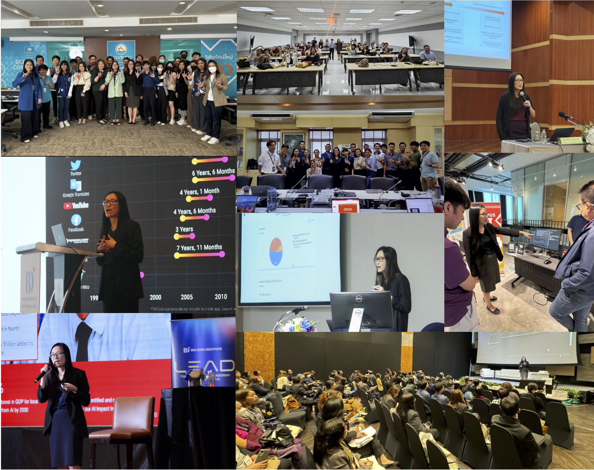
This website provides access to our prompt library.
You will find practical examples and templates to apply to your work context. The library includes prompts for content creation, data analysis, process automation, and creative problem-solving using various AI tools.
You can learn more about Dr. Warasinee and her work at this website: https://sites.google.com/view/agenticaith/home
เครื่องมือ AI หลักที่ควรรู้จัก¶
ในปัจจุบันมีเครื่องมือ AI ให้เลือกใช้มากมาย แต่ 3 ตัวนี้คือที่นิยมมากที่สุดและเหมาะกับการทำงานในชีวิตประจำวัน
ChatGPT¶
ผู้พัฒนา: OpenAI
เข้าถึงได้ที่: https://chatgpt.com
แผนและราคา¶
| แผน | ราคา | สิ่งที่ได้ |
|---|---|---|
| Free | ฟรี | GPT-5 แบบจำกัด (~10 ข้อความ/5 ชั่วโมง) มีโฆษณา |
| Go | $8/เดือน | ใช้งานได้มากขึ้น ไม่มีโฆษณา |
| Plus | $20/เดือน | ใช้งานได้มากขึ้น เข้าถึง tools ครบ |
| Pro | $200/เดือน | ใช้งานไม่จำกัด รวม Deep Research และ Advanced Voice |
จุดแข็ง¶
- เป็นที่รู้จักและใช้งานกว้างขวางที่สุดในโลก
- แม้แผนฟรีก็เข้าถึงโมเดล GPT-5 ได้
- รองรับการสร้างภาพ (DALL·E) และวิเคราะห์ไฟล์ได้
- มี plugin และ GPTs ให้เลือกใช้จำนวนมาก
- แอปมือถือใช้งานง่ายมาก
จุดอ่อน¶
- แผนฟรีมีโฆษณาและขีดจำกัดค่อนข้างต่ำ
- หยุดทำงานบ่อยในช่วงที่มีคนใช้งานมาก
- บางครั้ง hallucinate (สร้างข้อมูลปลอม) โดยเฉพาะเรื่องตัวเลขและวันที่
Google Gemini¶
ผู้พัฒนา: Google DeepMind
เข้าถึงได้ที่: https://gemini.google.com
แผนและราคา¶
| แผน | ราคา | สิ่งที่ได้ |
|---|---|---|
| Free | ฟรี | Gemini 2.5 Flash, 100 AI credits/เดือน |
| Gemini Advanced | $19.99/เดือน | Gemini 2.5 Pro, Deep Research, Veo (สร้างวิดีโอ), 1,000 AI credits/เดือน |
จุดแข็ง¶
- ผูกกับ Google Workspace ได้โดยตรง (Gmail, Docs, Drive, Sheets)
- ค้นหาข้อมูลบนอินเทอร์เน็ตได้แบบ real-time
- แผนฟรีเข้าถึงได้สำหรับคนที่มีบัญชี Google อยู่แล้ว
- เก่งด้านภาษาหลายภาษา รวมถึงภาษาไทย
- รองรับการสร้างวิดีโอด้วย Veo (แผน Advanced)
จุดอ่อน¶
- ขีดจำกัดแผนฟรีไม่ชัดเจน ไม่มีการแจ้งล่วงหน้าก่อนหมด
- ยังเป็นรองในด้านการวิเคราะห์เอกสารและงานเขียนที่ละเอียดอ่อน
- บางครั้งให้คำตอบที่ระมัดระวังเกินไป
Claude¶
ผู้พัฒนา: Anthropic
เข้าถึงได้ที่: https://claude.ai
แผนและราคา¶
| แผน | ราคา | สิ่งที่ได้ |
|---|---|---|
| Free | ฟรี | ใช้งานได้จำกัด (~50-80 ข้อความ/วัน ขึ้นกับชั่วโมง) |
| Pro | $20/เดือน | ใช้งานมากกว่า Free ~5 เท่า เข้าถึง Projects และ Artifacts |
| Max | $100–$200/เดือน | ใช้งานสูงมาก รวม Claude Opus รุ่นล่าสุด |
จุดแข็ง¶
- เก่งที่สุดในการอ่านและวิเคราะห์เอกสาร PDF — แนะนำสำหรับงานวิชาการและการสรุปเนื้อหา
- งานเขียนที่ต้องการความละเอียดและความถูกต้องสูง เช่น รายงาน บทความ อีเมลทางการ
- รองรับบริบทยาวมาก (อ่านเอกสารยาวหลายร้อยหน้าในครั้งเดียวได้)
- ตอบสนองตรงประเด็น ไม่วกวน
จุดอ่อน¶
- ไม่มีฟีเจอร์สร้างภาพหรือวิดีโอ
- แผนฟรีจำกัดมากในช่วงเวลาเร่งด่วน
- ไม่มีการค้นหาอินเทอร์เน็ตในแบบ real-time เท่า Gemini
สรุปเปรียบเทียบ¶
| ChatGPT | Gemini | Claude | |
|---|---|---|---|
| งานเขียนทั่วไป | ✅ ดีมาก | ✅ ดี | ✅ ดีมาก |
| วิเคราะห์ PDF/เอกสาร | ✅ ดี | ✅ พอใช้ | ✅✅ ดีที่สุด |
| ค้นหาข้อมูล real-time | ✅ มี | ✅✅ เชื่อมต่อ Google | ⚠️ จำกัด |
| สร้างภาพ | ✅ DALL·E | ⚠️ จำกัด | ❌ ไม่มี |
| เชื่อมกับ Google Workspace | ❌ | ✅✅ | ❌ |
| ราคาแผนเริ่มต้น | $20/เดือน | $19.99/เดือน | $20/เดือน |
คำแนะนำ: ไม่จำเป็นต้องเลือกเพียงตัวเดียว ผู้เชี่ยวชาญส่วนใหญ่ใช้หลายตัวผสมกัน เช่น ใช้ Gemini ค้นหาข้อมูล ใช้ Claude อ่านและวิเคราะห์ PDF แล้วใช้ ChatGPT เขียนสรุปหรือสร้างภาพ
พูดกับ AI แทนการพิมพ์¶
ไม่อยากพิมพ์? ทุกอุปกรณ์มีฟีเจอร์พูดแปลงเป็นข้อความในตัว ไม่ต้องโหลดแอปเพิ่ม — เปิดใช้งานครั้งเดียวแล้วใช้ได้เลย
🍎 Mac¶
เปิดใช้งานครั้งแรก:
ไปที่ System Settings → Keyboard → เปิด Dictation
วิธีใช้:
กด fn สองครั้งติดกัน แล้วพูดได้เลย กด fn อีกครั้งเพื่อหยุด
🪟 Windows 11¶
ไม่ต้องตั้งค่า พร้อมใช้ได้เลย
วิธีใช้:
คลิกในช่อง text ใดก็ได้ → กด Windows + H → พูดได้เลย
📱 iPhone¶
เปิดใช้งานครั้งแรก:
Settings → General → Keyboard → เปิด Enable Dictation
วิธีใช้:
แตะช่องพิมพ์ข้อความ → แตะไอคอน 🎤 บน keyboard → พูดได้เลย
🤖 Android¶
Gboard (keyboard มาตรฐาน) มีฟีเจอร์นี้ในตัว
วิธีใช้:
แตะช่องพิมพ์ข้อความ → แตะไอคอน 🎤 บน keyboard → พูดได้เลย
20 Prompts พื้นฐานสำหรับเริ่มต้นใช้งาน AI¶
รวม prompts ที่ใช้งานได้จริงสำหรับเริ่มต้นใช้ AI ลองคัดลอก prompts เหล่านี้ไปใช้กับ ChatGPT, Claude หรือ Google Gemini ได้เลย
Prompts สั้นๆ ใช้งานง่าย¶
ถามเพื่อเรียนรู้:
ช่วยอธิบาย Growth Mindset คืออะไร ให้เข้าใจง่ายๆ
แนะนำหนังสือเกี่ยวกับการพัฒนาตนเองที่น่าอ่านหน่อย
มีเทคนิคอะไรบ้างในการจดบันทึกให้มีประสิทธิภาพ
แนะนำช่อง YouTube สอนภาษาอังกฤษดีๆ หน่อย
อยากเริ่มต้นออกกำลังกายที่บ้าน แนะนำท่าง่ายๆ ให้หน่อย
ถามเรื่องงาน:
มีวิธีจัดการความเครียดจากงานอย่างไรบ้าง
เทคนิคการทำงานให้เสร็จเร็วมีอะไรบ้าง
แนะนำแอพที่ช่วยเพิ่มประสิทธิภาพการทำงานหน่อย
วิธีเตรียมตัวสำหรับการพรีเซนต์งานมีอะไรบ้าง
เทคนิคการจัดการอีเมลไม่ให้ท่วมมีอะไรบ้าง
Prompts แบบละเอียด ได้คำตอบชัดเจน¶
เรื่องการเรียนรู้:
ช่วยแนะนำแผนการเรียนภาษาอังกฤษด้วยตัวเองโดย:
- ใช้เวลาวันละ 30 นาที
- เน้นการพูดและการฟัง
- ใช้แอพและสื่อออนไลน์ฟรี
- เหมาะกับระดับ intermediate
- มีวิธีวัดความก้าวหน้า
ช่วยแนะนำหนังสือที่น่าอ่านโดยมีเงื่อนไขดังนี้:
- เกี่ยวกับการพัฒนาภาวะผู้นำ
- เขียนในช่วง 5 ปีที่ผ่านมา
- มีการแปลเป็นภาษาไทย
- อ่านจบได้ภายใน 1-2 สัปดาห์
- เน้นการประยุกต์ใช้จริง
สำหรับแต่ละเล่ม ช่วยสรุปประเด็นหลักและเหตุผลที่ควรอ่านด้วย
ช่วยสร้างแผนการออกกำลังกายสำหรับคนทำงานออฟฟิศที่:
- ไม่มีเวลาไปฟิตเนส
- มีปัญหาปวดหลังและคอ
- ทำได้ที่บ้านหรือที่ทำงาน
- ใช้เวลาไม่เกิน 20 นาที/วัน
- ไม่ต้องใช้อุปกรณ์พิเศษ
พร้อมคำแนะนำเรื่องความปลอดภัยและการวอร์มอัพ
เรื่องการทำงาน:
ช่วยวิเคราะห์และแนะนำวิธีจัดการเวลาสำหรับตารางงานนี้:
- ประชุมทีม 2-3 ชั่วโมง/วัน
- ต้องตอบอีเมลและแชท 50-60 ครั้ง/วัน
- มีงานเอกสารที่ต้องทำ 3-4 ชั่วโมง/วัน
- ต้องให้คำปรึกษาทีม 1-2 ชั่วโมง/วัน
แนะนำวิธีจัดลำดับความสำคัญ เทคนิคการทำงานให้เร็วขึ้น และการใช้เทคโนโลยีช่วย
ช่วยแนะนำวิธีพัฒนาทักษะการพูดในที่สาธารณะ สำหรับคนที่:
- ไม่มั่นใจเวลาพูดต่อหน้าคนเยอะๆ
- พูดเร็วเกินไปเวลาตื่นเต้น
- ต้องนำเสนองานบ่อย
- อยากพัฒนาการใช้ภาษากาย
แนะนำทั้งเทคนิคระยะสั้นและระยะยาว พร้อมวิธีฝึกซ้อม
ช่วยสร้างแผนพัฒนาตนเองในที่ทำงาน โดย:
- เน้นทักษะการสื่อสารและการทำงานเป็นทีม
- พัฒนาความเป็นผู้นำ
- เรียนรู้เทคโนโลยีใหม่ๆ
- สร้างเครือข่ายในองค์กร
แนะนำกิจกรรมที่ทำได้จริง พร้อมวิธีวัดความสำเร็จ
คำถามเชิงไอเดีย:
ช่วยระดมไอเดียกิจกรรม team building ที่:
- ทำในออฟฟิศได้
- ใช้เวลา 1-2 ชั่วโมง
- เหมาะกับทีม 10-15 คน
- งบประมาณไม่เกิน 2000 บาท
- สนุกและได้ประโยชน์
อธิบายวิธีจัดกิจกรรมและผลลัพธ์ที่คาดว่าจะได้
ช่วยคิดไอเดียของขวัญปีใหม่สำหรับทีมงานโดย:
- ราคาชิ้นละไม่เกิน 500 บาท
- เน้นของใช้ในชีวิตประจำวัน
- เป็นมิตรกับสิ่งแวดล้อม
- มีประโยชน์จริงๆ
- หาซื้อได้ง่าย
แนะนำพร้อมเหตุผลและแหล่งที่สามารถหาซื้อได้
ช่วยแนะนำไอเดียการจัดโต๊ะทำงานให้น่าทำงานโดย:
- พื้นที่จำกัด (โต๊ะขนาด 120x60 ซม.)
- ต้องวางคอมพิวเตอร์ 2 จอ
- ต้องการพื้นที่จดบันทึก
- อยากมีมุมตั้งของตกแต่งเล็กๆ
- งบประมาณไม่เกิน 3000 บาท
พร้อมแนะนำอุปกรณ์จัดระเบียบและการจัดวางที่เป็นไปได้
💡 เคล็ดลับ: - ยิ่งให้รายละเอียดชัดเจน คำตอบยิ่งตรงจุด - ถ้าไม่พอใจคำตอบ สามารถขอให้ AI อธิบายเพิ่มหรือปรับเปลี่ยนได้ - ลองปรับ prompts เหล่านี้ให้เข้ากับความต้องการของคุณ
Gen AI Basics
Personalized Learning ด้วย ChatGPT¶
👩🏻💼 สถานการณ์สมมติ¶
สมมติว่าคุณกำลังคิดที่จะสร้าง startup แนว agritech และต้องการทำความเข้าใจเทรนด์เทคโนโลยีเกษตรอัจฉริยะ (Smart Farming) เพื่อหาแนวทางพัฒนาผลิตภัณฑ์ที่น่าสนใจ
🚀 เปิดการสนทนา¶
เทรนด์เทคโนโลยีเกษตรอัจฉริยะ (Smart Farming) ในภาคอีสานของประเทศไทย ตอนนี้มีอะไรบ้าง
หาก ChatGPT ไม่ตอบภาษาไทย ใช้พร้อมท์นี้
เทรนด์เทคโนโลยีเกษตรอัจฉริยะ (Smart Farming) ในภาคอีสานของประเทศไทย ตอนนี้มีอะไรบ้าง ตอบเป็นภาษาไทยนะ
ตัวอย่างคำตอบที่ 1
https://chatgpt.com/share/6800b3fc-9eb4-8012-8c8e-d212ac836dda
ตัวอย่างคำตอบที่ 2
https://chatgpt.com/share/6800b0b4-c718-8012-a566-8f495a933c07
บทเรียนและข้อสังเกต
- จะเห็นว่าถาม AI หลายครั้งตอบไม่เหมือน แต่ละครั้งให้ข้อมูลที่ต่างกันออกไป (เป็นธรรมชาติของเอไอลักษณะนี้ที่จะคิดไปต่างๆนาๆได้เหมือนคน ถ้าเจอคำถามกำกวม ก็จะตอบได้หลากหลาย) และถามต่างกันนิดเดียว พฤติกรรมการตอบแต่ละครั้งจะต่างกันไป
- เวลาคุยกับเอไอไปนานๆต่อเนื่อง เขาจะมีความทรงจำเกี่ยวกับการสนทนา และเขาจะพยายามตอบไปในทิศทางเดียวกันกับสิ่งที่คุยไปก่อนหน้า ถ้าเราอยากได้คำตอบใหม่ๆ หลากหลาย เราสามารถเริ่มบทสนทนาใหม่เหมือนเป็นการล้างความจำของเอไอ ก่อนจะถามเขาอีกครั้ง
- เราอาจจะกดปุ่ม "Search" หรือ ใส่คีย์เวิร์ดคำว่า "ช่วยหาข้อมูลในอินเตอร์เน็ตมาตอบนะ" ให้เอไอเอาข้อมูลใหม่ๆมาตอบ (เพราะถ้าให้ตอบจากข้อมูลที่เขามีในหัว อาจจะเป็นข้อมูลเก่าหรือเป็นข้อมูลที่ไม่ตรงกับความต้องการของเรา)
- ChatGPT จะไปหาข้อมูลในอินเตอร์เน็ตแล้วเอาลิงค์มาอ้างอิง ให้เราสามารถกดเข้าไปดูได้ เราควรดูต้นตอของข้อมูลที่เอไอเอามาตอบเสมอเพื่อตรวจเช็คความถูกต้องของคำตอบ
- เราอาจจะต้องบอกให้เขา "ช่วยตอบเป็นภาษาไทยหน่อยนะ" ถ้าเอไอตอบภาษาอังกฤษมา
🚀 ไม่ต้องอ่านเอง สรุปให้¶
เมื่อใช้ AI หาข้อมูลแล้ว อาจจะได้ข้อมูลทั้งภาษาไทยและอังกฤษ สำหรับคนที่ไม่ถนัดอังกฤษหรือขี้เกียจอ่าน ไม่ต้องกังวล เดี๋ยวเราจะให้เอไอช่วยอ่านข้อมูลเหล่านี้ให้เรา
สรุปบทความในลิงค์นี้ให้หน่อย
https://ap.fftc.org.tw/article/2511
การสรุปของ ChatGPT ในตัวอย่างนี้ สำหรับบางคนอาจไม่ทำให้เข้าใจและเห็นภาพเท่าไหร่
วันที่ 15 เมษายน 2025 โมเดลล่าสุดของ OpenAI ได้แก่ GPT-4.1 รองรับ Context Window ขนาด 1 ล้าน tokens ซึ่งถือว่าเพิ่มขึ้นอย่างมากเมื่อเทียบกับโมเดลก่อนหน้า เช่น GPT-4o ที่รองรับได้เพียง 128,000 tokens
Context Window ช่วยให้โมเดลสามารถประมวลผลและจดจำข้อมูลได้มากขึ้นและทำให้การสรุปละเอียดขึ้นเมื่อเทียบกับโมเดลรุ่นเก่า
แต่ถ้าเราต้องการก็สามารถสั่งให้ ChatGPT สรุปตามใจเราได้เลย เช่น
สรุปบทความใน PDF เป็นภาษาไทยให้หน่อย
ดึงข้อมูลในหัวข้อต่อไปนี้มาอย่างละเอียด
1. เทคโนโลยีที่พูดถึงในบทความคือเทคโนโลยีอะไร มีส่วนประกอบอะไรบ้าง
2. ถูกนำมาใช้ในพื้นที่ไหนของประเทศไทย ใช้อย่างไร
3. ประโยชน์ที่เกษตรกรได้รับจากเทคนี้มีอะไรบ้าง
4. มีการวัดผลในระยะแรกหรือไม่ วัดอย่างไร ผลลัพธ์เป็นอย่างไร
หรือให้ feedback เพื่อให้สรุปในแบบที่เราต้องการมากขึ้น
บทสรุปที่เธอให้มาไม่ค่อยละเอียดเลย มีบางประเด็นตกหล่น ช่วยอธิบายใหม่อย่างละเอียดมากๆ อธิบายทีละประเด็นตั้งแต่ต้นบทความถึงท้ายบทความ ใช้ภาษาแบบที่คนไทยทั่วไปเข้าใจได้ง่ายๆ ดึงเอาข้อเท็จจริงมาโชว์ให้ครบและ quote ข้อความจาก PDF มายืนยันด้วยว่าสรุปถูก
ลองใช้ Claude ในการสรุปบ้าง¶
ลองให้ Claude ทำ prompt เดียวกันนี้ซิ ทำดีกว่าไหม
🚀 สรุปและรวบรวมข้อมูลจากหลายเว็บไซท์¶
หลายคนไม่ทราบว่าเราให้เอไอไปอ่านข้อมูลจากหลากหลายแหล่งแล้วมาสรุปเป็นตารางก็ได้นะ (งานนี้เป็นงานยากที่ภาษาคนทำ LLM เรียกว่า Multi-hop Retrieval อาจจะมีข้อจำกัดถ้าคุณใช้ตัวฟรี)
https://chatgpt.com/share/80b2755a-4f31-43fc-8c7d-509b2c97e830
เทคนิคการใช้เอไอที่ควรรู้
- ถ้าจับได้เอไอว่า Hallucinate ให้ใช้คำสั่งว่า "แสดง quote ข้อมูลจากเว็บไซท์ที่เธอใช้ในการตอบคำถาม" ทำให้อาการหลอนหายไปทันที
- สั่งให้ AI สร้างตารางได้เสมอ แค่บอกชื่อคอลัมภ์ (ถ้าคิดไม่ออกให้เอไอออกแบบคอลัมภ์ให้)
🚀 ถามเจาะลึกต่อ¶
พลังของการใช้เอไอคือความสามารถในการถามเจาะลึกต่อไปได้เรื่อยๆ อ่านสิ่งที่เอไอให้มา แล้วลงลึกไปอีก สงสัยอะไรก็ถามจนกว่าจะเข้าใจ ให้หาข้อมูล ให้วิเคราะห์ จนกว่าเราจะเห็นภาพ
Vertical Farming คืออะไร และมีข้อดีข้อเสียอะไรบ้าง? หาจากอินเตอร์เน็ตมาตอบเป็นภาษาไทย
ช่วยให้ข้อมูลเกี่ยวกับ startup ที่ประสบความสำเร็จในการทำ Vertical Farming ในเกาหลี รวมถึงเทคโนโลยีที่พวกเขาใช้และปัจจัยสำคัญที่ทำให้ประสบความสำเร็จ
หาข้อมูลในอินเตอร์เน็ตแล้วช่วยลิสต์ชื่อพืชใบเขียวหรือผักที่นิยมในระบบ Vertical Farming พร้อมเหตุผลว่าทำไมพืชเหล่านี้ถึงเป็นที่นิยม และโอกาสทางธุรกิจของพืชแต่ละชนิดในการทำ Vertical Farming
สำหรับพืชแต่ละชนิดที่ลิสต์มาข้างบน หาข้อมูลในอินเตอร์เน็ตในพืชแต่ละชนิดว่าในประเทศไทย ราคาต่อกิโลกรัมอยู่ที่กี่บาทถ้าขายตลาดในประเทศ ทำเป็นตารางพร้อมใส่ลิงค์อ้างอิงในแต่ละช่อง ถ้าหาไม่เจอให้เสิชหาราคาขายในต่างประเทศเป็นภาษาอังกฤษ เมื่อหาเจอแล้วให้ใส่ quote ข้อความจากเว็บที่ได้ข้อมูลมายืนยันด้วย
ช่วยวิเคราะห์ Return on Investment (ROI) สำหรับการสร้าง Vertical Farming Facility ในกรุงเทพฯ โดยคำนึงถึงต้นทุนค่าไฟฟ้า ระบบควบคุมสิ่งแวดล้อม ค่าแสงไฟ LED และผลตอบแทนที่ได้จากการขายผลผลิตในตลาดท้องถิ่น think through it step-by-step ตอบเป็นภาษาไทย
เราได้ไอเดียมากมายจากการคุยกับเอไอ ความทรงพลังของเอไอคือเราสามารถถามเจาะลึกไปได้เรื่อยๆ ทำให้เราสามารถเรียนรู้ทำความเข้าใจคิดวิเคราะห์เรื่องใหม่ๆได้รอบด้านและรวดเร็วมาก
🚀 หาข้อมูลเสร็จหมดแล้ว ช่วยเราสรุปก็ได้อีก¶
ช่วยสรุปการสนทนาทั้งหมดที่เราได้คุยกันเกี่ยวกับการทำ Vertical Farming เป็นคำถามและคำตอบ ฉันจะบันทึกไว้อ่านทีหลัง และถ้าฉันต้องการที่จะทำสตาร์ทอัพ Vertical Farming ฉันจะต้องหาข้อมูลเรื่องอะไรต่ออีก
https://chatgpt.com/share/db8c1c28-d402-428b-ae45-bee37a07007b
บทเรียนสำคัญ
การคุยกับเอไอ ถามไปเรื่อยๆให้หาข้อมูลมาตอบเรา ทำให้เราเรียนรู้ความเป็นไปและสภาพแวดล้อมของธุรกิจได้อย่างรวดเร็ว สามารถประยุกต์ใช้ในการหาข้อมูลแทบจะทุกเรื่อง ไม่ต้องเสิชเอง สรุปเอง คิดเอง ทั้งหมดให้เอไอจัดการให้บางส่วน บางเรื่อง (อาจจะคิดแทนเราไม่ได้ทุกเรื่อง แต่ก็ยังเร็วกว่าหาข้อมูลเอง คิดเองทีละเรื่อง)
“Judge a man by his questions rather than his answers.” — Voltaire
Personalized Learning ด้วย AI: Lean Manufacturing สำหรับ Production Manager¶
👩🏻💼 สถานการณ์สมมติ¶
สมมติว่าคุณเป็น Production Manager ที่โรงงานผลิตอุปกรณ์ไฟฟ้า รับผิดชอบสายการผลิต transformer และ fuse switch ที่ต้องส่งให้ลูกค้าองค์กรขนาดใหญ่อย่าง MEA และ PEA
ปัญหาที่คุณเจอทุกเดือน: lead time ยาว สินค้ารอในกระบวนการ (WIP) เยอะ บางสถานีงานทำงานล้น บางสถานีว่าง คุณได้ยินคำว่า Lean Manufacturing มาสักพัก แต่ยังไม่เคยศึกษาอย่างจริงจัง และไม่รู้ว่าจะเอามาใช้กับโรงงานผลิตอุปกรณ์ไฟฟ้าได้จริงหรือเปล่า
วันนี้คุณจะใช้ AI เป็นครูส่วนตัว — ไม่ต้องลงคอร์ส ไม่ต้องรออ่านหนังสือ ถามได้เลย ลงลึกได้ทันที
🚀 เปิดการสนทนา — Lean คืออะไร ในภาษาที่ฉันเข้าใจ¶
เริ่มจากการถามให้ AI อธิบาย Lean ในบริบทของโรงงานผลิตอุปกรณ์ไฟฟ้า ไม่ใช่ทฤษฎีทั่วไป
ฉันเป็น Production Manager ที่โรงงานผลิตอุปกรณ์ไฟฟ้า เช่น transformer และ fuse switch ในประเทศไทย
Lean Manufacturing คืออะไร อธิบายในแง่ที่เกี่ยวข้องกับโรงงานผลิตอุปกรณ์ไฟฟ้าโดยตรง ไม่ต้องพูดถึง Toyota หรือรถยนต์ ฉันอยากเข้าใจว่า Lean จะแก้ปัญหาอะไรในสายการผลิตของฉัน ตอบเป็นภาษาไทย
ตัวอย่างคำตอบที่ได้
Lean Manufacturing สำหรับโรงงานอุปกรณ์ไฟฟ้า
Lean Manufacturing คือแนวคิดที่มุ่งกำจัด "ของเสีย" (Waste) ทุกรูปแบบออกจากกระบวนการผลิต เพื่อให้งานไหลตรงจากวัตถุดิบถึงมือลูกค้าได้เร็วที่สุด โดยไม่มีขั้นตอนที่ไม่เพิ่มคุณค่าแทรกอยู่
ปัญหาที่ Lean แก้ได้ในโรงงานผลิตอุปกรณ์ไฟฟ้า:
- งานรอในกระบวนการ (WIP) สูง: transformer ที่พันคอยล์เสร็จแล้ว รออยู่หน้าสถานีทดสอบเป็นวัน เพราะสถานีทดสอบเป็น bottleneck — Lean จะมองว่านี่คือ waste ที่ต้องกำจัด
- Lead time ยาว: ลูกค้าสั่ง custom transformer แล้วรอ 6 สัปดาห์ ทั้งที่เวลาทำงานจริงอาจแค่ 3 วัน ที่เหลือคืองานที่รออยู่ในระบบ
- คุณภาพไม่สม่ำเสมอ: บางล็อต fuse switch ผ่านการทดสอบ 100% บางล็อตมี defect rate 3–5% โดยไม่รู้สาเหตุ
- คนทำงานไม่สมดุล: ช่างพันคอยล์ทำงานล้น ขณะที่ช่างประกอบตู้รอชิ้นงาน
หัวใจของ Lean คือการตอบคำถามนี้: ถ้าลบขั้นตอนที่ไม่เพิ่มมูลค่าออก ลูกค้าจะได้รับสินค้าเร็วขึ้นโดยใช้ต้นทุนน้อยลงหรือไม่? ถ้าใช่ — นั่นคือโอกาสสำหรับ Lean
บทเรียนและข้อสังเกต
- สังเกตว่าการ ให้บริบทชัด (โรงงานผลิตอุปกรณ์ไฟฟ้า, transformer, fuse switch) ทำให้คำตอบตรงกว่าการถามว่า "Lean คืออะไร" แบบกลางๆ มาก AI ตอบได้เฉพาะเจาะจงทันที
- คำตอบแรกมักจะกว้าง — ให้มองว่านี่คือ "เปิดการสนทนา" แล้วค่อยถามลึกลงไปทีละประเด็น
- ใส่คำว่า "ตอบเป็นภาษาไทยนะ" ต่อท้าย prompt หากอยากจะสนทนาเป็นภาษาไทย
🚀 ไม่ต้องอ่านเองทั้งหมด ให้ AI สรุปให้¶
เมื่อ AI แนะนำคำศัพท์หรือแนวคิดใหม่ เราสามารถให้มัน search หาข้อมูลและสรุปให้ฟังในแบบที่เราต้องการ
ช่วยหาข้อมูลในอินเตอร์เน็ตเกี่ยวกับ "8 wastes of Lean Manufacturing" แล้วสรุปให้ฉันเข้าใจ โดยยกตัวอย่าง waste แต่ละประเภทจากโรงงานผลิตอุปกรณ์ไฟฟ้าหรือ electrical equipment ตอบเป็นภาษาไทย
ตัวอย่างคำตอบที่ได้
8 Wastes ใน Lean Manufacturing — ฉบับโรงงานอุปกรณ์ไฟฟ้า
เรียกย่อว่า DOWNTIME
| # | ประเภท Waste | ตัวอย่างในโรงงานอุปกรณ์ไฟฟ้า |
|---|---|---|
| 1 | Defects (ของเสีย) | Transformer พันคอยล์ผิดสเปค ต้องรื้อและพันใหม่ / fuse switch ขันสกรูไม่ถึงแรงบิด |
| 2 | Overproduction (ผลิตเกิน) | ผลิต standard transformer สต็อกไว้โดยยังไม่มีออเดอร์ ทำให้ทุน lock อยู่ใน WIP |
| 3 | Waiting (การรอ) | ชิ้นงานรออยู่หน้าห้องทดสอบ 2–3 วัน เพราะมีเครื่องทดสอบแค่ 1 เครื่อง |
| 4 | Non-utilized talent (ไม่ใช้ศักยภาพคน) | ช่างอาวุโสที่รู้ปัญหา production มาก แต่ไม่มีกระบวนการรับ feedback ของพวกเขา |
| 5 | Transportation (การขนย้ายที่ไม่จำเป็น) | ชิ้นส่วนถูกขนจากโกดังไปสาย A แล้วกลับไปที่โกดัง แล้วค่อยไปสาย B |
| 6 | Inventory (สินค้าคงคลังเกิน) | copper wire และ core เหล็ก stock มาก เพราะกลัวขาด ทำให้ใช้พื้นที่และเงินทุนหมุนเวียน |
| 7 | Motion (การเคลื่อนไหวที่ไม่จำเป็น) | ช่างเดินหาอุปกรณ์ทั่วโรงงาน เพราะไม่มีระบบ storage ที่เป็นระเบียบ |
| 8 | Extra Processing (กระบวนการเกิน) | ตรวจสอบคุณภาพซ้ำซ้อน 3 รอบในขั้นตอนเดียวกัน เพราะไม่มั่นใจในมาตรฐานก่อนหน้า |
waste ที่พบบ่อยที่สุดในโรงงานอุปกรณ์ไฟฟ้า: Waiting, Defects, และ Non-utilized talent มักเป็น 3 อันดับแรก
จาก 8 wastes ที่เธอบอกมา ฉันอยากเข้าใจมากขึ้นเรื่อง "Waiting" และ "Defects" เพราะนั่นคือปัญหาที่ฉันเจออยู่จริง ช่วยอธิบายว่าโรงงานอุปกรณ์ไฟฟ้าที่ใช้ Lean ลดปัญหาสองอย่างนี้ได้อย่างไร ให้ตัวอย่างที่เป็นรูปธรรม
ตัวอย่างคำตอบที่ได้
การลด Waiting:
โรงงาน Schneider Electric ในเมือง Monterrey เม็กซิโก ใช้ Lean ลด waiting time ในสายผลิต circuit breaker โดยทำ line balancing — วัดเวลาแต่ละสถานี แล้วจัดงานใหม่ให้ใกล้เคียงกัน ผลคือ WIP ลด 40% ใน 3 เดือนแรก
สำหรับโรงงานอุปกรณ์ไฟฟ้าของคุณ วิธีที่ใช้บ่อยคือ: - วัด cycle time จริงของแต่ละสถานี แล้วเปรียบกับ takt time (เวลาที่ควรใช้ต่อชิ้น) - สถานีที่ใช้เวลาเกิน takt คือ bottleneck — ต้องเพิ่มคนหรือเครื่อง - สถานีที่ใช้เวลาน้อยกว่า takt คือ "ว่างรองาน" — ต้องปรับ workload
การลด Defects:
แนวทางที่ใช้ใน Lean คือ Poka-Yoke (mistake-proofing) — ออกแบบกระบวนการหรืออุปกรณ์ให้ทำผิดได้ยาก เช่น: - ใส่ torque wrench ที่ตั้งค่าแรงบิดไว้ล่วงหน้า ไม่ให้ขันน้อยหรือมากเกิน - ใช้ fixture ที่ lock ชิ้นงานในตำแหน่งที่ถูกต้องก่อนพัน เพื่อป้องกันการพันผิดพิมพ์
บทเรียนและข้อสังเกต
- เมื่อ AI ตอบภาพรวมมาแล้ว ให้ เลือกเฉพาะประเด็นที่เกี่ยวข้อง แล้วถามลึกต่อ
- ถ้าคำตอบที่ได้ไม่ละเอียดพอ สามารถบอก AI ว่า "ยกตัวอย่างที่เป็นรูปธรรมมากกว่านี้" หรือ "ให้ตัวเลขมาด้วย"
- ให้ AI หาข้อมูลในอินเตอร์เน็ตโดยกดปุ่ม Search หรือพิมพ์ "ช่วยหาข้อมูลจากอินเตอร์เน็ตมาด้วย" เพื่อให้ได้ข้อมูลที่เป็นปัจจุบัน
🚀 ทำความเข้าใจสถานการณ์จริงที่โรงงานของเรา¶
ขั้นนี้คือการเอา context จริงของโรงงานเข้ามา ให้ AI ช่วยวิเคราะห์แทนที่จะถามทฤษฎีลอยๆ
ฉันเป็น Production Manager ที่โรงงานผลิตอุปกรณ์ไฟฟ้า สายการผลิตของฉันมีดังนี้:
สายผลิต Transformer:
- รับ order → ออกแบบ → จัดซื้อวัสดุ (copper wire, core เหล็ก) → ตัด core → พันคอยล์ → ประกอบ → เติมน้ำมัน → ทดสอบ → ทำสี → บรรจุ → ส่ง
ปัญหาที่เจออยู่:
- ขั้นตอนพันคอยล์ใช้เวลาตามสเปค 4 ชั่วโมงต่อชิ้น แต่เวลารวม lead time จาก order ถึงส่งของจริงคือ 6 สัปดาห์
- ห้องทดสอบมีคิวรออยู่ 2–3 วันเสมอ มีเครื่องทดสอบแค่ 1 เครื่อง
- defect ที่พบหลังทดสอบประมาณ 5% ต้องนำกลับมาแก้ไข
- พื้นที่หน้าห้องทดสอบเต็มด้วย WIP ตลอด
ช่วยวิเคราะห์ว่า waste ประเภทไหนใน 8 wastes น่าจะอยู่ในสายการผลิตของฉัน และควรเริ่มแก้ที่ไหนก่อน ตอบเป็นภาษาไทย
ตัวอย่างคำตอบที่ได้
การวิเคราะห์ Waste ในสายผลิต Transformer ของคุณ
จากข้อมูลที่ให้มา พบ waste ที่ชัดเจน 4 ประเภท:
1. Waiting (สูงมาก — แก้ก่อน) คิวหน้าห้องทดสอบ 2–3 วัน บ่งชี้ว่าห้องทดสอบเป็น bottleneck หลัก ถ้า lead time จริงคือ 6 สัปดาห์ แต่เวลาทำงานจริงใน process แค่ 1–2 วัน แสดงว่างาน "รอ" อยู่กว่า 80% ของเวลาทั้งหมด
2. Defects (สำคัญ — ต้นทุนสูง) defect rate 5% หมายความว่า 1 ใน 20 ตัวต้องแก้ใหม่ สำหรับ transformer ที่ใช้เวลาผลิต 4+ ชั่วโมงต่อชิ้น ต้นทุนการแก้งานคือเวลา ค่าแรง และความเสี่ยงที่จะสร้างปัญหาใหม่ระหว่างแก้
3. Overproduction (ระดับปานกลาง) ไม่ได้ระบุมา แต่ WIP ที่กองหน้าห้องทดสอบ มักมาจากสายผลิตก่อนหน้าที่วิ่งเร็วเกินกว่าที่ห้องทดสอบรับได้ — นี่คือ overproduction ที่ซ่อนอยู่
4. Extra Processing (ระดับต่ำ แต่ควรตรวจสอบ) defect rate 5% อาจมาจากการขาด inspection ในระหว่าง process ทำให้ต้องตรวจหนักตอนท้าย
แนะนำลำดับการแก้: 1. ก่อนอื่น — วัด cycle time จริงทุกสถานีก่อน (อย่าเพิ่งเปลี่ยนอะไร) 2. เพิ่มเครื่องทดสอบหรือ outsource การทดสอบ เพื่อแก้ bottleneck ทันที 3. หาสาเหตุ defect 5% — ส่วนใหญ่มีสาเหตุซ้ำๆ ไม่กี่อย่าง
เทคนิคที่ควรรู้
- ยิ่งให้ AI รู้ ข้อมูลจริงจากโรงงานคุณ (cycle time, defect rate, จำนวนเครื่อง) มากเท่าไหร่ การวิเคราะห์ที่ได้จะแม่นยำและใช้ได้จริงมากขึ้น
- AI ไม่ได้ไปเดินดูโรงงานของคุณ — มันวิเคราะห์จากข้อมูลที่คุณบอก ถ้าคุณบอกข้อมูลไม่ครบ คำตอบจะไม่ครบด้วย บอกได้เยอะเท่าไหร่ยิ่งดี
- ถ้าคำตอบที่ได้ไม่ตรง ให้บอกว่า "ข้อนั้นไม่ใช่ปัญหาของฉัน เพราะ..." แล้ว AI จะปรับ
🚀 สรุปเครื่องมือ Lean จากหลายแหล่งในครั้งเดียว¶
ตอนนี้คุณรู้แล้วว่า waste ของคุณอยู่ที่ไหน ขั้นต่อไปคือหาว่ามีเครื่องมืออะไรบ้างที่ใช้แก้ปัญหานี้ได้
ช่วยหาข้อมูลในอินเตอร์เน็ตแล้วสรุปเครื่องมือ Lean ที่นิยมใช้ในโรงงานผลิตอุปกรณ์ไฟฟ้าหรือ discrete manufacturing ทำเป็นตารางเปรียบเทียบ:
- ชื่อเครื่องมือ
- แก้ waste ประเภทไหน
- ความยากในการ implement (ง่าย/ปานกลาง/ยาก)
- ผลที่เห็นได้เร็วแค่ไหน
ตอบเป็นภาษาไทย
ตัวอย่างคำตอบที่ได้
| เครื่องมือ | แก้ waste ประเภทไหน | ความยาก | เห็นผลเมื่อไหร่ |
|---|---|---|---|
| 5S (Sort, Set, Shine, Standardize, Sustain) | Motion, Defects, Waiting | ง่าย | 1–4 สัปดาห์ |
| Value Stream Mapping (VSM) | ทุก waste — เห็นภาพรวม | ปานกลาง | ไม่ได้แก้เอง แต่บอกว่าต้องแก้อะไร |
| Kanban | Overproduction, Inventory, Waiting | ปานกลาง | 1–3 เดือน |
| Kaizen Events (workshop 3–5 วัน) | ทุก waste ในพื้นที่เฉพาะ | ปานกลาง | 1 สัปดาห์หลัง event |
| OEE Measurement | Waiting, Defects, Overproduction | ง่าย (แค่วัด) | ทันที — เห็นปัญหาที่ซ่อนอยู่ |
| Poka-Yoke | Defects | ยาก (ต้องออกแบบ) | ทันทีหลัง implement |
| SMED (ลดเวลา changeover) | Waiting, Overproduction | ยาก | 1–3 เดือน |
| Standard Work | Defects, Motion, Waiting | ปานกลาง | 2–8 สัปดาห์ |
แนะนำสำหรับโรงงานที่เพิ่งเริ่ม Lean: เริ่มด้วย OEE + 5S ก่อน เพราะ OEE จะบอกว่าเครื่องจักรคุณมีประสิทธิภาพจริงแค่ไหน และ 5S จะสร้างวินัยพื้นฐานก่อน implement เครื่องมืออื่น
เทคนิคการใช้ AI ที่ควรรู้
- ถ้าตารางที่ได้ขาดคอลัมน์ที่ต้องการ สั่ง AI ได้เลยว่า "เพิ่มคอลัมน์ 'ต้นทุน implementation โดยประมาณ' ด้วย" มันจะ update ตารางให้ทันที
- ถ้าต้องการเปรียบเทียบสองเครื่องมือโดยเฉพาะ เช่น Kanban vs OEE ให้ถามตรงๆ ว่า "เปรียบเทียบ Kanban และ OEE สำหรับโรงงานที่มี bottleneck ที่สถานีทดสอบ"
- ให้ quote ข้อมูลจากเว็บอ้างอิงเสมอ เพราะ AI อาจ hallucinate ตัวเลข
🚀 ถามเจาะลึกต่อ — เข้าใจเครื่องมือแต่ละอย่างจริงๆ¶
เมื่อเห็นภาพรวมแล้ว เลือกเครื่องมือที่คิดว่าจะลองใช้ก่อน แล้วถามลึกเข้าไปอีก
ฉันสนใจจะเริ่มด้วย OEE เพราะอยากรู้ก่อนว่าเครื่องทดสอบของฉันมีประสิทธิภาพจริงแค่ไหน
OEE คำนวณอย่างไร? อธิบายสูตรและวิธีเก็บข้อมูล พร้อมยกตัวอย่างว่าถ้าเครื่องทดสอบ transformer ของฉันทำงาน 8 ชั่วโมงต่อวัน จะวัด OEE อย่างไร ตอบเป็นภาษาไทย
ถ้า OEE ของเครื่องทดสอบฉันออกมาที่ 45% ซึ่งต่ำกว่า world class ที่ 85% มาก — 45% หมายความว่าอะไร และฉันควรดูที่ตัวแปรไหนก่อน (Availability, Performance, หรือ Quality)?
อธิบาย Value Stream Mapping (VSM) ให้ฉันเข้าใจ โดยยกตัวอย่างว่า VSM ของสายผลิต transformer ตั้งแต่รับ order จนถึงส่งของจะหน้าตาเป็นอย่างไร มีสัญลักษณ์อะไรบ้างที่ต้องรู้ ตอบเป็นภาษาไทย
ใน VSM มีคำว่า "takt time" — takt time คืออะไร และถ้าโรงงานฉันรับ order transformer ได้ 20 ตัวต่อเดือน ทำงาน 22 วัน วันละ 2 กะๆ ละ 8 ชั่วโมง takt time ของฉันคือเท่าไหร่ และจะเอาตัวเลขนี้ไปใช้อะไรต่อ?
บทเรียนและข้อสังเกต
- การถามแบบต่อยอด (ถามต่อจากคำตอบก่อนหน้า) ทำให้ AI เข้าใจบริบทสะสม และคำตอบจะเชื่อมโยงกันมากขึ้นเรื่อยๆ อย่าเริ่มบทสนทนาใหม่โดยไม่จำเป็น
- การใส่ตัวเลขจริง (8 ชั่วโมง, 20 ตัวต่อเดือน, 22 วัน) ทำให้คำตอบออกมาเป็น output ที่ใช้ได้จริง ไม่ใช่แค่ทฤษฎี
- ถ้า AI คำนวณผิด ให้บอกว่า "ช่วยแสดง step-by-step ของการคำนวณมาด้วย" เพื่อให้ตรวจสอบได้
🚀 หาข้อมูลเสร็จแล้ว ให้ AI สรุปให้จำได้¶
ช่วยสรุปสิ่งที่เราได้คุยกันเกี่ยวกับ Lean Manufacturing สำหรับโรงงานผลิต transformer ในรูปแบบ Q&A
และถ้าฉันต้องการ implement Lean จริงๆ ที่โรงงาน ฉันต้องหาข้อมูลเรื่องอะไรต่อ หรือต้องเรียนรู้เรื่องอะไรเพิ่มเติม?
ตอบเป็นภาษาไทย
ตัวอย่างคำตอบที่ได้
สรุป Q&A — Lean Manufacturing สำหรับโรงงาน Transformer
Q: Lean คืออะไร? A: แนวคิดกำจัด waste ทุกรูปแบบออกจากสายการผลิต เพื่อให้งานไหลเร็วขึ้น ต้นทุนลด คุณภาพดีขึ้น โดยไม่ต้องลงทุนอุปกรณ์ใหม่เสมอ
Q: waste ที่พบบ่อยที่สุดในโรงงาน transformer คืออะไร? A: Waiting (งานรอในคิว), Defects (งานที่ต้องแก้), และ Inventory (WIP ที่กองสะสม)
Q: เริ่มจากเครื่องมือไหนก่อน? A: OEE วัดก่อนเพื่อรู้ baseline ตามด้วย 5S เพื่อสร้างพื้นฐาน แล้วค่อย VSM เพื่อเห็นภาพรวม
Q: จะรู้ได้อย่างไรว่าโปรเจกต์สำเร็จ? A: วัด lead time, defect rate, และ OEE ก่อน-หลัง ถ้าดีขึ้นแสดงว่าไปถูกทาง
สิ่งที่ควรเรียนรู้ต่อ: - วิธีทำ VSM อย่างละเอียด (มีหนังสือ "Learning to See" โดย Mike Rother) - การคำนวณและวิเคราะห์ OEE ใน Excel หรือ Google Sheets - วิธีทำ Kaizen Event — workshop 3–5 วัน สำหรับแก้ปัญหาเฉพาะจุด - ตัวอย่าง Lean ในโรงงาน electrical equipment จากต่างประเทศ — ลองค้นหา "Lean manufacturing electrical switchgear case study"
บทเรียนสำคัญ
การเรียนรู้แบบนี้กับ AI ทำให้คุณเข้าใจ Lean ใน 2–3 ชั่วโมง ในระดับที่เพียงพอจะเริ่มต้น project จริงได้ และยิ่งถามลึกมากเท่าไหร่ คำตอบก็ยิ่งตรงกับสถานการณ์ของคุณมากขึ้นเท่านั้น
ความแตกต่างระหว่างผู้จัดการที่ใช้ AI เรียนรู้ได้เร็วกับคนที่ไม่ใช้ ไม่ใช่เรื่องของ "ฉลาดกว่า" แต่เป็นเรื่องของ การรู้จักถามคำถามที่ถูกต้อง AI คือครูที่ตอบได้ทุกคำถาม แต่คุณต้องเป็นคนถาม
สื่อสารภาษาอังกฤษอย่างมืออาชีพด้วย AI¶
👩🏻💼 สถานการณ์สมมติ¶
คุณเป็นเจ้าของโรงแรมระดับ 5 ดาวในภูเก็ต พนักงานต้อนรับของคุณต้องตอบอีเมลจากลูกค้าชาวอเมริกันที่สนใจจะมาพักที่โรงแรมของคุณในช่วงวันหยุดยาว พนักงานจะใช้ ChatGPT ช่วยร่างอีเมลตอบกลับที่ครอบคลุม สุภาพ และเป็นมืออาชีพได้อย่างไร
🚀 อ่านอีเมลจากลูกค้าให้เข้าใจ¶
สมมติว่ามีนักท่องเที่ยวชาวอเมริกัน ติดต่อมาซักถามเรื่องบริการของโรงแรม ก่อนอื่นเราอาจจะสอนให้พนักงานวิเคราะห์อีเมลของลูกค้าก่อนว่าเขาต้องการทราบอะไร จะได้ตอบได้ครบถ้วน
ช่วยวิเคราะห์อีเมลนี้และระบุประเด็นสำคัญที่ลูกค้าต้องการทราบเป็นข้อๆ ตอบเป็นภาษาไทย
---
Hello,
I hope this message finds you well. My name is Sarah, and I'm planning a family trip to Phuket in December. We're looking to stay at a 5-star hotel that offers both luxury and convenience for our family of four.
I came across your hotel, and it looks absolutely stunning! We’re considering a stay of at least 10 days, and I wanted to inquire about any special promotions or discounts you might offer for longer stays. Additionally, we’re interested in exploring the area and would love to know more about the package tours or activities your hotel can arrange for families, especially ones that offer cultural experiences and are suitable for young children.
Lastly, could you also provide information about any dining options you have on-site, particularly if you offer any special dietary accommodations? We have a mix of dietary preferences in our family, so it would be great to know what’s available.
Thank you so much for your assistance. We’re very much looking forward to our trip.
Best regards,
Sarah
ตัวอย่างคำตอบ
จากการวิเคราะห์อีเมลนี้ ประเด็นสำคัญที่ลูกค้าต้องการทราบมีดังนี้:
- โปรโมชั่นหรือส่วนลดสำหรับการเข้าพักระยะยาว (อย่างน้อย 10 วัน) ในโรงแรมระดับ 5 ดาว
- แพ็คเกจทัวร์หรือกิจกรรมที่โรงแรมสามารถจัดให้สำหรับครอบครัว โดยเฉพาะกิจกรรมที่:
- ให้ประสบการณ์ทางวัฒนธรรม
- เหมาะสำหรับเด็กเล็ก
- ข้อมูลเกี่ยวกับตัวเลือกร้านอาหารภายในโรงแรม โดยเฉพาะ:
- ความสามารถในการรองรับความต้องการด้านอาหารพิเศษ
- ตัวเลือกอาหารที่หลากหลายสำหรับครอบครัวที่มีความชอบด้านอาหารที่แตกต่างกัน
- รายละเอียดเกี่ยวกับสิ่งอำนวยความสะดวกและบริการที่เหมาะสำหรับครอบครัว 4 คน
- ข้อมูลทั่วไปเกี่ยวกับการท่องเที่ยวในพื้นที่ภูเก็ตและบริเวณใกล้เคียง
🚀 ปรึกษา AI ว่าตอบอย่างไรดี¶
ถึงแม้จะเข้าใจแล้วว่าลูกค้าต้องการอะไร พนักงานต้อนรับก็อาจจะยังตอบไม่ได้ อาจจะเพราะเขาไม่ทราบคำตอบ หรืออาจจะทราบ แต่ไม่รู้จะอธิบายอย่างไร ไม่เป็นไร เอไอช่วยได้
ในประเด็นของ "โปรโมชั่นหรือส่วนลดสำหรับการเข้าพักระยะยาว (อย่างน้อย 10 วัน)" ฉันไปถามพี่ผู้จัดการแล้ว เขาบอกว่า มีส่วนลด 10% สำหรับห้อง Deluxe Suite ซึ่งฉันคิดว่าน่าจะเหมาะกับลูกค้า เพราะมีพื้นที่เพิ่มเตียงเสริมให้ลูกๆของเขารวม 2 เตียง มีพื้นที่ครัวเล็กๆ และอ่างอาบน้ำขนาดใหญ่ น่าจะทำให้การพักของลูกค้าสะดวกสบายมากขึ้น
ช่วยเขียนตอบลูกค้าเฉพาะประเด็นนี้ก่อน (เขียน 1 ย่อหน้า ยังไม่ต้องใส่ข้อความหัวท้ายของอีเมล) เขียนเป็นภาษาอังกฤษที่แกรมม่าดีเลิศ อย่างกับเขียนโดยพนักงานโรงแรมห้าดาวที่ใช้ภาษาอังกฤษเก่งเหมือนเกิดเมืองนอก
ตัวอย่างคำตอบ
We are delighted to inform you that we offer a special 10% discount on our Deluxe Suite for extended stays of 10 days or more. This spacious accommodation is ideal for families, featuring ample room for two additional beds for your children, a cozy kitchenette, and a luxurious oversized bathtub. The Deluxe Suite provides the perfect blend of comfort and convenience, ensuring a memorable and relaxing stay for you and your family. We believe this option will not only meet but exceed your expectations, offering a home-away-from-home experience with all the amenities and services you'd expect from our five-star establishment.
สำหรับเรื่องที่พนักงานไม่รู้หรือไม่มีข้อมูล เขาสามารถเสิชหาคำตอบได้ (อาจจะเปิด conversation ใหม่เพื่อมาเสิชหาข้อมูล)
ช่วยหาสถานที่ท่องเที่ยวที่เป็นที่นิยมในจังหวัดภูเก็ตที่เหมาะสำหรับเด็กเล็ก ให้ประสบการณ์ด้านวัฒนธรรมท้องถิ่นของไทยให้สัก 2-3 ที่ เสิชอินเตอร์เน็ตมาตอบและขอลิงค์ด้วยนะ
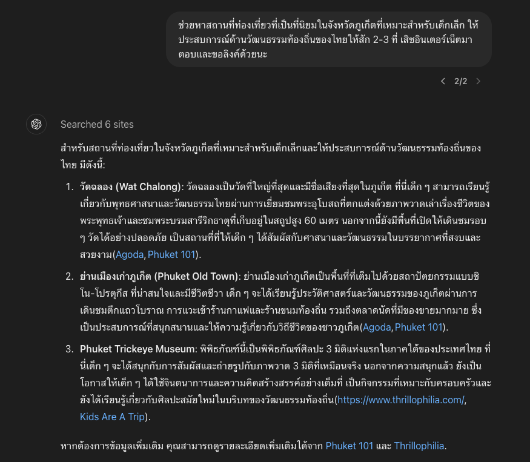
สำหรับประเด็น "แพ็คเกจทัวร์หรือกิจกรรมที่โรงแรมสามารถจัดให้สำหรับครอบครัว" และ "การท่องเที่ยวในพื้นที่ภูเก็ต" อยากจะตอบแบบนี้
- ทางโรงแรมไม่มีการจัดทัวร์ให้ แต่เรายินดีแนะนำที่ท่องเที่ยวที่เหมาะกับเด็กเล็กได้ เช่น
- Phuket Trickeye Museum: พิพิธภัณฑ์นี้เป็นพิพิธภัณฑ์ศิลปะ 3 มิติแห่งแรกในภาคใต้ของประเทศไทย ที่นี่เด็ก ๆ จะได้สนุกกับการสัมผัสและถ่ายรูปกับภาพวาด 3 มิติที่เหมือนจริง
- วัดฉลอง (Wat Chalong): วัดฉลองเป็นวัดที่ใหญ่ที่สุดและมีชื่อเสียงที่สุดในภูเก็ต ที่นี่เด็ก ๆ สามารถเรียนรู้เกี่ยวกับพุทธศาสนาและวัฒนธรรมไทยผ่านการเยี่ยมชมพระอุโบสถที่ตกแต่งด้วยภาพวาดเล่าเรื่องชีวิตของพระพุทธเจ้าและชมพระบรมสารีริกธาตุที่เก็บอยู่ในสถูปสูง 60 เมตร นอกจากนี้ยังมีพื้นที่เปิดให้เดินชมรอบ ๆ วัดได้อย่างปลอดภัย
- ย่านเมืองเก่าภูเก็ต (Phuket Old Town): ย่านเมืองเก่าภูเก็ตเป็นพื้นที่ที่เต็มไปด้วยสถาปัตยกรรมแบบชิโน-โปรตุกีส ที่น่าสนใจและมีชีวิตชีวา เด็ก ๆ จะได้เรียนรู้ประวัติศาสตร์และวัฒนธรรมของภูเก็ตผ่านการเดินชมตึกแถวโบราณ
ช่วยเขียนตอบลูกค้าเฉพาะประเด็นนี้ (เขียนให้กระชับ อ่านง่าย และน่าสนใจ ยังไม่ต้องใส่ข้อความหัวท้ายของอีเมล) เขียนเป็นภาษาอังกฤษที่แกรมม่าดีเลิศ อย่างกับเขียนโดยพนักงานโรงแรมห้าดาวที่ใช้ภาษาอังกฤษเก่งเหมือนเกิดเมืองนอก
ตัวอย่างคำตอบ
While we don't organize package tours directly, we'd be delighted to recommend some family-friendly attractions that offer both cultural experiences and entertainment for young children. Here are a few highlights:
- Phuket Trickeye Museum: As the first 3D art museum in Southern Thailand, it offers an interactive and fun experience for children, allowing them to touch and take photos with lifelike 3D paintings.
- Wat Chalong: Phuket's largest and most famous temple provides an excellent opportunity for children to learn about Thai Buddhism and culture. They can explore the beautifully decorated ubosot (ordination hall) with its paintings depicting Buddha's life, and view the sacred relics housed in the 60-meter-tall stupa. The temple grounds are safe and spacious for families to explore.
- Phuket Old Town: This charming area, rich in Sino-Portuguese architecture, offers a vibrant and educational experience. Children can discover Phuket's history and culture while strolling through streets lined with colorful, historic shophouses.
Our concierge team would be more than happy to assist you with detailed information, directions, and even arrange transportation to these attractions, ensuring a memorable and culturally enriching experience for your family.
🚀 เมื่อต้องพูดภาษาอังกฤษ ใช้เอไอช่วยเตรียมตัว¶
ฉันกำลังจะไปสัมภาษณ์งานตำแหน่ง Senior Software Developer ที่บริษัท Tech Innovators ซึ่งเป็นบริษัทซอฟต์แวร์ชั้นนำในกรุงเทพฯ ช่วยเตรียมคำตอบสำหรับคำถามสัมภาษณ์ที่อาจเจอ และให้คำแนะนำในการตอบคำถามเป็นภาษาอังกฤษอย่างมั่นใจ โดยคำนึงถึงประเด็นต่อไปนี้:
1. ประสบการณ์ 5 ปีของฉันในการพัฒนาแอปพลิเคชันมือถือทั้ง iOS และ Android
2. ความเชี่ยวชาญใน cloud technologies โดยเฉพาะ AWS และ Google Cloud
3. ผลงานสำคัญ เช่น การพัฒนาแอพที่มีผู้ใช้มากกว่า 1 ล้านคน
4. ความสนใจในโครงการ AI ของบริษัท Tech Innovators
5. ทักษะการทำงานเป็นทีมและการสื่อสาร
6. การจัดการกับความท้าทายในโปรเจ็กต์ที่ผ่านมา
7. วิสัยทัศน์ในการพัฒนาตนเองและเป้าหมายในอาชีพ
กรุณาให้ตัวอย่างคำถามที่อาจเจอในการสัมภาษณ์ พร้อมแนวทางการตอบที่ดี รวมถึงเทคนิคการใช้ภาษาอังกฤษในการสัมภาษณ์ให้ฟังดูเป็นมืออาชีพและน่าประทับใจ นอกจากนี้ ช่วยแนะนำคำถามที่ฉันควรถามบริษัทเกี่ยวกับตำแหน่งงานและวัฒนธรรมองค์กรด้วย"
ตัวอย่างคำตอบ
Here are some potential interview questions you might encounter for the Senior Software Developer role at Tech Innovators, along with example answers and tips for responding confidently in English:
1. Can you tell us about your experience in mobile app development?¶
Sample Answer: "I have over five years of experience developing mobile applications for both iOS and Android platforms. I’ve worked on various projects that required cross-platform development using technologies like Flutter and native SDKs. One of my most significant achievements was leading a team to develop an app that gained over 1 million users, where I managed both frontend and backend development, ensuring smooth user experience and scalability."
Tips: Highlight specific projects and results to demonstrate your impact. Be confident in mentioning numbers and successes.
2. What cloud technologies have you worked with, and how have you applied them in your projects?¶
Sample Answer: "I specialize in cloud technologies, particularly AWS and Google Cloud. I’ve implemented auto-scaling features, designed cost-efficient architectures, and worked extensively with services like Lambda, EC2, and Firebase. For instance, in my last project, I migrated our backend infrastructure to AWS, reducing downtime and improving system reliability by 30%."
Tips: Emphasize your technical knowledge of specific cloud platforms and how you’ve used them to solve problems.
3. Can you describe a challenging project you worked on and how you overcame the challenges?¶
Sample Answer: "In one project, we faced an unexpected issue with scalability after our user base grew rapidly. To address this, I worked closely with the team to refactor key parts of the codebase and optimize database queries. We also shifted some of the server-side load to AWS Lambda, which improved performance significantly and allowed the app to handle increased traffic without downtime."
Tips: Focus on your problem-solving process and teamwork in overcoming challenges.
4. Why are you interested in our AI projects at Tech Innovators?¶
Sample Answer: "I’m very excited about the AI work being done at Tech Innovators, especially the way you're integrating AI to improve user experiences in software solutions. I’ve always been interested in AI, and I’ve even contributed to a few AI-powered features in mobile apps, such as integrating machine learning models for personalized recommendations. I believe my skills in cloud and mobile development, combined with my interest in AI, would allow me to contribute meaningfully to your team."
Tips: Show enthusiasm and align your personal interests with the company's projects.
5. How do you handle working in a team, and how do you communicate effectively with other team members?¶
Sample Answer: "I believe clear communication and collaboration are key to a successful project. I make it a priority to understand the strengths of each team member and foster an environment where everyone feels comfortable sharing their ideas. I also ensure regular check-ins and use tools like Slack and Jira to keep everyone aligned. In one project, this approach helped us meet tight deadlines while maintaining high quality."
Tips: Showcase your teamwork and communication skills, mentioning specific tools or strategies.
6. Where do you see yourself in the next five years, and how do you plan to develop your skills?¶
Sample Answer: "In the next five years, I aim to continue growing both technically and as a leader. I’m particularly interested in deepening my knowledge of AI and cloud technologies, as well as taking on more responsibilities in leading cross-functional teams. I also want to stay updated with the latest advancements in software development, so I regularly participate in online courses and attend industry conferences."
Tips: Show ambition and a commitment to continuous learning.
7. Can you walk us through your approach to managing technical debt in a project?¶
Sample Answer: "Managing technical debt is crucial for long-term project success. I believe in addressing it incrementally by allocating time during each sprint to refactor and optimize code. This helps ensure we’re not sacrificing long-term maintainability for short-term gains. In one of my projects, we reduced technical debt by 40% within six months by following this approach."
Tips: Emphasize the balance between delivering features and maintaining clean, sustainable code.
Questions You Should Ask the Company:¶
- How does Tech Innovators foster collaboration between teams, especially for cross-functional projects?
- This shows your interest in teamwork and how departments collaborate.
- What is the company’s vision for integrating AI technologies into its software products over the next few years?
- Demonstrates your interest in their AI initiatives and long-term commitment.
- What are the biggest challenges your development team is currently facing?
- Asking about challenges shows that you’re thinking about how you can add value right away.
- How does the company support developers in pursuing continuous learning and skill development?
- Highlights your focus on professional growth and learning.
- Can you tell me more about the company culture and how the development team interacts with other departments like design or product management?
- Shows interest in understanding the workplace dynamics and culture.
Techniques for Confident English Communication:¶
- Practice active listening – Listen carefully to the questions and pause briefly before answering. This helps you avoid rushing your answers.
- Use structured answers – Follow a clear structure such as the STAR method (Situation, Task, Action, Result) when describing past experiences.
- Maintain eye contact and speak clearly – It helps to exude confidence and professionalism.
- Avoid filler words – Instead of saying "uhm" or "you know," pause briefly to gather your thoughts.
- Tailor your answers – Relate your experiences to how they align with the company's needs. Always end your answers by connecting back to how you can contribute to Tech Innovators.
By preparing in this structured way, you’ll be able to showcase your expertise, professionalism, and interest in the company. Good luck with your interview!
🚀 สรุปวิธีการเขียน prompt ที่ดี (Prompt Engineering 101)¶
การเป็นเจ้านายที่ดีให้กับเอไอ
- เป็นเจ้านายที่รู้ว่าตัวเองต้องการอะไร และต้องถามให้ตรงและชัดเจน
- เราต้องเข้าใจกระบวนการทำงานที่ถูกต้องก่อน แล้วสั่งเอไอตามกระบวนการ เช่น ขั้นตอนที่ 1 ของการตอบอีเมลคือต้องอ่านอีเมลให้เข้าใจก่อน แล้วจึงจะหาคำตอบทีละประเด็น ถ้าสั่งให้ AI ตอบไปเลย เขาอาจจะตอบไม่ถูกใจ
- เอไอไม่ได้มีข้อมูลทั้งหมดของเราอยู่ในหัว เราต้องบอกเขา เช่น ต้องบอกเขาก่อนว่าเรามีข้อดีอะไรบ้าง ก่อนจะให้เขาช่วยเรื่องการสัมภาษณ์งาน
- จะสั่งให้เอไอทำอะไร สุดท้ายคนที่สั่งจะต้องเป็นคนรับผิดชอบผลของงานที่เอไอตอบมา ถ้าตอบผิดพลาด หรือลูกค้าโกรธ คนที่เสียหายคือพนักงานและเจ้าของธุรกิจ ก่อนจะใช้สิ่งที่เอไอบอกมาส่งให้ลูกค้า พนักงานควรอ่านอย่างละเอียดก่อนเสมอ
เสริมความคิดสร้างสรรค์และทำคอนเทนท์การตลาดด้วย AI¶
👩🏻💼 สถานการณ์สมมติ¶
คุณเป็นผู้จัดการผลิตภัณฑ์ที่มีหน้าที่คิดแคมเปญทางการตลาด เช่น การคิดสโลแกนหรือแบรนดิ้งของผลิตภัณฑ์ คุณจะใช้ AI ช่วยให้สามารถคิดการใช้คำพูดเพื่อการตลาดได้เร็วขึ้นได้อย่างไร
🚀 คิดสโลแกน หรือ Copywriting¶
คิดสโลแกนสำหรับแคมเปญรณรงค์ลดการใช้พลาสติกแบบใช้ครั้งเดียวทิ้ง ที่เข้าถึงคนทุกวัย ตลกขบขัน แต่ยังสื่อสารความสำคัญของปัญหาสิ่งแวดล้อม
ตัวอย่างคำตอบจาก Claude
ได้ครับ นี่คือสโลแกนสำหรับแคมเปญรณรงค์ลดการใช้พลาสติกแบบใช้ครั้งเดียวทิ้ง ที่พยายามเข้าถึงคนทุกวัย มีความตลกขบขัน แต่ยังสื่อสารความสำคัญของปัญหาสิ่งแวดล้อม:
- "พลาสติกชั่วคราว ปัญหาถาวร: ใช้ทีเดียวจบ โลกจบด้วย!"
- "ถุงพลาสติก VS เต่าทะเล: คุณเลือกใคร? (เฮ้! อย่าเลือกถุงสิ!)"
- "เลิกพลาสติกวันนี้ ชาติหน้าไม่ต้องเกิดเป็นขยะ"
- "พลาสติกใช้ครั้งเดียว เหมือนความรักชั่วข้ามคืน: สนุกชั่วครู่ เสียใจยาวนาน"
- "ถุงผ้า: เพราะโลกไม่ใช่ถุงขยะใบใหญ่ของคุณ"
- "งดพลาสติก เริ่มที่คุณ: เพราะปลาในทะเลไม่ได้อยากกินสลัดถุงพลาสติก"
- "ลดพลาสติก เพิ่มอนาคต: เพราะลูกหลานอยากได้มรดกเป็นโลกสวย ไม่ใช่ภูเขาขยะ"
- "ถ้าพลาสติกคือความรัก ก็คงเป็นความรักที่ทำร้ายโลก: เลิกใช้ซะเถอะ!"
- "พลาสติกใช้ครั้งเดียว: อร่อยแป๊บเดียว ย่อยอีกห้าร้อยปี"
- "ขอโทษนะคะ/ครับ คุณทำถุงพลาสติกตกนะ... อ๊ะ! ไม่ใช่สิ คุณทำโลกตกต่างหาก!"
- "ใช้พลาสติกครั้งเดียว = จองที่ในหลุมฝังกลบให้ลูกหลาน"
- "ถุงพลาสติกฟรี ไม่ได้ฟรีจริงๆ นะ... โลกเราจ่ายแพงกว่าที่คิด"
- "พลาสติกใช้ครั้งเดียว: สะดวกสบายสำหรับคุณ ลำบากยาวนานสำหรับโลก"
- "เลิกพลาสติกวันนี้ ก่อนที่เราต้องว่ายน้ำในทะเลพลาสติก"
- "ถุงพลาสติกใบเดียว อาจทำให้เต่าทะเลต้องกินมื้อสุดท้าย: คิดให้ดีก่อนใช้!"
สโลแกนเหล่านี้พยายามใช้อารมณ์ขันและการเปรียบเทียบที่เข้าใจง่าย เพื่อสื่อสารความสำคัญของการลดใช้พลาสติกแบบใช้ครั้งเดียวทิ้ง โดยหวังว่าจะสามารถเข้าถึงและสร้างความตระหนักให้กับคนทุกวัยได้ครับ
ตัวอย่างคำตอบจาก ChatGPT
- "ใช้พลาสติกครั้งเดียว แต่ผลเสียค้างยาวนาน!"
- "บอกลาถุงพลาสติก ไม่ได้ยากเท่าบอกลาโลก!"
- "ถ้าโลกพูดได้ มันจะบอกให้เลิกพลาสติก!"
- "ลดพลาสติก แล้วโลกจะขอบคุณคุณ!"
- "อย่าให้ถุงพลาสติกอยู่ยาวกว่าชีวิตเรา!"
- "พลาสติกใช้ครั้งเดียว แต่ผลกระทบยาวเป็นพันปี!"
- "คิดดีๆ ก่อนจะทิ้ง ถุงพลาสติกกำลังจ้องคุณอยู่!"
- "พลาสติกเล็กน้อย ปัญหาใหญ่ไม่น้อย!"
- "ให้โลกยิ้มได้ ด้วยการเลิกใช้พลาสติก!"
- "พลาสติกไปง่าย แต่โลกต้องใช้เวลาเก็บ!"
- "อย่าปล่อยให้โลกถูก 'ถุง' จับตัว!"
- "เลิกใช้พลาสติกก่อนที่จะไม่มีที่ให้เดิน!"
- "พลาสติกฟรี แต่มลพิษต้องจ่าย!"
- "หิ้วถุงผ้าเท่กว่า ลดขยะได้มากกว่า!"
- "พลาสติกเล็กๆ แต่อย่าให้มันใหญ่โตในใจเรา!"
ตัวอย่างคำตอบจาก Gemini
15 สโลแกนฮาๆ เพื่อโลกสีเขียว ลดพลาสติกแบบใช้แล้วทิ้ง¶
สโลแกนที่เน้นความตลกขบขัน แต่สื่อสารปัญหาสิ่งแวดล้อม:
- "พลาสติกนี่นะ... เพื่อนแท้แค่แวบเดียว!" (เน้นว่าพลาสติกใช้ได้ไม่นาน แต่สร้างปัญหาได้นาน)
- "เลิกให้พลาสติกเป็นขยะในใจคุณ" (เล่นคำกับ "ขยะ" และ "ใจ")
- "อย่าให้พลาสติกกลายเป็นแฟนเก่า ที่เลิกแล้วลืมยาก" (เปรียบเทียบพลาสติกกับแฟนเก่าที่สร้างปัญหา)
- "พลาสติกน้อย โลกสวยใส เหมือนตอนอายุ 18" (เล่นกับความรู้สึกอยากกลับไปอายุ 18)
- "อย่าให้พลาสติกมาบังวิวทะเลสวยๆ" (เน้นปัญหาขยะพลาสติกในทะเล)
- "ลดพลาสติก สร้างโลกให้ปังกว่าไอจี" (เล่นกับเทรนด์โซเชียลมีเดีย)
- "พลาสติกไม่ใช่เพื่อนแท้ แต่ต้นไม้คือรักแท้" (เปรียบเทียบพลาสติกกับต้นไม้)
- "ถ้าพลาสติกมีใจ มันคงร้องไห้ ที่ถูกทิ้ง" (สร้างอารมณ์เห็นใจ)
- "พลาสติกน้อย โลกสวยใส เหมือนตอนได้เกรด 4" (เล่นกับความรู้สึกดีใจ)
- "อย่าให้พลาสติกมาทำลายวันหยุดสุดสัปดาห์" (เน้นผลกระทบต่อสิ่งแวดล้อม)
สโลแกนที่เน้นการกระทำ:¶
- "พกถุงผ้าไปช้อปปิ้ง เก๋ไก๋กว่าพลาสติกเยอะ"
- "หลอดสแตนเลสคือแฟชั่นใหม่ ที่ช่วยโลก"
- "ปฏิเสธพลาสติก แล้วชีวิตจะปัง"
- "ลดพลาสติกวันละนิด โลกนี้สดใส"
- "ไม่ใช้พลาสติก คือการลงทุนที่ดีที่สุด"
เคล็ดลับในการเลือกสโลแกน:¶
- เข้าใจกลุ่มเป้าหมาย: สโลแกนควรตรงกับกลุ่มคนที่ต้องการสื่อสารด้วย เช่น วัยรุ่น, ผู้ใหญ่ หรือครอบครัว
- สั้น กระชับ จับใจ: สโลแกนที่จำง่ายจะติดหูผู้คนได้ง่าย
- สร้างภาพจินตนาการ: สโลแกนที่ดีจะทำให้คนนึกภาพตามได้
- ใช้ภาษาที่เข้าใจง่าย: หลีกเลี่ยงคำที่ยากหรือศัพท์เฉพาะ
วิธีการนำสโลแกนไปใช้:¶
- ออกแบบภาพกราฟิก: สร้างภาพที่น่าสนใจและสอดคล้องกับสโลแกน
- เผยแพร่ผ่านช่องทางออนไลน์: โซเชียลมีเดีย, เว็บไซต์
- จัดกิจกรรม: เช่น การประกวดภาพ, การแข่งขันวาดภาพ
- ร่วมมือกับองค์กรต่างๆ: เพื่อขยายผลและสร้างความตระหนัก
หวังว่าสโลแกนเหล่านี้จะเป็นประโยชน์ในการรณรงค์ลดการใช้พลาสติกนะคะ!
หากต้องการให้ช่วยปรับปรุงหรือสร้างสโลแกนเพิ่มเติม สามารถบอกได้เลยค่ะ
เขียนสโลแกนภาษาไทยที่ฟังดู creative and catchy สำหรับแบรนด์แว่นตากันแดดที่มีความ eco-friendly
ตัวอย่างคำตอบจาก Claude
ต่อไปนี้เป็นสโลแกนภาษาไทยที่ฟังดูครีเอทีฟและจดจำง่ายสำหรับแบรนด์แว่นตากันแดดที่เป็นมิตรกับสิ่งแวดล้อม:
- "สายตาสดใส ธรรมชาติยั่งยืน"
- "มองโลกด้วยหัวใจเขียว"
- "แว่นตาเนรมิตร ชีวิตเนรมิตร"
- "ริเริ่มสีเขียว มองโลกสดใส"
- "ความชัดใสที่ยั่งยืน"
- "เก็บทุกรังสี ด้วยใจรักษ์โลก"
- "กันแสงแรง กอดธรรมชาติ"
- "แว่นตาเขียวขจี ชีวิตพิทักษ์โลก"
- "ส่องแสงสดใส ปกป้องธรรมชาติ"
- "สายตาคมชัด ใจรักษ์สิ่งแวดล้อม"
สโลแกนเหล่านี้พยายามสื่อถึงความเป็นมิตรกับสิ่งแวดล้อม ความยั่งยืน และการมองโลกในแง่บวก ควบคู่ไปกับการใช้คำที่มีความหมายเกี่ยวกับการมองเห็นและแว่นตา เพื่อให้เข้ากับแบรนด์แว่นตากันแดด
ตัวอย่างคำตอบจาก ChatGPT
- "ปกป้องสายตา พร้อมรักษ์โลกไปพร้อมกัน"
- "สบายตาใต้แสงแดด ด้วยแว่นตาเพื่อสิ่งแวดล้อม"
- "มองไกลได้ไกลกว่ากับแว่นตากันแดดรักษ์โลก"
- "แว่นตาที่ไม่ใช่แค่แฟชั่น แต่คือการใส่ใจโลก"
- "รักษ์โลกได้ เริ่มจากการสวมใส่"
- "ปกป้องดวงตาไปพร้อมกับปกป้องธรรมชาติ"
- "แว่นตาสไตล์ใหม่ ใส่ใจสิ่งแวดล้อม"
- "แฟชั่นแห่งอนาคตที่รักษ์โลก"
- "แว่นตาที่ให้คุณมองเห็นความสวยงามของโลก... และรักษามันไว้"
- "แว่นตาที่ให้คุณดูดี พร้อมดูแลโลกไปด้วย"
- "แสงแดดไม่ใช่ปัญหา... โลกก็เช่นกัน"
- "ใส่แว่นตาสไตล์ ใส่ใจสิ่งแวดล้อม"
- "มองชัด สวยเก๋ พร้อมช่วยโลก"
- "ความเก๋ที่มาพร้อมความรับผิดชอบ"
- "แว่นตากันแดดที่ไม่แค่ปกป้องดวงตา แต่ปกป้องโลกด้วย"
ตัวอย่างคำตอบจาก Gemini
สโลแกนภาษาไทยที่ฟังดู creative and catchy สำหรับแบรนด์แว่นตากันแดดที่มีความ eco-friendly:¶
- "ปกป้องดวงตา ปกป้องโลก" - เน้นการปกป้องทั้งดวงตาและสิ่งแวดล้อม
- "สไตล์รักษ์โลก สะท้อนความใส่ใจ" - เน้นสไตล์ที่รักษ์โลก สะท้อนความใส่ใจของผู้สวมใส่
- "แว่นกันแดดรักษ์โลก สดใสทุกสายตา" - เน้นความสดใสของผู้สวมใส่และความเป็นมิตรต่อสิ่งแวดล้อม
- "มองโลกสดใส ไร้กังวล มลพิษ" - เน้นความสดใสและปลอดภัยจากมลพิษ
- "สะท้อนความ chic ใส่ใจโลก" - เน้นความทันสมัยและใส่ใจสิ่งแวดล้อม
- "แว่นกันแดด eco-friendly เพื่ออนาคตที่ยั่งยืน" - เน้นความยั่งยืนของแบรนด์
- "สไตล์รักษ์โลก มองโลกสวยไปด้วยกัน" - เน้นการสร้างชุมชนผู้รักษ์โลก
- "แว่นกันแดด eco-friendly ของขวัญที่บอกรักโลก" - เน้นการมอบแว่นกันแดดเป็นของขวัญ
- "ปกป้องดวงตาจากแสงแดด ปกป้องโลกจากมลพิษ" - เน้นการปกป้องทั้งดวงตาและสิ่งแวดล้อม
- "แว่นกันแดด eco-friendly แฟชั่นที่โลกต้องการ" - เน้นความเป็นแฟชั่นที่โลกต้องการ
เพิ่มเติม:
- สามารถปรับแต่งสโลแกนเพิ่มเติมให้เหมาะกับกลุ่มเป้าหมายและภาพลักษณ์ของแบรนด์
- consider including the brand name in the slogan
- use strong verbs and vivid imagery
- keep the slogan concise and easy to remember
ตัวอย่าง:
- "[ชื่อแบรนด์] - แว่นกันแดด eco-friendly ปกป้องดวงตา ปกป้องโลก"
- "[ชื่อแบรนด์] - สไตล์รักษ์โลก สะท้อนความใส่ใจของคุณ"
- "[ชื่อแบรนด์] - มองโลกสดใส ไร้กังวล มลพิษ"
หวังว่าจะเป็นประโยชน์
ฉันจะทำแท่นวางโน้ตบุ๊คขาย ผลิตจากไม้ไผ่ที่ออกแบบให้ ระบายความร้อนดีเยี่ยม ตามหลักการยศาสตร์ ลดอาการปวดเมื่อยจากการทำงานนาน และผลิตจากไม้ไผ่ธรรมชาติ 100% ย่อยสลายได้ ไม่ทำลายสิ่งแวดล้อม
ช่วยคิดสโลแกนขายของดีๆ ปังๆ พังคู่แข่งกระจาย จับใจคนรุ่นใหม่ที่ใช้ชีวิตมีสไตล์
ตัวอย่างคำตอบจาก Claude
เยี่ยมครับ! ผมจะช่วยคิดสโลแกนที่โดนใจ ปังๆ สำหรับแท่นวางโน้ตบุ๊คไม้ไผ่ของคุณ โดยเน้นจุดขายหลักและพยายามจับใจคนรุ่นใหม่ที่ใช้ชีวิตมีสไตล์:
- "ไม้ไผ่เท่ห์ เย็นเวอร์ สะเทือนวงการ!"
- "Cool Bamboo: เย็นกาย เย็นใจ ไม่ร้อนโลก"
- "สุดจัด! ปลดล็อกท่านั่ง ปลดปล่อยไอเดีย"
- "Eco Swag: นั่งเท่ห์ เย็นสบาย ช่วยโลกไปในตัว"
- "ไม้ไผ่ Power: บูสต์งาน บูสต์สุขภาพ บูสต์โลก"
- "เนียนกว่านี้มีอีกไหม? ทำงาน ฟิตหุ่น รักษ์โลก ในชิ้นเดียว!"
- "สแกนนี่สิ! เย็นฉ่ำ หลังตรง โลกสวย"
- "Next Level Working: ยกระดับการทำงาน ยกระดับโลกของเรา"
- "Bamboo Revolution: พลิกโฉมการทำงาน พลิกฟื้นสิ่งแวดล้อม"
- "Chill & Skill: นั่งชิลล์ ทักษะพุ่ง งานปัง!"
- "Green Geek Chic: เก๋ไก๋สไตล์อีโค่ สำหรับเกีคที่แคร์โลก"
- "Work Hard, Sit Smart: ทำงานหนัก นั่งอย่างฉลาด"
- "Flex Your Ideas, Not Your Back: ยืดความคิด ไม่ต้องยืดหลัง"
- "Bamboo Boss: นั่งเท่ห์ เพิ่มเสน่ห์ให้งาน"
- "EcoFlow Workstation: ทำงานลื่นไหล โลกก็ไหลลื่น"
สโลแกนเหล่านี้พยายามสื่อถึงประโยชน์ของผลิตภัณฑ์ทั้งในแง่การใช้งาน ความเท่ห์ และการรักษาสิ่งแวดล้อม โดยใช้ภาษาที่ทันสมัย สนุก และน่าสนใจสำหรับคนรุ่นใหม่ที่ใส่ใจสุขภาพและสิ่งแวดล้อม คุณสามารถเลือกใช้หรือปรับแต่งให้เหมาะกับแบรนด์และกลุ่มเป้าหมายของคุณได้ครับ
บทเรียนและข้อสังเกต
- งานที่ต้องใช้ความคิดสร้างสรรค์มักจะเป็น bottleneck ในการทำการตลาด (บางครั้งคิดไม่ออกหรือใช้เวลานานกว่าจะคิดออก) เอไอเปรียบเสมือนเป็น idea generator ที่ให้ตัวเลือกเรามากมายภายในเวลาไม่กี่วินาที
- ในแบบฝึกหัดนี้เราเริ่มลองใช้ Claude ซึ่งเป็นเอไอที่เก่งภาษาไทย เข้าใจคนไทยที่สุดแล้วในตอนนี้ จะเห็นว่าไอเดียจาก Claude ก็มีความน่าสนใจ ใช้เป็นตัวเสริมจาก ChatGPT ได้
👩🏻💼 สถานการณ์สมมติ¶
คุณเป็นผู้จัดการการตลาดที่ต้องวางแผน social media content และคิดหาไอเดียใหม่ๆในการดึงความสนใจของผู้บริโภคมาที่แบรนด์สินค้าของคุณ AI จะช่วยเสริมความคิดสร้างสรรค์ของคุณได้อย่างไร?
🚀 วางแผนการตลาด¶
ทำคอนเทนท์อะไรดีล่ะ ให้เอไอช่วยวางแผนดีกว่า
ฉันเป็น CEO ของบริษัทสตาร์ทอัพที่ให้คำปรึกษาด้านการลงทุนสำหรับคนรุ่นใหม่ในกรุงเทพฯ เราต้องการทำ content marketing เพื่อดึงดูดกลุ่มเป้าหมายอายุ 25-40 ปี ที่เพิ่งเริ่มสนใจการลงทุนแต่ยังขาดความรู้และประสบการณ์
เธอเป็นผู้เชี่ยวชาญด้าน digital marketing ที่มีความคิดสร้างสรรค์ ฉันอยากให้เธอช่วยงานดังต่อไปนี้
1. หาไอเดียคอนเทนท์ที่น่าสนใจในอินเตอร์เน็ต โดยเฉพาะบน TikTok, Instagram และ YouTube ที่จะดึงดูดคนรุ่นใหม่ให้สนใจการลงทุน และนำเสนอความรู้ด้านการเงินและการลงทุนในรูปแบบที่เข้าใจง่าย สนุก และน่าติดตาม
2. ให้คำแนะนำหน่อยว่าจะใช้กลยุทธ์การตลาดอะไรบ้าง เช่น influencer marketing, podcast, webinar หรือ ต้องทำแอคชันอะไร พร้อมวิเคราะห์ทำเป็นตารางให้หน่อยว่า action ไหนน่าจะใช้เวลาน้อย แต่น่าจะมีผลลัพธ์ที่ดีที่สุดต่อธุรกิจของฉัน
3. ทำแผนคอนเทนท์จำนวน 12 สัปดาห์ให้หน่อย โดยเอาไอเดียของเธอจากข้อ 1 และข้อ 2 มาประกอบเป็นแผนการทำงานด้านมาร์เก็ตติ้ง โดยเน้นการสร้างคอนเทนต์ที่ให้ความรู้ สร้างความเชื่อมั่น และกระตุ้นให้คนรุ่นใหม่เห็นความสำคัญของการลงทุนและอยากใช้บริการของเรา
https://chatgpt.com/share/791ead36-c84a-4e80-9ad1-84c5e9f1d754
บทเรียนและข้อสังเกต
การเป็นเจ้านายที่ดี
คำสั่งเหล่านี้ถ้าสั่งพนักงานที่เป็นมนุษย์จะรู้สึกว่าจู้จี้จุกจิก เยอะเกินไป แต่ถ้าเป็น AI เขาชอบให้เราสั่งอย่างละเอียด ถ้าเราสั่งงานละเอียด บอกขั้นตอนให้เขาทำงาน เอไอก็จะทำงานออกมาได้ละเอียดเหมือนกับเราทำเอง
การสั่งให้เอไอทำตาราง
ตัวอย่างนี้จะเห็นว่าเราเริ่มสั่งให้เอไอสร้างตาราง ซึ่งเป็นการใช้งานในระดับที่สูงขึ้น แบบฝึกหัดต่อไปเราจะได้เห็นตัวอย่างการสร้างตารางจากเอไอเพิ่มเติม
🚀 เปิดโลกความคิดสร้างสรรค์¶
ช่วยคิดไอเดียทำคอนเทนท์ใน Tiktok ที่เกี่ยวกับการท่องเที่ยวในภูเก็ต ที่จะทำให้เกิดกระแสไวรัลและดึงดูดทั้งนักท่องเที่ยวไทยและต่างชาติ โดยต้องเชื่อมโยงกับวัฒนธรรมท้องถิ่นและความสวยงามของธรรมชาติในภูเก็ต ขอแบบตลกๆ ปังๆ ดังเปรี้ยงปร้างนะ
ตัวอย่างคำตอบจาก ChatGPT
นี่คือไอเดียการทำคอนเทนต์ใน TikTok ที่เชื่อมโยงกับวัฒนธรรมท้องถิ่นและความสวยงามของธรรมชาติในภูเก็ต ซึ่งสามารถสร้างกระแสไวรัลได้ทั้งในกลุ่มนักท่องเที่ยวไทยและต่างชาติ:
1. “ภูเก็ตแดนซ์กะลา”¶
ไอเดีย: ทำคลิปสั้นที่เริ่มจากการเต้นตลกๆ ด้วยอุปกรณ์พื้นบ้าน เช่น ใช้ "กะลา" มาทำเป็นพร็อพเต้นในสถานที่ที่มีวิวสวยๆ ของภูเก็ต เช่น หาดกะตะ หาดป่าตอง หรือจุดชมวิวต่างๆ แล้วจบด้วยการชวนให้คนมาเที่ยวเพื่อสัมผัสวัฒนธรรมและธรรมชาติที่งดงาม
ฮุก: ใส่เพลงพื้นเมืองภูเก็ตหรือเพลงลูกทุ่งที่มีกลิ่นอายใต้ๆ เพื่อให้เข้ากับบรรยากาศท้องถิ่น เพิ่มมุกตลกๆ ตอนเต้นเช่นการสะดุดกะลาแล้วล้มที่หาดทราย
แนวคิด: สื่อถึงการผสมผสานระหว่างความสนุกสนานแบบท้องถิ่นและความงดงามของภูเก็ต ที่ไม่ว่าใครก็ดูแล้วอยากมาลองเอง
2. “Challenge แซ่บใต้ ใครทำได้บ้าง?”¶
ไอเดีย: เชิญผู้ชมร่วมสนุกกับการกินอาหารใต้สุดแซ่บ เช่น “หมี่หุ้นแกงปู” หรือ “น้ำพริกกุ้งเสียบ” ที่ริมชายหาด แล้วท้าทายให้พวกเขาถ่ายคลิปรีแอคชั่นหลังจากกินอาหารเผ็ดๆ แล้วโพสต์ลง TikTok ด้วยแฮชแท็ก #PhuketSpiceChallenge
ฮุก: ใช้เสียงแปลกๆ หลังจากกินอาหารเผ็ด เช่น เสียง “เผ็ดจนร้องไห้” พร้อมภาพวิวทะเลสวยๆ เพื่อดึงดูดสายตา และปิดท้ายด้วยการเชิญชวนให้มาเที่ยวภูเก็ตเพื่อลองของแซ่บนี้
แนวคิด: การผสมผสานอาหารท้องถิ่นกับความสนุกสนานที่อาจเกิดขึ้นจากการกินอาหารใต้ เผ็ดแต่สนุก
ไอเดีย: จัดทำคลิปตามล่าหาสมบัติที่ซ่อนอยู่ในหมู่บ้านชาวเล โดยใช้แผนที่แบบตลกๆ ที่มีเบาะแสเป็นภาษาถิ่นหรือรหัสลับ ท้ายที่สุดพบสมบัติที่เป็นมุมถ่ายรูปสวยๆ หรือร้านอาหารลับๆ ในหมู่บ้านชาวเล ที่คนดูจะต้องตามไปดูด้วยตัวเอง
ฮุก: ให้มีปริศนาแต่ละช่วงในคลิปเพื่อดึงคนดูให้ติดตาม พร้อมใช้เพลงพื้นบ้านเพื่อเสริมบรรยากาศ และให้จบคลิปด้วยภาพวิวที่ตะลึงตาคนดู
แนวคิด: การสร้างปริศนาและการล่าขุมทรัพย์ทำให้ผู้ชมอยากติดตามคลิปต่อๆ ไป แถมยังส่งเสริมการท่องเที่ยวเชิงวัฒนธรรมและธรรมชาติของภูเก็ต
4. “เรือหางยาวลุยเล สุดฮา”¶
ไอเดีย: จัดทำคลิปตลกๆ ของการล่องเรือหางยาวเที่ยวเกาะต่างๆ รอบภูเก็ต โดยให้มีเหตุการณ์ฮาๆ เช่น การพายเรือไปชนหิน หรือโดนลมพัดหมวกปลิว แต่ทุกอย่างจะจบลงด้วยภาพวิวสวยๆ และบรรยากาศสุดชิลล์ของเกาะต่างๆ
ฮุก: เพิ่มเสียงหัวเราะ เสียงคลื่นและเสียงนก เพื่อสร้างบรรยากาศที่สนุกสนานและมีชีวิตชีวา
แนวคิด: ผสมผสานการล่องเรือที่เป็นเอกลักษณ์ของภูเก็ตกับเหตุการณ์ตลกๆ ที่เกิดขึ้นได้ เพื่อดึงดูดผู้ชมทั้งชาวไทยและต่างชาติ
5. “ประสบการณ์ลองใส่ชุดชาวเลวันเดียว”¶
ไอเดีย: ทำคลิปที่เล่าถึงประสบการณ์ของนักท่องเที่ยวที่ได้ลองใส่ชุดชาวเล และทำกิจกรรมแบบคนในชุมชน เช่น การทำปลาแห้ง การทอผ้า หรือการทำอาหารพื้นบ้านแบบดั้งเดิม แล้วปิดท้ายด้วยการเชิญชวนให้ผู้ชมมาเที่ยวภูเก็ตเพื่อสัมผัสวิถีชีวิตชาวเลอย่างแท้จริง
ฮุก: ใช้เพลงท้องถิ่นหรือเสียงดนตรีพื้นบ้านเพื่อสร้างบรรยากาศ และใส่มุกตลกๆ เกี่ยวกับการทำงานที่ผิดพลาดของนักท่องเที่ยว
แนวคิด: การเชื่อมโยงวัฒนธรรมท้องถิ่นกับความสนุกสนานในแบบที่เข้าถึงง่าย จะช่วยสร้างกระแสไวรัลได้ดี
6. “ภูเก็ตใน 24 ชั่วโมง: มันส์! ฮา! และสวยงาม!”¶
ไอเดีย: ทำคลิปที่รวบรวมกิจกรรมต่างๆ ที่สามารถทำได้ในภูเก็ตภายใน 24 ชั่วโมง โดยเน้นมุมตลกๆ และวิวสวยๆ สลับกันไป เช่น ตื่นมาตอนเช้าไปตลาด กินอาหารพื้นเมือง เที่ยวชายหาด แล้วจบวันด้วยปาร์ตี้บนเรือหางยาว
ฮุก: ใส่เสียงบรรยายที่สนุกสนานและมีอารมณ์ขัน พร้อมใส่เสียงดนตรีที่เข้ากับกิจกรรมแต่ละช่วง
แนวคิด: คลิปที่มีความหลากหลายของกิจกรรมและอารมณ์ จะช่วยให้คนดูรู้สึกว่าภูเก็ตเป็นสถานที่ที่ไม่ควรพลาด
คอนเทนต์เหล่านี้จะช่วยสร้างกระแสไวรัลได้ โดยเน้นการผสมผสานวัฒนธรรมท้องถิ่นและความสวยงามของภูเก็ตเข้ากับความตลกขบขันและสนุกสนานที่เป็นเอกลักษณ์ของ TikTok
ตัวอย่างคำตอบจาก Claude
เข้าใจครับ! ผมจะเสนอไอเดียคอนเทนท์ TikTok แนวตลก ปัง และไวรัล ที่เกี่ยวกับการท่องเที่ยวในภูเก็ต ดังนี้:
- "ภูเก็ต Expectation vs Reality"
- สร้างคลิปสั้นๆ เปรียบเทียบภาพในโฆษณากับความเป็นจริง แต่ทำให้ตลกและเกินจริง
- เช่น โฆษณาหาดทรายขาว vs คนแน่นเต็มหาด แต่ทำให้ดูเวอร์ๆ โดยใช้เทคนิค green screen
- "ภูเก็ต Tongue Twister Challenge"
- สร้างประโยคภาษาถิ่นภูเก็ตที่ออกเสียงยาก แล้วให้คนพยายามพูดเร็วๆ
- เช่น "หมูฮ้องหอมหวนชวนชิม ลิ้มลองโอ้เอ๋วเหนียวนุ่ม งุ้มง่ามงามตามถนนถลาง"
- "ภูเก็ต Landmark Parkour"
- ทำท่าทางตลกๆ เหมือนกำลังกระโดดข้ามจากแลนด์มาร์คหนึ่งไปอีกที่หนึ่งในภูเก็ต
- ใช้เทคนิคตัดต่อให้ดูเหมือนกระโดดจากเขารังไปยังวัดฉลอง แล้วไปหาดป่าตอง
- "ภูเก็ต Food Roulette"
- สร้างวงล้อดิจิทัลที่มีชื่ออาหารท้องถิ่นภูเก็ต
- หมุนวงล้อและต้องกินอาหารที่ได้ แสดงปฏิกิริยาตลกๆ
- "ภูเก็ต Time Warp"
- แต่งตัวย้อนยุคแบบชาวภูเก็ตในอดีต แล้วทำท่าทางทันสมัยในสถานที่ประวัติศาสตร์
- เช่น แต่งชุดโบราณแล้วเต้น shuffle dance ที่ตึกชิโนโปรตุกีส
- "ภูเก็ต Beach Workout Fail"
- พยายามออกกำลังกายบนชายหาด แต่เกิดเหตุการณ์ตลกๆ
- เช่น ทำท่าโยคะแล้วถูกคลื่นซัด หรือวิ่งแล้วสะดุดกองทราย
- "ภูเก็ต Accent Challenge"
- ให้คนต่างถิ่นพยายามพูดสำเนียงภูเก็ต หรือคนภูเก็ตพูดภาษาอื่นๆ
- แสดงความพยายามและความล้มเหลวอย่างฮาๆ
- "ภูเก็ต Green Screen Magic"
- ใช้เทคนิค green screen ทำให้เหมือนอยู่ในสถานที่ท่องเที่ยวภูเก็ต แต่ทำกิจกรรมแปลกๆ
- เช่น "นั่งชิงช้า" บนยอดเขารัง หรือ "ว่ายน้ำ" บนถนนถลาง
- "ภูเก็ต Street Food Speed Run"
- พยายามกินอาหารข้างทางภูเก็ตให้ได้มากที่สุดในเวลาจำกัด
- แสดงปฏิกิริยาตลกๆ ระหว่างกินและหลังกิน
- "ภูเก็ต Tourist Transformation"
- แสดงการเปลี่ยนแปลงของนักท่องเที่ยวตั้งแต่มาถึงจนกลับ
- เช่น จากหน้าขาวๆ เป็นแทนสุดๆ หรือจากผอมเป็นอ้วนเพราะกินอาหารอร่อย
ทุกไอเดียนี้สามารถใช้เพลงประกอบที่กำลังเป็นที่นิยมหรือเพลงท้องถิ่นภูเก็ตที่ remix ให้ทันสมัย เพื่อเพิ่มความน่าสนใจและโอกาสในการไวรัลครับ
ช่วยคิดไอเดียทำคอนเทนต์ใน TikTok สำหรับร้านขายคอมพิวเตอร์และอุปกรณ์ไอทีขนาดใหญ่ในกรุงเทพฯ ที่จะสร้างกระแสไวรัลและดึงดูดทั้งลูกค้าทั่วไปและมืออาชีพ โดยต้องนำเสนอเทคโนโลยีล่าสุดในรูปแบบที่เข้าใจง่ายและน่าสนใจ ขอแบบตลกๆ ปังๆ ที่ทำให้คนอยากแชร์ต่อ
ตัวอย่างคำตอบจาก Claude
นี่คือไอเดียคอนเทนต์ TikTok สำหรับร้านคอมพิวเตอร์และอุปกรณ์ไอทีของคุณ:
- "อัพเกรดชีวิต vs อัพเกรดคอม" - เปรียบเทียบการอัพเกรดชีวิตกับการอัพเกรดคอมพิวเตอร์แบบฮาๆ เช่น "เปลี่ยนแฟน vs เปลี่ยน CPU"
- "ชาเลนจ์พิมพ์เร็ว" - จัดการแข่งขันพิมพ์เร็วระหว่างพนักงานร้านกับลูกค้า ใช้คีย์บอร์ดรุ่นใหม่ล่าสุด
- "เกมทายราคา" - ให้ผู้ชมทายราคาอุปกรณ์ไอทีสุดล้ำ ผู้ชนะได้ส่วนลดพิเศษ
- "Computer Cosplay" - แต่งตัวเป็นอุปกรณ์คอมพิวเตอร์ต่างๆ แล้วเต้นประกอบเพลงฮิต
- "ไอทีเซียนพาเที่ยวร้าน" - พาชมร้านในมุมมองแปลกๆ เช่น มุมมอง CPU หรือ กล้องวงจรปิด
- "ปริศนาไอที" - สร้างปริศนาเกี่ยวกับเทคโนโลยีใหม่ๆ ให้ผู้ชมทาย
- "สอนผู้ใหญ่ใช้เทคโนโลยี" - วิดีโอตลกๆ สอนผู้ใหญ่ใช้เทคโนโลยีล่าสุด
- "เปรียบเทียบสเปคกับชีวิตจริง" - เช่น "RAM 64GB vs จำวันเกิดแฟนไม่ได้"
- "ไอทีเซียนชิมอาหาร" - รีวิวอาหารโดยใช้คำศัพท์ไอที เช่น "ข้าวผัดนี้ FPS สูงมาก!"
- "เต้น CPU Dance" - สร้างท่าเต้นที่เลียนแบบการทำงานของ CPU
เหล่านี้เป็นไอเดียที่สนุก น่าสนใจ และมีโอกาสไวรัลสูง ซึ่งจะช่วยดึงดูดทั้งลูกค้าทั่วไปและมืออาชีพ พร้อมทั้งนำเสนอเทคโนโลยีใหม่ๆ ในรูปแบบที่เข้าใจง่ายและน่าติดตาม
🚀 เขียนคอนเทนท์ตามใจคนอ่านสำหรับเว็บไซท์¶
เขียนรายละเอียดคอนโดหรูใจกลางเมืองกรุงเทพสำหรับเว็บไซต์ขายอสังหาริมทรัพย์
- ชื่อโครงการ: The Monument Thong Lo
- ที่ตั้งโครงการ: ซอยทองหล่อ เขตวัฒนา ย่านที่ขึ้นชื่อเรื่องร้านกาแฟ บาร์ และร้านอาหารสุดเก๋ แหล่งช้อปปิ้งและสถานบันเทิงระดับหรู
- รายละเอียดโครงการ: คอนโดสูง 45 ชั้น จำนวน 127 ยูนิต มีขนาดตั้งแต่ 1 ถึง 4 ห้องนอน
- พื้นที่ใช้สอย: 124.25 – 662 ตร.ม.
- สิ่งอำนวยความสะดวก: ล็อบบี้ลิฟต์ส่วนตัว ระบบบ้านอัตโนมัติอัจฉริยะ Smart home และหน้าต่างสูงจากพื้นจรดเพดาน
โดยเน้นจุดขายเรื่องทำเลที่ตั้ง การออกแบบที่ทันสมัย สิ่งอำนวยความสะดวกภายในโครงการ และความเหมาะสมสำหรับการลงทุน ใช้ภาษาที่ดึงดูดทั้งผู้ซื้อเพื่ออยู่อาศัยและนักลงทุน ความยาวประมาณ 300 คำ
สร้างรายละเอียดแพ็กเกจทัวร์ดำน้ำเกาะรอบกระบี่สำหรับลงในเว็บไซต์ท่องเที่ยว โดยเน้นกลุ่มเป้าหมายเป็นนักท่องเที่ยวที่รักการผจญภัยและชื่นชอบธรรมชาติ ระบุไฮไลท์ของทริป กิจกรรมที่จะได้ทำ และสิ่งที่รวมในแพ็กเกจ ความยาวประมาณ 250 คำ
คุณเป็นผู้เชี่ยวชาญด้านการตลาดสำหรับโรงแรม เขียนคำอธิบายห้องพักสำหรับเว็บไซต์ Airbnb โดยเป็นวิลล่าริมหาดในภูเก็ต ที่เน้นความเป็นส่วนตัว เหมาะสำหรับกลุ่มเพื่อนที่มาเที่ยวด้วยกัน เน้นบรรยากาศสนุกสนาน สิ่งอำนวยความสะดวกที่เหมาะกับปาร์ตี้ และทำเลที่ตั้งใกล้แหล่งบันเทิงยามค่ำคืน ความยาวประมาณ 200 คำ โดยใช้ภาษาที่ดึงดูดนักท่องเที่ยวเป็นกลุ่มใหญ่
🚀 สรุปวิธีการเขียน prompt ที่ดี (Prompt Engineering 101)¶
การเป็นเจ้านายที่ดีให้กับเอไอ
- อยากได้อะไร อธิบายให้ชัดเจน เช่นอยากให้เขียนคำอธิบาย จะเอาขนาดยาวกี่คำ เขียนให้ใครอ่าน อยากให้คนอ่านรู้สึกอย่างไร จะเอาผลลัพธ์ไปทำอะไรต่อ ยิ่งชัด เอไอยิ่งทำงานให้เราได้ดีขึ้น
- เขียนสั่ง AI แบบเล็งผลเลิศ หาคำที่อธิบาย "คุณภาพของงาน" ในระดับสูง เช่น "ขอไอเดียที่ตลกมากๆจนคนต้องแชร์ต่อ" จะได้ผลมากกว่า "ขอไอเดียตลกๆ"
Using Generative AI to create high-quality social media post¶
ในแบบฝึกหัดนี้เราจะลองสวมบทบาทเป็นเจ้าหน้าที่ฝ่ายการตลาดที่ได้รับมอบหมายจากหัวหน้าให้เขียนโพสต์เฟสบุ๊กเกี่ยวกับผลกระทบของมลพิษ PM2.5 ต่อสุขภาพคนไทยโดยต้องมีข้อมูลจากงานวิจัยคุณภาพสูงสนับสนุน
Prompting AI the lazy way¶
หลายคนมักจะเริ่มต้นการใช้ AI ด้วยการเขียน prompt แบบง่ายๆ และคาดหวังว่าจะได้รับผลลัพธ์ที่ดี แต่กลับต้องผิดหวัง ทำให้หลายคนเข้าใจผิดว่า AI ยังไม่ค่อยฉลาดหรือไม่มีประโยชน์
โปรดเขียนโพสต์สั้นๆสำหรับเฟสบุ๊กเกี่ยวกับผลกระทบของมลพิษ PM2.5 ต่อสุขภาพของประชาชนในประเทศไทย โดยใช้ข้อมูลจากงานวิจัยที่น่าเชื่อถือเป็นพื้นฐาน
ตัวอย่างผลลัพธ์จาก Copilot¶

prompt สั้นๆง่ายๆ มักจะให้ผลลัพธ์ที่ไม่ค่อยดี เพราะเอไอไม่ค่อยเข้าใจว่าเราต้องการอะไร และไม่มีแหล่งข้อมูลให้อ้างอิงด้วย จึงมีอาการ hallucinate
เรามาลองดูวิธีการใช้ AI ที่ถูกต้องกัน อาจจะเห็นประโยชน์ของมันชัดเจนขึ้น
ตัวอย่างผลลัพธ์จาก ChatGPT (18 Apr 2025)

Information Gathering¶
เราต้องคิดก่อนว่าในฐานะเจ้าหน้าที่การตลาด ถ้าเราจะเป็นคนทำงานนี้ด้วยตัวเองและอยากได้ผลลัพธ์คุณภาพสูง เราจะเริ่มอย่างไร ก่อนอื่นเราคงต้องหาข้อมูลที่น่าเชื่อถือก่อนใช่หรือไม่
เราอาจจะเริ่มต้นด้วยการหาข้อมูลและงานวิจัยที่น่าเชื่อถือมาประกอบการเขียนโพสต์ โดยจะใช้คำสั่งต่อไปนี้ในการขอข้อมูลจาก Copilot
Try this prompt
ฉันต้องการเขียนเฟสบุคโพสท์คุณภาพสูงที่มีงานวิจัยรองรับเกี่ยวกับ ปัญหามลพิษ PM2.5 ในประเทศไทย โพสท์นี้เป็นโพสท์สั้นๆที่อธิบายถึงผลกระทบของ PM2.5 ต่อสุขภาพของประชาชน ช่วยหาลิงค์ข้อมูลที่ละเอียดเกี่ยวกับปัญหามลพิษ PM2.5 ในประเทศไทย โปรดให้ข้อมูลจากแหล่งที่มาที่น่าเชื่อถือ เช่น รายงานจากองค์กรของรัฐบาล บทความวิชาการ หรือข้อมูลจากองค์กรระหว่างประเทศ ข้อมูลควรครอบคลุมผลกระทบต่อสุขภาพของประชาชนจากการสัมผัสมลพิษ PM2.5 ทั้งในระยะสั้นและระยะยาว โปรดเน้นลิงค์ที่มีงานวิจัยที่น่าเชื่อถือระดับนานาชาติ
ผลลัพธ์¶

ผลลัพธ์จาก AI ดูดีขึ้นมากๆเลย
งานวิจัยที่ Copilot หามาได้ค่อนข้างหน้าเชื่อถือทีเดียว ลิงค์แรกเป็นบทความจากสถาบันวิจัยจุฬาภรณ์ ลิงค์ที่สองเป็นบทความจากอาจารย์คณะเภสัชศาสตร์ มหาวิทยาลัยสยาม
หลังจากที่เปิดบทความและลองไล่ดูคร่าวๆ คิดว่าบทความที่ 2 มีข้อมูลที่ค่อนข้างแน่นและน่าเชื่อถือ จึงน่าจะเป็นข้อมูลที่เราใช้ในการอ้างอิงได้ เราดาวน์โหลดบทความลงมาใช้อ้างอิง
📄 PM2.5 ผลกระทบและกลไกการเกิดพิษ.pdf
ไฟล์ PDF นี้นำเอาบทความต้นฉบับมาตัดหน้าที่ไม่จำเป็นออกเพื่อให้สามารถใช้กับ Claude Free Version ได้
Information Extraction¶
ในบทบาทเจ้าหน้าที่การตลาดเราก็น่าจะอยากอ่านบทความนี้เพื่อดึงเอาข้อเท็จจริงมาเขียนโพสท์ แต่เราก็ขี้เกียจอ่านเอง จึงจะขอให้เอไอช่วยสรุปเฉพาะข้อเท็จจริงจากบทความมาให้เราตรวจก่อน
สำหรับคนที่ใช้ AI หลายๆตัวประกอบกันในการทำงานจะเข้าใจว่า AI แต่ละตัวมีความสามารถต่างกัน อย่างงานการดึงข้อมูลจาก PDF เรารู้ว่า Claude เก่งที่สุด เราจะให้ Claude ทำงานนี้ (และให้เขาจบงานนี้ให้เราเลยจริงๆแล้ว)
Try this prompt
ช่วยดึงเอาข้อเท็จจริงมาจากบทความนี้หน่อย อยากได้ข้อเท็จจริงที่เน้นย้ำว่า PM2.5 อันตรายต่อสุขภาพแค่ไหน และอาจจะทำเกิดอาการหรือโรคภัยอะไรกับคนเราได้บ้าง ลิสต์ข้อเท็จจริงทั้งหมดมาและช่วย quote ข้อความในบทความหน่อยว่าแต่ละข้อเท็จจริงมาจากส่วนไหนของบทความนี้ โปรดเขียนให้เข้าใจง่ายๆ คนทั่วไปก็เข้าใจได้ ถ้าใช้คำศัพท์ทางการแพทย์ก็ช่วยวงเล็บอธิบายหน่อยว่าหมายถึงอะไร
Response I got from Claude
จากบทความนี้ ข้อเท็จจริงที่แสดงให้เห็นว่า PM2.5 เป็นอันตรายต่อสุขภาพและอาจทำให้เกิดโรคภัยต่างๆ มีดังนี้
-
PM2.5 ส่งผลให้สมรรถภาพปอดลดลง จากข้อความว่า "ผลการศึกษาพบว่า PM2.5 ในอากาศมีค่าเฉลี่ย 1.81 ถึง 39.84 ไมโครกรัมต่อลูกบาศก์เมตร (ค่ามัธยฐาน=10.7 ไมโครกรัมต่อลูกบาศก์เมตร) และมีผลลดปริมาตรอากาศที่จุอยู่ในปอด (forced vital capacity) และปริมาตรของอากาศที่เป่าออกอย่างเร็วและแรงในวินาทีที่ 1 (forced expiratory volume in one second)"
-
PM2.5 ทำให้เกิดอาการหอบหืด โดยข้อความระบุว่า "พบว่า PM2.5 กระตุ้นอาการหายใจมีเสียงหวีด (wheezing)"
-
PM2.5 ส่งผลให้เกิดโรคปอดอุดกั้นเรื้อรัง จากข้อความว่า "พบว่ามีความชุกของโรคปอดอุดกั้นเรื้อรังในกลุ่มที่อาศัยในพื้นที่ที่มี PM2.5 สูงมากกว่ากลุ่มที่อาศัยในพื้นที่ที่มี PM2.5 ต่ำอย่างมีนัยสำคัญ"
-
PM2.5 เพิ่มความเสี่ยงติดเชื้อในระบบทางเดินหายใจส่วนล่าง จากข้อความว่า "PM2.5 ที่ความหนาแน่นเกิน 100 ไมโครกรัมต่อลูกบาศก์เมตรมีผลเพิ่มอุบัติการณ์การติดเชื้อในทางเดินหายใจส่วนล่างในเด็กอายุ 0-11 ปี"
-
PM2.5 เพิ่มความเสี่ยงเป็นโรคหลอดเลือดหัวใจ จากข้อความว่า "ปริมาณของ PM2.5 ที่เพิ่มขึ้น 10 ไมโครกรัมต่อลูกบาศก์เมตรที่ระดับความหนาแน่นมากกว่า 25 ไมโครกรัมต่อลูกบาศก์เมตรจะเพิ่มการเกิดภาวะหัวใจขาดเลือดแบบเฉียบพลัน"
-
PM2.5 เพิ่มความเสี่ยงเป็นโรคความดันโลหิตสูง จากข้อความว่า "เมื่อทำการวิเคราะห์ adjusted hazard ratio ของอุบัติการณ์ในการเกิดโรคความดันโลหิตสูงต่อปริมาณ PM2.5 ที่เพิ่มขึ้นทุกๆ 10 ไมโครกรัมต่อลูกบาศก์เมตรในอากาศมีค่าเท่ากับ 1.13"
-
PM2.5 ส่งผลให้เกิดภาวะหลอดเลือดแข็งตัว (atherosclerosis) จากข้อความว่า "PM2.5 ทำให้ brachial artery flow-mediated dilation หรือ FMD ซึ่งเป็นตัวบ่งชี้การทำงานของเยื่อบุผนังหลอดเลือด (endothelial function) ลดลง ซึ่งสัมพันธ์กับการเกิดโรคหลอดเลือดแดงแข็ง"
-
PM2.5 เพิ่มความเสี่ยงเป็นลิ่มเลือดอุดตัน จากข้อความว่า "PM2.5 ที่มีความหนาแน่นเพิ่มขึ้น 10 ไมโครกรัมต่อลูกบาศก์เมตรเป็นเวลาเฉลี่ย 1 เดือนมีผลเพิ่มอุบัติการณ์ในการเกิดลิ่มเลือดอุดตันในปอด"
-
PM2.5 ส่งผลให้เกิดโรคทางสมองและระบบประสาทส่วนกลาง เช่น โรคหลอดเลือดสมอง ภาวะสมองเสื่อม กลุ่มอาการออทิสติก และโรคพาร์กินสัน
-
PM2.5 เพิ่มความเสี่ยงเป็นเบาหวานชนิดที่ 2 จากข้อความว่า "PM2.5 เพิ่มความเสี่ยงในการเกิดเบาหวานชนิดที่ 2 อย่างมีนัยสำคัญทางสถิติ โดยจะเพิ่มความเสี่ยง 1.25 เท่าเมื่อความหนาแน่นของ PM2.5 เพิ่มขึ้น 10 ไมโครกรัมต่อลูกบาศก์เมตร"
-
PM2.5 เพิ่มความเสี่ยงเป็นมะเร็งปอด จากข้อความว่า "การได้รับ PM2.5 ผ่านทางการหายใจเป็นระยะเวลานานมีความสัมพันธ์กับการเกิดมะเร็งปอดโดยตรง"
สรุปคือ PM2.5 เป็นอันตรายต่อสุขภาพหลายระบบในร่างกาย โดยเฉพาะระบบทางเดินหายใจ ระบบหัวใจและหลอดเลือด รวมถึงสมองและระบบประสาท และยังเพิ่มความเสี่ยงในการเกิดโรค
จะเห็นว่า Claude สรุปข้อเท็จจริงมาได้ค่อนข้างดีเลย เพื่อความชัวร์ควรกลับไปเช็ค PDF ว่าข้อเท็จจริงเหล่านี้ปรากฎตามที่ Claude อ้างอิงมาหรือไม่ ถ้าตรวจแล้วถูกต้อง เราก็สามารถนำข้อมูลนี้ไปใช้ในขั้นต่อไปได้
Write post from facts¶
จากนั้นเราจะนำข้อเท็จจริงที่ AI สรุปมาใช้ในการเขียนโพสท์
Try this prompt
โปรดใช้ข้อมูลและข้อเท็จจริงต่อไปนี้ในการเขียนโพสต์สำหรับเฟสบุ๊กขนาดประมาณ 150 คำ โดยใช้หัวข้อประมาณว่า "PM2.5 อันตรายกว่าที่คิด" โพสท์นี้ควรเขียนด้วยภาษาที่คนทั่วไปเข้าใจง่าย พยายามใส่รายละเอียดเท่าที่จะใส่ได้ใน 150 คำ โดยมีโทนของความห่วงใยต่อสุขภาพของผู้อ่าน และแชร์ข้อมูลแบบปรารถนาดีว่าให้ระวังตัวกันด้วย และหาวิธีป้องกันอย่าให้ PM2.5 ทำร้ายเราและคนที่เรารัก อย่าลืมอ้างอิงและขอบคุณผู้วิจัยสั้นๆ ใช้ภาษาที่ฟังดูน่ารัก เป็นกันเอง อบอุ่นแต่น่าเชื่อถือ แทนตัวเองว่าผมและเรียกผู้อ่านว่าลูกค้า เชิญชวนให้อ่านงานวิจัยต่อในลิงค์ (ฉันจะแนบลิงค์ต่อท้ายโพสท์)
---
ต่อไปนี้เป็นข้อเท็จจริงที่สรุปมาจากบทความเรื่อง PM2.5 ผลกระทบต่อสุขภาพและกลไกการเกิดพิษ โดยดร.ภก.วงศกร สุเชาว์อินทร์ คณะเภสัชศาสตร์ มหาวิทยาลัยสยาม
1. PM2.5 ส่งผลให้สมรรถภาพปอดลดลง จากข้อความว่า "ผลการศึกษาพบว่า PM2.5 ในอากาศมีค่าเฉลี่ย 1.81 ถึง 39.84 ไมโครกรัมต่อลูกบาศก์เมตร (ค่ามัธยฐาน=10.7 ไมโครกรัมต่อลูกบาศก์เมตร) และมีผลลดปริมาตรอากาศที่จุอยู่ในปอด (forced vital capacity) และปริมาตรของอากาศที่เป่าออกอย่างเร็วและแรงในวินาทีที่ 1 (forced expiratory volume in one second)"
2. PM2.5 ทำให้เกิดอาการหอบหืด โดยข้อความระบุว่า "พบว่า PM2.5 กระตุ้นอาการหายใจมีเสียงหวีด (wheezing)"
3. PM2.5 ส่งผลให้เกิดโรคปอดอุดกั้นเรื้อรัง จากข้อความว่า "พบว่ามีความชุกของโรคปอดอุดกั้นเรื้อรังในกลุ่มที่อาศัยในพื้นที่ที่มี PM2.5 สูงมากกว่ากลุ่มที่อาศัยในพื้นที่ที่มี PM2.5 ต่ำอย่างมีนัยสำคัญ"
4. PM2.5 เพิ่มความเสี่ยงติดเชื้อในระบบทางเดินหายใจส่วนล่าง จากข้อความว่า "PM2.5 ที่ความหนาแน่นเกิน 100 ไมโครกรัมต่อลูกบาศก์เมตรมีผลเพิ่มอุบัติการณ์การติดเชื้อในทางเดินหายใจส่วนล่างในเด็กอายุ 0-11 ปี"
5. PM2.5 เพิ่มความเสี่ยงเป็นโรคหลอดเลือดหัวใจ จากข้อความว่า "ปริมาณของ PM2.5 ที่เพิ่มขึ้น 10 ไมโครกรัมต่อลูกบาศก์เมตรที่ระดับความหนาแน่นมากกว่า 25 ไมโครกรัมต่อลูกบาศก์เมตรจะเพิ่มการเกิดภาวะหัวใจขาดเลือดแบบเฉียบพลัน"
6. PM2.5 เพิ่มความเสี่ยงเป็นโรคความดันโลหิตสูง จากข้อความว่า "เมื่อทำการวิเคราะห์ adjusted hazard ratio ของอุบัติการณ์ในการเกิดโรคความดันโลหิตสูงต่อปริมาณ PM2.5 ที่เพิ่มขึ้นทุกๆ 10 ไมโครกรัมต่อลูกบาศก์เมตรในอากาศมีค่าเท่ากับ 1.13"
7. PM2.5 ส่งผลให้เกิดภาวะหลอดเลือดแข็งตัว (atherosclerosis) จากข้อความว่า "PM2.5 ทำให้ brachial artery flow-mediated dilation หรือ FMD ซึ่งเป็นตัวบ่งชี้การทำงานของเยื่อบุผนังหลอดเลือด (endothelial function) ลดลง ซึ่งสัมพันธ์กับการเกิดโรคหลอดเลือดแดงแข็ง"
8. PM2.5 เพิ่มความเสี่ยงเป็นลิ่มเลือดอุดตัน จากข้อความว่า "PM2.5 ที่มีความหนาแน่นเพิ่มขึ้น 10 ไมโครกรัมต่อลูกบาศก์เมตรเป็นเวลาเฉลี่ย 1 เดือนมีผลเพิ่มอุบัติการณ์ในการเกิดลิ่มเลือดอุดตันในปอด"
9. PM2.5 ส่งผลให้เกิดโรคทางสมองและระบบประสาทส่วนกลาง เช่น โรคหลอดเลือดสมอง ภาวะสมองเสื่อม กลุ่มอาการออทิสติก และโรคพาร์กินสัน
10. PM2.5 เพิ่มความเสี่ยงเป็นเบาหวานชนิดที่ 2 จากข้อความว่า "PM2.5 เพิ่มความเสี่ยงในการเกิดเบาหวานชนิดที่ 2 อย่างมีนัยสำคัญทางสถิติ โดยจะเพิ่มความเสี่ยง 1.25 เท่าเมื่อความหนาแน่นของ PM2.5 เพิ่มขึ้น 10 ไมโครกรัมต่อลูกบาศก์เมตร"
11. PM2.5 เพิ่มความเสี่ยงเป็นมะเร็งปอด จากข้อความว่า "การได้รับ PM2.5 ผ่านทางการหายใจเป็นระยะเวลานานมีความสัมพันธ์กับการเกิดมะเร็งปอดโดยตรง"
ผลลัพธ์¶

Claude สามารถเขียนโพสท์ที่มีคุณภาพกว่าโพสท์ที่เราได้จาก Copilot ตอนแรกเยอะเลยเพราะมีข้อมูลที่ดี
Response I got from Copilot (compose mode)
สวัสดีครับลูกค้าที่น่ารักทุกท่าน! วันนี้ผมมีเรื่องสำคัญที่อยากจะแชร์ให้ทุกคนได้รู้กันครับ เรื่องของ PM2.5 ที่อาจจะอันตรายกว่าที่เราคิดกันอยู่นะครับ จากการศึกษาของดร.ภก.วงศกร สุเชาว์อินทร์ พบว่า PM2.5 สามารถทำให้ปอดของเราทำงานได้ไม่เต็มที่ ทำให้เกิดอาการหอบหืด และแม้แต่โรคปอดอุดกั้นเรื้อรังก็เกิดขึ้นได้ครับ นอกจากนี้ยังเพิ่มความเสี่ยงต่อการติดเชื้อในทางเดินหายใจ โรคหลอดเลือดหัวใจ และความดันโลหิตสูงอีกด้วยครับ ดังนั้น อย่าลืมดูแลตัวเองและคนที่เรารักให้ห่างไกลจาก PM2.5 นะครับ และถ้าอยากรู้เพิ่มเติม อย่าลืมติดตามอ่านงานวิจัยของดร.ภก.วงศกร ด้วยนะครับ ขอบคุณครับ! 😊🍃

จะเห็นได้ว่าโพสท์ที่เขียนโดยเอไออาจจะไม่ได้ดีเลิศที่สุด แต่ถ้าต้องเสิชหาบทความเอง อ่านบทความเอง สรุปเอง เขียนเองก็น่าจะเหนื่อยกว่าใช้ AI มากๆ ถ้าเราเป็น Content Marketer ที่มีฝีมือ AI ก็เป็นเสมือนผู้ช่วยที่จะทำดราฟท์ออกมาให้เราคร่าวๆก่อน แล้วเราจะแต่งเติม ใส่บุคลิกของแบรนด์ลงไปเพิ่มก็น่าจะไม่ยาก
ประสิทธิภาพด้านภาษาไทยของ GPT-4o¶

ตัวอย่างการเขียนเสียดสี

Gen AI for Every Day Tasks
Meeting Toolkit ด้วย NotebookLM¶
ประชุมจบแล้ว แต่งานยังไม่จบ ต้องสรุป action items ส่งทีม ต้องเขียน minutes ให้นาย ต้องรายงานความคืบหน้าให้ผู้บริหาร — แต่ recording ยาว 1 ชั่วโมง และมีอีก 5 การประชุมที่ยังรอสรุปอยู่
NotebookLM เป็นเครื่องมือฟรีจาก Google ที่ออกแบบมาเพื่อสิ่งนี้โดยเฉพาะ — อัปโหลด recording แล้วถามคำถามได้เลย เหมือนมีผู้ช่วยที่ "ฟังการประชุมทุกครั้งมาแล้ว" และจำทุกอย่างได้
หน้านี้จะสอนวิธีใช้ให้ถูกต้อง ตั้งแต่การถอดเสียง ไปจนถึงการรวมหลายประชุมเป็น deliverable เดียวที่ส่งผู้บริหารได้
ก่อนเริ่ม: ทำความเข้าใจว่า NotebookLM ทำงานยังไง¶
NotebookLM ไม่ใช่ ChatGPT — มันไม่ตอบจากความรู้ทั่วไป แต่ตอบจาก "sources" ที่คุณอัปโหลดเข้าไปเท่านั้น ซึ่งหมายความว่า:
- ถ้าไม่ได้อัปโหลด recording → มันไม่รู้
- ถ้า recording เสียงไม่ชัด → มันอาจเติมเองจากที่น่าจะถูก (hallucinate)
- ถ้า prompt ไม่ดี → มันสรุปแบบ "เดา" แทนที่จะ "อ้าง"
ทักษะสำคัญในการใช้ NotebookLM คือการ prompt ให้มันรู้ว่า "ห้ามเดา ถ้าไม่รู้ให้บอก"
👩🏻💼 แบบฝึกหัดที่ 1: ถอดเสียงให้แม่น — ป้องกัน hallucination ตั้งแต่ต้น¶
สถานการณ์: คุณอัปโหลด recording การประชุมทีมขึ้น NotebookLM และอยากได้ transcript หรือสรุปที่แม่นยำ ไม่มีการเติมแต่งจาก AI
ขั้นตอน¶
- เข้า NotebookLM → สร้าง New Notebook
- กด + Add source → Upload → เลือกไฟล์ audio (รองรับ .mp3 .mp4 .wav .m4a) หาก recording การประชุมอยู่ในรูปแบบวิดีโอ แนะนำให้แปลงเป็น audio ก่อนเพื่อให้ขนาดไฟล์เล็กและจัดการได้ง่าย (ใช้ QuickTime Player for Mac หรือ VLC Player for Window)
- รอให้ process เสร็จ (ไฟล์ 1 ชั่วโมงใช้เวลาประมาณ 2–3 นาที)
- ก่อนถามอะไร ให้บอก context ของการประชุมก่อนเสมอ
🚀 Step 1 — บอก context ก่อนเริ่ม¶
วาง prompt นี้เป็นคำถามแรกใน chat:
การประชุมนี้คือ การประชุมหารือข้อราชการสำนักงานคณะกรรมการส่งเสริมการศึกษาเอกชน ผ่านสื่ออิเล็กทรอนิกส์ (Zoom Cloud Meeting) ครั้งที่ 1/2566 วันที่ 12 พ.ค. 2566 เวลา 09.30 - 12.00 น. สํานักงานคณะกรรมการส่งเสริมการศึกษาเอกชน OPEC
โปรดรับทราบข้อมูลนี้ก่อนตอบคำถามต่อไป
🚀 Step 2 — ขอ transcript แบบที่ป้องกัน hallucination¶
ช่วยถอดเสียงการประชุมนี้ให้ครบถ้วนที่สุด โดยมีกฎดังนี้:
1. ใช้คำพูดจากการประชุมโดยตรง อย่าสรุปหรือตีความแทน
2. ถ้าได้ยินไม่ชัด ให้เขียน [ไม่ชัดเจน] แทน อย่าเดา
3. ถ้าไม่แน่ใจว่าใครพูด ให้เขียน [ไม่ระบุผู้พูด] แทนการ assign ชื่อ
4. ถ้ามีคำศัพท์เฉพาะทางที่ไม่แน่ใจ ให้ถอดตามเสียงและใส่ [?] ต่อท้าย
ตอบภาษาไทย เรียงตามลำดับเวลา
ตัวอย่างผลลัพธ์¶

🚀 Step 3 — ขอให้ AI แก้ไข transcript ให้อ่านได้¶
บางครั้ง transcript ที่ได้จาก Step 2 จะมีปัญหา คำแต่ละคำถูกเว้นวรรคแยกออกจากกัน เช่น:
ของ สช. เอง ค่ะ ท่าน ผู้ บริหาร ของ เรา นะ คะ รวม ไป ถึง...
แทนที่จะเป็น:
ของ สช. เองค่ะ ท่านผู้บริหารของเรานะคะ รวมไปถึง...
ใช้ prompt นี้ให้ AI ทำความสะอาด transcript ก่อนนำไปใช้งานต่อ:
transcript ด้านบนมีปัญหา — คำแต่ละคำถูกเว้นวรรคแยกออกจากกันจนอ่านลำบาก
ช่วยแก้ไขโดยมีกฎดังนี้:
1. รวมคำในประโยคเดียวกันให้ติดกันตามธรรมชาติของภาษาไทย เช่น "ท่าน ผู้ บริหาร" → "ท่านผู้บริหาร"
2. ตัดคำที่ไม่มีความหมาย เช่น เอ่อ อ่า ออกจาก transcript ห้ามตัดคำที่อาจจะสื่อความหมายออก
2. คงโครงสร้างประโยคและลำดับเวลาเดิมไว้ทุกอย่าง — ห้ามตัด เพิ่ม หรือสรุปเนื้อหา
3. คง tag เดิมไว้ทุกตัว เช่น [ไม่ระบุผู้พูด] [ไม่ชัดเจน] [?]
4. แบ่งย่อหน้าตามผู้พูดหรือหัวข้อที่เปลี่ยน เพื่อให้อ่านง่ายขึ้น
ผลลัพธ์คือ transcript ฉบับเดิมทุกอย่าง แต่อ่านออกได้ตามปกติ
แนะนำให้กด "Save to Note" เพื่อจะได้มี transcript ไว้เอาไปใช้ต่อ
ตัวอย่างผลลัพธ์¶

👩🏻💼 แบบฝึกหัดที่ 2: สรุปประชุมตาม format ขององค์กรคุณ¶
สถานการณ์: แต่ละองค์กรมี format การเขียน meeting minutes ต่างกัน — บางที่ต้องการแบบทางการมาก บางที่เน้น action items สั้นๆ บางที่ต้องมีลายมือชื่อผู้อนุมัติ NotebookLM สามารถสรุปตาม template ที่คุณกำหนดได้
🚀 วิธีที่ 1 — ให้ template แล้วให้ fill in¶
คัดลอก format ด้านล่าง แก้ให้ตรงกับ format ขององค์กรคุณ แล้วส่งให้ NotebookLM:
ช่วยสรุปการประชุมตาม format นี้:
---
**รายงานการประชุม**
วันที่: [ใส่วันที่จากการประชุม]
สถานที่/ช่องทาง: [ใส่จากการประชุม]
ผู้เข้าร่วม: [รายชื่อทุกคนที่พูดในการประชุม]
ผู้บันทึก: [ไม่ระบุ]
**ระเบียบวาระ**
[รายการหัวข้อที่คุยกัน]
**สรุปการพิจารณาและมติ**
[สรุปแต่ละวาระ — ใช้คำพูดจากการประชุม ไม่เพิ่มความคิดเห็นเอง]
**Action Items**
| ผู้รับผิดชอบ | งาน | Deadline |
|---|---|---|
| | | |
**เรื่องที่ยังไม่ได้ตัดสินใจ / ต้องติดตาม**
[รายการ]
**การประชุมครั้งต่อไป**
วันที่: [ถ้าระบุในการประชุม]
---
กฎ: ห้ามเพิ่มข้อมูลนอกเหนือจากที่พูดในการประชุม ถ้าไม่มีข้อมูลในส่วนใด ให้เขียน "ไม่ได้ระบุในการประชุม"
ตัวอย่างผลลัพธ์¶

สถานการณ์: คุณดูแลโปรเจกต์ที่ต้องประชุมทุกสัปดาห์ มี recording สะสมอยู่แล้ว 4 ครั้ง และจะมีอีกเรื่อยๆ คุณอยากให้ AI จำทุกอย่างที่คุยกันมาตลอด และสามารถถามข้ามการประชุมได้
วิธีตั้งค่า Notebook แบบ Project¶
- ตั้งชื่อ Notebook ให้ชัดเจน เช่น "โปรเจกต์ Digital HR System — 2568"
- อัปโหลด recording ทีละไฟล์ โดย ตั้งชื่อ source ให้ระบุครั้งและวันที่ เช่น:
ประชุมครั้งที่ 1 — 2 พ.ค. — Kick-offประชุมครั้งที่ 2 — 9 พ.ค. — Requirementsประชุมครั้งที่ 3 — 16 พ.ค. — Design Review
- เมื่อมีการประชุมใหม่ → เพิ่ม source ใหม่เข้า Notebook เดิม ไม่ต้องสร้างใหม่
ด้วยวิธีนี้ Notebook หนึ่งอันจะเป็น "ห้องเก็บความทรงจำ" ของโปรเจกต์ทั้งหมด
🚀 ถามแบบข้ามหลายการประชุม¶
จากทุกการประชุมที่ผ่านมา ช่วยสรุป:
1. เรื่องอะไรบ้างที่ตัดสินใจแล้วและ action ไปแล้ว?
2. เรื่องอะไรบ้างที่ยังค้างอยู่ หรือถูก defer ออกไป?
3. มี commitment อะไรที่ถูกพูดถึงซ้ำหลายครั้งแต่ยังไม่ได้รับการ assign?
ระบุว่าข้อมูลแต่ละอย่างมาจากการประชุมครั้งที่เท่าไหร่ (อ้างชื่อ source)
สรุป: NotebookLM เป็น "memory" ของโปรเจกต์คุณ¶
หลักการใช้ให้ถูกต้อง
- หนึ่ง Notebook = หนึ่งโปรเจกต์ อย่าผสมหลายโปรเจกต์ใน Notebook เดียว
- ตั้งชื่อ source ให้ชัด ถ้าชื่อ source คลุมเครือ การอ้างอิงจะผิด
- บอก context ก่อน แนะนำผู้เข้าร่วมประชุมก่อนถามคำแรก
- ใส่กฎ "ห้ามเดา" — โดยเฉพาะ prompt ที่เกี่ยวกับ action items และ deadline
สิ่งที่ไม่ควรทำ
- อัปโหลดประชุมที่มีข้อมูล confidential สูง เช่น ข้อมูลลูกค้า, M&A, หรือเรื่องบุคคล — ไฟล์ทั้งหมดอยู่บน Google server
- เชื่อสิ่งที่ AI สรุปโดยไม่ตรวจ — AI จับได้มาก แต่ไม่ครบ โดยเฉพาะงานที่ตกลงกันแบบ "อ้อ แล้วก็..." ตอนท้ายประชุม
- ไม่ให้ context ที่เพียงพอ — ถ้าไม่บอกว่าใครคือใคร การ attribute คำพูดจะผิดและอาจเกิดความผิดพลาด เช่น ทำให้ action items assign ผิดคน
Presentation Toolkit — จาก content สู่สไลด์ด้วย AI¶
ปัญหาที่เกิดขึ้นบ่อยที่สุดตอนทำสไลด์: เปิด PowerPoint หรือเครื่องมือ AI ก่อน แล้วค่อยคิดว่าจะพูดอะไร — ผลที่ได้คือสไลด์ที่ดูดีแต่เนื้อหาไม่แน่น หรือเนื้อหาแน่นแต่ยัดใส่สไลด์เกินไป
วิธีที่ถูกต้อง: คิดเนื้อหาก่อน ออกแบบทีหลัง
หน้านี้จะสอน 2 ขั้นตอน โดยใช้สถานการณ์จริง: การทำสไลด์โน้มน้าวทีม SOLA มหาวิทยาลัย KMUTT ให้รับโปรแกรม AI competency สำหรับอาจารย์และบุคลากร
- ใช้ ChatGPT หรือ Claude กลั่นเนื้อหา ให้อยู่ในรูปแบบที่พร้อมทำสไลด์
- ป้อนผลลัพธ์เข้า Gemini Canvas พร้อม prompt ที่ควบคุม brand และ layout
แบบฝึกหัดที่ 1: กลั่นเนื้อหาด้วย ChatGPT หรือ Claude¶
สถานการณ์: คุณเพิ่งประชุมกับทีม SOLA ที่ KMUTT และต้องทำสไลด์โน้มน้าวให้พวกเขาอนุมัติโปรแกรม AI competency สำหรับอาจารย์ คุณมีข้อมูลอยู่ 3 แบบ — เลือก กรณีที่ตรงกับตัวคุณ
ขั้นตอนนี้ยังไม่ต้องเปิด Gemini Canvas เลย ทำใน ChatGPT หรือ Claude ก่อน
กรณีที่ 1 — มีแค่ notes คร่าวๆ จากการประชุม¶
ลองทำ¶
ฉันต้องทำ presentation เรื่อง: ข้อเสนอโปรแกรม AI Competency สำหรับอาจารย์และบุคลากร SOLA มหาวิทยาลัย KMUTT
ผู้ฟัง: คณะผู้บริหาร SOLA ที่ต้องตัดสินใจอนุมัติโปรแกรม — มีทั้งคนที่สนับสนุน AI และคนที่ยังไม่แน่ใจ
เป้าหมาย: ให้ผู้บริหาร SOLA อนุมัติ pilot program 1 ภาคเรียนกับอาจารย์ 20 คน
จำนวนสไลด์: ไม่เกิน 6 สไลด์
เวลานำเสนอ: 15 นาที
ข้อมูลที่ฉันมี:
- อาจารย์ส่วนใหญ่ใช้ AI แบบลองผิดลองถูก ไม่มีทิศทาง
- นักศึกษา Gen Z ใช้ AI อยู่แล้ว อาจารย์ตามไม่ทัน
- UNESCO มี AI Competency Framework สำหรับครูอาจารย์ปี 2024
- เสนอ pilot 20 คน workshop 2 วัน + module 4 สัปดาห์
- ต้นทุนประมาณ 60,000–80,000 บาท
- SOLA เป็นหน่วยงานที่เหมาะที่สุดใน KMUTT ที่จะนำเรื่องนี้
ช่วยทำ slide outline ที่:
- แต่ละสไลด์มี: ชื่อสไลด์ (title), key message 1 ประโยค, bullet ไม่เกิน 3 ข้อ
- เรียงเรื่องให้ไหลตามโครงสร้าง: ทำไม (context) → อะไร (content) → แล้วยังไง (call to action)
- ภาษาไทย กระชับ
ตัวอย่างผลลัพธ์ที่ได้
Slide 1 — KMUTT และ AI: เราอยู่ตรงไหน? Key message: นักศึกษา Gen Z ใช้ AI เป็นงานประจำอยู่แล้ว — อาจารย์ต้องนำหน้าหรืออย่างน้อยก็ทันเกมส์ - นักศึกษาใช้ AI ในการเรียน วิจัย และงานกลุ่มทุกวัน - อาจารย์ส่วนใหญ่ยังใช้แบบลองผิดลองถูก ไม่มี framework - ช่องว่างนี้กำลังกว้างขึ้นทุกภาคเรียน
Slide 2 — AI Competency คืออะไร (ไม่ใช่แค่ใช้ ChatGPT เป็น) Key message: AI competency คือรู้จักเลือกใช้ ตั้งคำถาม และรับผิดชอบผลลัพธ์ - 3 ระดับ: Awareness (รู้จัก) → Application (ใช้ได้) → Integration (ฝังในการสอน) - อ้างอิง UNESCO AI Competency Framework for Teachers 2024 - SOLA มีภารกิจด้านการเรียนรู้ที่ตรงกับเนื้อหานี้มากที่สุดใน KMUTT
Slide 3 — ทำไม SOLA ต้องนำ ไม่ใช่รอ Key message: มหาวิทยาลัยที่รอให้ทุกคนพร้อมก่อนจึงค่อยเริ่ม จะไม่มีวันเริ่ม - NUS และ KAIST มีโปรแกรม AI upskilling สำหรับอาจารย์แล้วตั้งแต่ปี 2023 - SOLA ในฐานะหน่วยงานด้านการเรียนรู้คือ natural owner ของเรื่องนี้ - การเริ่มเร็วกว่าคือข้อได้เปรียบ ไม่ใช่ความเสี่ยง
Slide 4 — สิ่งที่เสนอ: Pilot Program 1 ภาคเรียน Key message: เริ่มเล็ก วัดผล แล้วขยาย — ไม่ได้ขอ commit ทั้งมหาวิทยาลัยตั้งแต่วันแรก - กลุ่ม pilot: อาจารย์และบุคลากร 20 คน คัดเลือกจากหลายคณะ - รูปแบบ: Workshop เข้มข้น 2 วัน + self-paced module 4 สัปดาห์ - วัดผลด้วย pre/post AI competency assessment
Slide 5 — ต้นทุนและสิ่งที่คาดหวัง Key message: ลงทุน 60,000–80,000 บาท เพื่อให้ได้ framework และบุคลากรนำร่องที่พร้อม scale - ค่าใช้จ่าย: ~60,000–80,000 บาท รวม content, facilitator, และ assessment - ผลลัพธ์ที่วัดได้: อาจารย์ 20 คนผ่าน competency threshold + blueprint สำหรับการขยายต่อ - ระยะเวลา: 1 ภาคเรียน เริ่มได้ทันทีถ้าอนุมัติภายในเดือนนี้
Slide 6 — ขอ Approve อะไร Key message: ต้องการ 2 อย่าง: อนุมัติงบ และ assign ผู้ประสานงาน 1 คน - อนุมัติงบ pilot และกำหนดกลุ่มอาจารย์ภายใน 2 สัปดาห์ - SOLA assign coordinator — ทีม Indigo Lab รับผิดชอบ content ทั้งหมด - นัด kickoff ภายในสิ้นเดือน
ป้อนผลลัพธ์เข้า Gemini Canvas¶
Gemini Canvas คือฟีเจอร์ใน Gemini ที่สร้างสไลด์ในหน้าเดียวกัน แล้ว export เป็น Google Slides ได้โดยตรง ฟรี และไม่ต้องสมัครเพิ่ม
ข้อดีหลัก: สร้างเร็ว export เข้า Google Slides ได้เลย แก้ไขต่อใน Google Slides ได้ทันที

ทำยังไงให้ presentation ที่เราทำดูเป็นแบรนด์ของบริษัท?¶
เราสามารถบอกให้ Gemini Canvas ใช้ brand spec ของบริษัทได้แค่ใส่ prompt เพิ่มนิดหน่อย
ตัวอย่าง brand style prompt¶
Color palette: Primary Yellow #FFC72C and Orange #FA4616 as accent and highlight colors. Use Blue-Grey #7B8189 for supporting text and dividers. Please only use Solid White for backgrounds. Never use more than 5 colors in a single infographic.
Typography: Bold, modern sans-serif for headlines and content. Content might be in Thai mixed with English. Use IBM Plex Sans for English, and IBM Plex Sans Thai for Thai. Never mix in additional typeface.
ออกมาสวยเลย
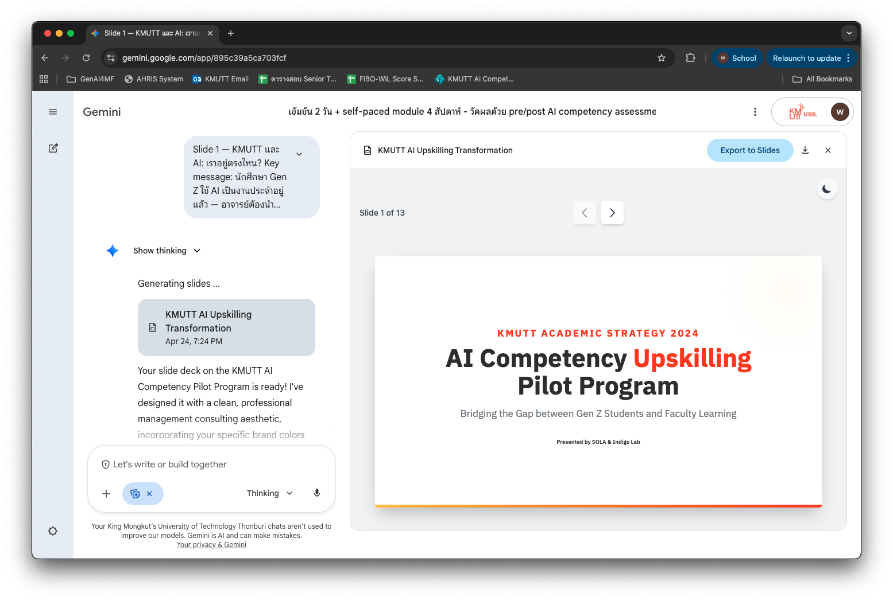
ใช้ Claude ก็ได้นะ เดี๋ยวนี้ทำ Powerpoint เก่งขึ้นมากๆ¶
น้องโชว์เหนือโดยการทำให้เลย ไม่ต้องขอ (ใช้แค่พร้อมท์แรก พร้อมท์เดียว)
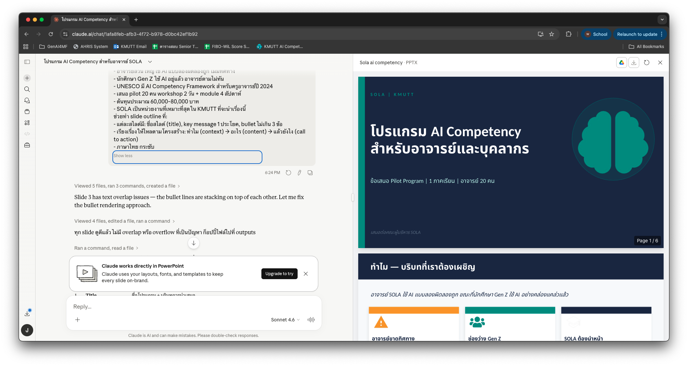
กรณีที่ 2 — มีเอกสารหรือ framework ที่ยาว¶
ตัวอย่าง: คุณมี AI competency framework for teachers (50+ หน้า) อ่านแล้วไม่ค่อยเข้าใจว่าเขาเขียนอะไร แต่ต้องรีบเอาไปทำสไลด์พรีเซนต์อย่างด่วน
NotebookLM เก่งเรื่องนี้ และเก่งแบบป๋าๆ ตังไม่เก็บนะ แจกฟรีไปเลยจ้าาา
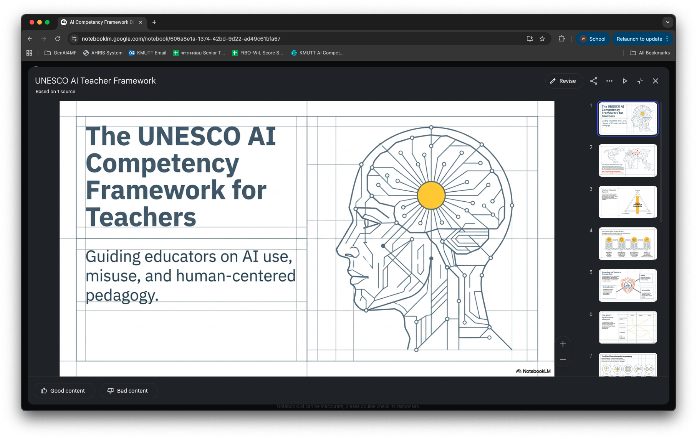
มีข้อเสียอย่างเดียวคือมัน generate เป็นภาพ การจะแก้ไขก็ค่อนข้างลำบาก (ทำได้แต่ลำบากนิดนึง) แต่บางครั้งเราไม่รู้จะเล่าเรื่องอย่างไรเลยด้วยซ้ำ ให้ notebooklm ช่วยปั่นออกมา ก็ถือว่าโอเคทีเดียว
ทำยังไงให้ presentation ที่เราทำดูเป็นแบรนด์ของบริษัท มาดูวิธีเลย¶
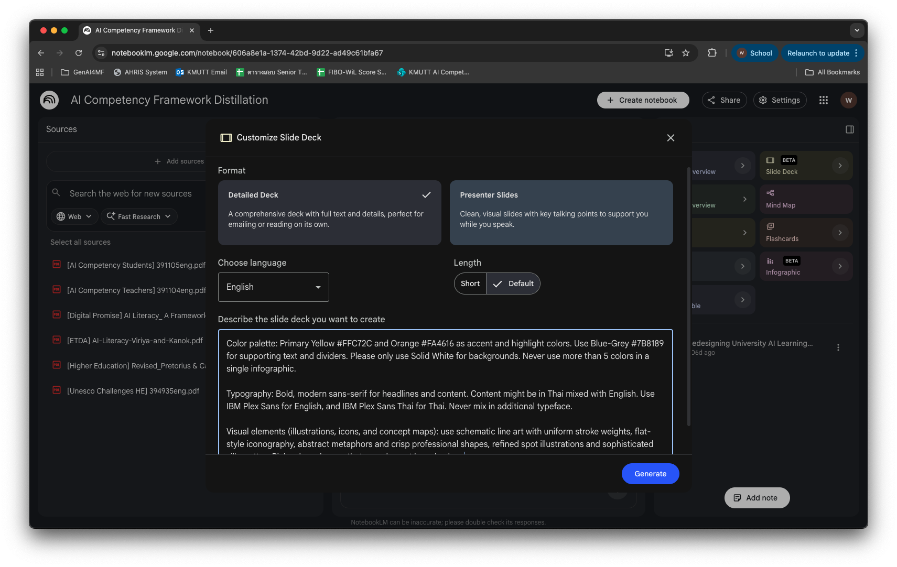
กรณีที่ 3 — ต้องหาข้อมูลจากอินเทอร์เน็ตก่อน¶
ตัวอย่าง: คุณรู้ว่าอยากโน้มน้าว SOLA ด้วยตัวเลขและหลักฐาน แต่ยังไม่มีข้อมูลในมือ — ต้องหาก่อน
ใช้ ChatGPT (เปิด Browse) หรือ Perplexity AI ซึ่งค้นอินเทอร์เน็ตได้และอ้างอิง source ให้
Step 1 — ให้ AI ค้นข้อมูลและรวบรวม evidence¶
ฉันกำลังทำ presentation โน้มน้าวทีมบริหาร SOLA มหาวิทยาลัย KMUTT ให้อนุมัติโปรแกรม AI competency สำหรับอาจารย์และบุคลากร
ช่วยค้นหาและรวบรวมข้อมูลต่อไปนี้:
1. มหาวิทยาลัยชั้นนำในเอเชียหรือระดับโลกที่มีโปรแกรม AI upskilling สำหรับอาจารย์โดยเฉพาะ — มีตัวอย่างอะไรบ้าง และทำอะไร?
2. มี framework หรือ guideline ระดับนานาชาติเกี่ยวกับ AI competency สำหรับอาจารย์ที่อ้างอิงได้ (เช่น UNESCO, EU, ISTE)?
3. มีสถิติเกี่ยวกับ employer demand for AI skills ในตลาดแรงงาน Southeast Asia หรือไทย?
4. ถ้ามีมหาวิทยาลัยไทยที่เริ่มทำเรื่องนี้แล้ว มีตัวอย่างไหมบ้าง?
สำหรับแต่ละข้อ ระบุ source และปีของข้อมูลด้วย
ตัวอย่างผลลัพธ์จาก Perplexity
1. มหาวิทยาลัยที่มีโปรแกรม AI สำหรับอาจารย์ - NUS (สิงคโปร์): มีโปรแกรม AI Literacy for Educators ตั้งแต่ปี 2023 บังคับสำหรับอาจารย์ใหม่ทุกคน (source: NUS Centre for Future-Ready Graduates, 2023) - KAIST (เกาหลีใต้): เปิด AI Faculty Development Program ให้อาจารย์ทุกสาขา ไม่ใช่แค่ CS (source: KAIST AI Graduate School, 2024) - Tsinghua (จีน): integrate AI tools เข้า faculty training ทุกภาควิชา (source: Tsinghua AI Education Report, 2023)
2. Framework ระดับนานาชาติ - UNESCO AI Competency Framework for Teachers (2024): แบ่งเป็น 3 ระดับ — Acquire, Deepen, Create — ครอบคลุมทั้งทักษะใช้งาน การสอน และจริยธรรม - EU AI Literacy Framework (2023): เน้น AI understanding + critical use สำหรับบุคลากรการศึกษา
3. Employer demand ใน Southeast Asia - LinkedIn Emerging Jobs Report (2024): AI-related skills ติด top 3 ทักษะที่นายจ้างใน SEA ต้องการมากที่สุด - WEF Future of Jobs 2025: 60% ของงานใน ASEAN จะต้องการ AI literacy ภายในปี 2030
ข้อมูลจาก AI Search ต้องตรวจก่อนนำไปใช้
- ตรวจ source ที่ AI อ้างถึงทุกอัน — Perplexity มักให้ link มาด้วย ให้คลิกและตรวจว่า source จริงๆ บอกแบบนั้น ตัวเลขที่ AI รายงานอาจ paraphrase ผิดเล็กน้อยได้
- ระวัง source ที่เก่าเกินไป — ข้อมูล AI เปลี่ยนเร็ว ถ้า source เก่ากว่า 2023 ให้หาข้อมูลใหม่ทดแทน
- ตัวเลข % และสถิติ ต้องอ่านต้นฉบับโดยตรงก่อนใส่สไลด์ — อย่าเชื่อแค่ที่ AI สรุปมา
Step 2 — สร้าง slide outline จาก evidence ที่ตรวจแล้ว¶
นำข้อมูลที่ verify แล้วจาก Step 1 มาป้อนใน ChatGPT หรือ Claude:
นี่คือข้อมูลที่ค้นหามาและตรวจสอบแล้ว:
[วาง evidence ที่ verify แล้วจาก Step 1]
ช่วยนำข้อมูลเหล่านี้มาสร้าง slide outline โน้มน้าวให้ SOLA มหาวิทยาลัย KMUTT อนุมัติโปรแกรม AI competency สำหรับอาจารย์:
- ใช้ evidence เป็นหลักฐานสนับสนุน ไม่ใช่แค่บอกว่า AI สำคัญ
- แต่ละสไลด์: title + key message + bullet ไม่เกิน 3 ข้อ
- เรียงเรื่อง: โลกไปถึงไหนแล้ว → มาตรฐานคืออะไร → SOLA ควรทำอะไร
- ภาษาไทย
Step 3 — ป้อน outline เข้า Gemini Canvas¶
เมื่อได้ outline ที่ตรวจแล้ว ป้อนเข้า Gemini Canvas ด้วย prompt เดียวกับตัวอย่างข้างบน
สรุป: Pipeline ที่ใช้ได้กับทุก presentation¶
3 ขั้นตอนที่ถูกลำดับ
- กลั่นเนื้อหาก่อน (ChatGPT / Claude / Perplexity) — เริ่มด้วย source information ที่ดี พร้อมท์จนได้ outline ที่เล่าเรื่องได้ชัดถูกใจ
- สร้างสไลด์ (Gemini Canvas) — ป้อน outline + brand spec → export เป็น Google Slides
- ปรับ brand และ speaker notes (Google Slides + ChatGPT/Claude) — apply template, เพิ่ม logo, เขียน notes
ข้อผิดพลาดที่เกิดบ่อยที่สุด
- เปิด Gemini Canvas ก่อนคิดเนื้อหา — ผลคือสไลด์ที่หน้าตาดีแต่ไม่รู้จะพูดอะไร หรือ AI เติมเนื้อหาสมมติแทน
- วางเอกสารดิบยาวๆ เข้า Canvas โดยตรง — AI จะเลือกเนื้อหาเอง ซึ่งมักไม่ตรงกับสิ่งที่คุณอยากเน้น ให้กลั่นผ่าน ChatGPT/Claude ก่อนเสมอ
- ใส่ตัวเลขจาก AI โดยไม่ตรวจ — ทั้ง ChatGPT, Claude, Perplexity, และ Gemini อาจ interpolate ตัวเลขที่ไม่มีในข้อมูลต้นทาง ตัวเลขผิดในสไลด์ที่นำเสนอต่อผู้บริหารคือความน่าเชื่อถือที่เสียไปไม่คืน
Showcase: ตัวอย่างสไลด์ที่สร้างด้วย Gemini Canvas¶
หน้านี้รวบรวมตัวอย่างสไลด์จริงที่สร้างด้วย pipeline จาก Presentation Toolkit — กลั่นเนื้อหาก่อนด้วย ChatGPT หรือ Claude แล้วป้อนเข้า Gemini Canvas
ตัวอย่างที่ 1 — สไลด์วิชาการ: Venture Building & Validation¶
บริบท: สไลด์สำหรับอธิบาย framework การทำ venture building — เนื้อหาซับซ้อน ต้องเล่าเรื่องให้ชัดก่อนออกแบบ ใช้ Claude กลั่น outline ก่อน แล้วป้อนเข้า Gemini Canvas พร้อม brand spec

สิ่งที่เกิดขึ้นในภาพ
ด้านซ้ายคือ Gemini Canvas กำลัง generate สไลด์จาก outline ที่ป้อนเข้าไป — ด้านขวาคือสไลด์ที่ออกมาทันที layout สะอาด title ชัด เนื้อหาไม่ยัด พร้อม export เป็น Google Slides ได้เลย
ตัวอย่างที่ 2 — สไลด์วิเคราะห์กระบวนการ: B2B Training at KMUTT¶
บริบท: สไลด์วิเคราะห์ As-is process ของระบบ B2B Training ที่ KMUTT — ต้องการแสดงให้เห็นว่า "Waste Zone" อยู่ตรงไหน และกระบวนการไหนบ้างที่ collapse ได้ ใช้ข้อมูลจริงจากองค์กร ป้อนผ่าน Claude ให้จัดโครงสร้าง แล้วสร้างสไลด์ใน Gemini Canvas

สิ่งที่เกิดขึ้นในภาพ
Gemini Canvas สร้างตาราง process analysis ที่ไฮไลต์ Waste Zone (แดง) และ Collapsed (เขียว) พร้อม summary metrics ด้านล่าง — 21 Apps, 75.3 ชั่วโมง Lead Time, 127 วัน, 5 ระบบที่เชื่อมกัน ข้อมูลเชิงลึกแบบนี้ได้มาจากการที่ AI ช่วยจัดโครงสร้างก่อน ไม่ใช่ให้ AI คิดเนื้อหาเอง
วิเคราะห์ข้อมูลด้วย AI¶
อัปโหลดไฟล์ข้อมูล → พิมพ์ prompt เดียว → ได้ dashboard แบบ interactive ทันที ไม่ต้องเขียน code ไม่ต้องรอทีม IT
ตัวอย่างจริง — Claude¶
เราจะใช้ข้อมูล retail purchase จาก Kaggle สามารถดาวน์โหลดมาเล่นได้เลยค่ะ
อัปโหลดไฟล์ข้อมูลธุรกรรมร้านค้า แล้วใช้ prompt นี้:
I have a retail transaction dataset with columns: Transaction_ID, Date,
Customer_Name, Product_Category, Quantity, Unit_Price, Total_Price,
Payment_Method, City, Store_Type, and Discount_Applied.
I want to optimize my store operations. Please think step-by-step: What
are the top 3 analyses I should perform to increase my profit margin?
Suggest the specific charts I should create for each analysis.
Claude รันโค้ดเอง วิเคราะห์เอง แล้วสร้าง interactive dashboard ให้คลิกดูได้เลย
ก่อนอัปโหลดข้อมูลจริง
ห้ามอัปโหลดข้อมูลที่มีชื่อลูกค้า เลขบัตรประชาชน หรือข้อมูลส่วนตัว — ให้ลบคอลัมน์ sensitive ออกก่อน หรือใช้ข้อมูลตัวอย่างในการฝึก
ค่าใช้จ่าย
ทั้ง Claude และ Google AI Studio สามารถทำงานแบบ Data Analytics ได้ดีมาก แต่ก็ยังเป็นงานที่ค่อนข้างเปลือง tokens อาจจะต้องมีงบประมาณซัพพอร์ทหากจะทำเป็นประจำ
ภาพตัวอย่างผลลัพธ์จาก Claude (สำรอง)

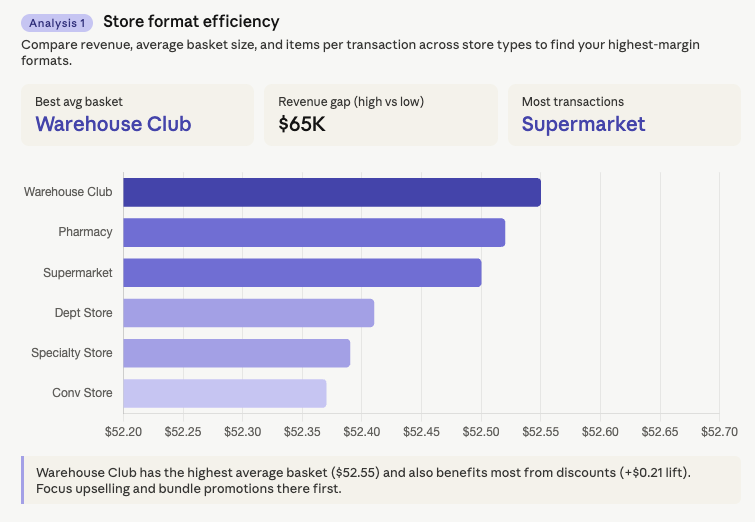


วิเคราะห์ข้อมูลด้วย AI¶
แบบฝึกหัดนี้จะสาธิตความสามารถและข้อจำกัดในการทำ Data Analytics ใน ChatGPT
👩🏻💼 สถานการณ์สมมติ¶
คุณเป็นผู้จัดการที่ต้องวิเคราะห์ข้อมูลให้กับองค์กรของคุณอยู่เสมอ คุณต้องออกแบบการวัดผลงานของทีม และนำเสนอในรูปแบบ Dashboard ต่อผู้บริหาร เพื่อจูงใจให้ผู้บริหารยอมรับการปรับกลยุทธ์การขาย AI จะช่วยคุณในสถานการณ์นี้อย่างไร?
Using ChatGPT to Plan Your Analytics¶
ChatGPT สามารถช่วยเราวางแผนการทำ dashboard ตั้งแต่ในสเต็ปของการวางแผน เตรียมข้อมูล และออกแบบ measurements ให้กับธุรกิจของเรา
I'm a Marketing Operations Manager a large company, overseeing the marketing initiatives for our convenient stores located all around the country. We want to create a dashboard to help us track and optimize our promotional campaigns. Here are some data we have:
1. Sales Data: Daily and weekly sales figures segmented by product code and store location.
2. Campaign Data: Information on current and past promotional campaigns, including details about discount coupons, loyalty points offers, start data and end date of the promotion linked to sales data by product code and store location.
3. Redemption Data: Information about the number of coupons or loyalty points redeemed on specific product code and store location.
---
Please think through it step-by-step. What key performance indicators (KPIs) should we ideally track to measure the success of our promotional campaigns at 7-Eleven stores?
Response I got
To measure the success of promotional campaigns at 7-Eleven stores, you should track the following key performance indicators (KPIs):
- Sales Growth: Measure the increase in sales during the promotional period compared to a baseline period. This can be tracked daily and weekly by product code and store location.
- Redemption Rate: Calculate the percentage of issued coupons or loyalty points that are redeemed. This helps to understand the effectiveness of the promotional offers.
- Average Transaction Value (ATV): Monitor the average amount spent per transaction during the promotion. Compare this with the ATV before the promotion to see if customers are spending more.
- Customer Footfall: Track the number of customers visiting the stores during the promotion. An increase in footfall can indicate the promotion's attractiveness.
- Product Sell-through Rate: Measure the percentage of inventory sold during the promotion period. This helps to understand how well the promoted products are performing.
- Gross Margin: Evaluate the profit margin on sales during the promotion, considering the cost of discounts and any additional marketing expenses.
- Promotion Uplift: Assess the additional sales generated due to the promotion. This can be calculated by comparing sales of promoted products during the promotion to the sales in a comparable period without promotion.
- Customer Retention Rate: Track how many customers return to the store after participating in the promotion. This helps to understand if the promotion helps in building long-term customer loyalty.
- Basket Size: Measure the number of items per transaction. Promotions might encourage customers to buy more items per visit.
- Campaign ROI (Return on Investment): Calculate the financial return of the promotion compared to the costs associated with running it. This includes the cost of discounts, marketing expenses, and any operational costs.
- Conversion Rate: For digital or targeted campaigns, track the percentage of customers who responded to the promotion (e.g., via email or app notifications) and made a purchase.
- Customer Acquisition Cost (CAC): If the promotion targets new customers, measure the cost to acquire each new customer through the promotion.
- Churn Rate: For loyalty points promotions, measure the rate at which customers stop participating in the loyalty program before and after the promotion.
By tracking these KPIs, you can gain insights into the effectiveness of your promotional campaigns and identify areas for improvement to optimize future campaigns.
Here's my data schema:
### Sales Data
1. **sale_id**: INT - Unique identifier for each sale record.
2. **date**: DATE - Date of the sale.
3. **week_number**: INT - Week number of the sale.
4. **store_id**: INT - Identifier for the store location.
5. **product_code**: VARCHAR(20) - Unique code for the product.
6. **quantity_sold**: INT - Number of units sold.
7. **total_sales**: DECIMAL(10,2) - Total sales amount.
### Campaign Data
1. **campaign_id**: INT - Unique identifier for each campaign.
2. **campaign_name**: VARCHAR(100) - Name of the promotional campaign.
3. **start_date**: DATE - Start date of the campaign.
4. **end_date**: DATE - End date of the campaign.
5. **discount_coupon**: VARCHAR(20) - Code for the discount coupon, if applicable.
6. **loyalty_points**: INT - Loyalty points offered during the campaign.
7. **product_code**: VARCHAR(20) - Unique code for the product involved.
8. **store_id**: INT - Identifier for the store location.
### Redemption Data (with Customer Data)
1. **redemption_id**: INT - Unique identifier for each redemption record.
2. **date**: DATE - Date of redemption.
3. **store_id**: INT - Identifier for the store location.
4. **product_code**: VARCHAR(20) - Unique code for the product redeemed.
5. **coupon_code**: VARCHAR(20) - Code for the coupon used, if applicable.
6. **loyalty_points**: INT - Loyalty points redeemed.
7. **customer_id**: INT - Unique identifier for the customer.
8. **membership_status**: VARCHAR(20) - Membership status of the customer (e.g., Gold, Silver, Bronze).
I'm interested in the following metrics:
1. Product Sell-through Rate: Measure the units of inventory sold during the promotion period. This helps to understand how well the promoted products are sold through.
2. Promotion Uplift: Assess the additional sales generated due to the promotion. This can be calculated by comparing gross sales of promoted products during the promotion to the sales in a comparable period without promotion.
3. Campaign ROI (Return on Investment): Calculate the financial return of the promotion compared to the costs associated with running it. This includes the cost of discounts, marketing expenses, and any operational costs.
Do I have enough data to measure these metrics? Please think through it step-by-step. For each metrics explain formula for computation and mention the columns you will use to calculate the metrics. If we miss data, please tell me what data are missing.
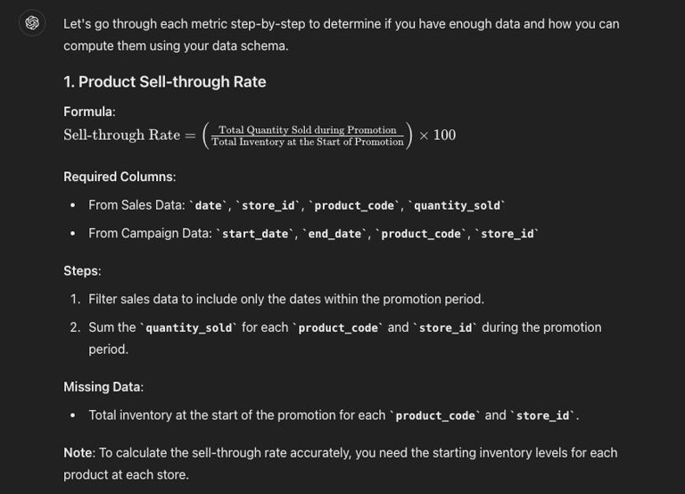
Response I got
Let's go through each metric step-by-step to determine if you have enough data and how you can compute them using your data schema.
1. Product Sell-through Rate¶
Formula: [ \text{Sell-through Rate} = \left( \frac{\text{Total Quantity Sold during Promotion}}{\text{Total Inventory at the Start of Promotion}} \right) \times 100 ]
Required Columns:
- From Sales Data:
date,store_id,product_code,quantity_sold - From Campaign Data:
start_date,end_date,product_code,store_id
Steps:
- Filter sales data to include only the dates within the promotion period.
- Sum the
quantity_soldfor eachproduct_codeandstore_idduring the promotion period.
Missing Data:
- Total inventory at the start of the promotion for each
product_codeandstore_id.
Note: To calculate the sell-through rate accurately, you need the starting inventory levels for each product at each store.
2. Promotion Uplift¶
Formula: [ \text{Promotion Uplift} = \left( \frac{\text{Total Sales during Promotion} - \text{Total Sales in Comparable Period}}{\text{Total Sales in Comparable Period}} \right) \times 100 ]
Required Columns:
- From Sales Data:
date,store_id,product_code,total_sales - From Campaign Data:
start_date,end_date,product_code,store_id
Steps:
- Filter sales data for the promotion period and the comparable period (e.g., same length of time immediately before the promotion or same period in the previous year).
- Sum the
total_salesfor eachproduct_codeandstore_idduring both periods. - Compute the uplift using the formula.
Note: Ensure that the comparable period is appropriately selected to avoid seasonal variations.
3. Campaign ROI (Return on Investment)¶
Formula: [ \text{Campaign ROI} = \left( \frac{\text{Net Profit from Campaign} - \text{Cost of Campaign}}{\text{Cost of Campaign}} \right) \times 100 ]
Required Columns:
- From Sales Data:
date,store_id,product_code,total_sales - From Campaign Data:
start_date,end_date,discount_coupon,loyalty_points,product_code,store_id
Additional Data Needed:
- Cost of discounts (can be derived from
discount_couponif value per coupon is known). - Cost of loyalty points (can be derived from
loyalty_pointsif value per point is known). - Marketing expenses.
- Operational costs.
Steps:
- Calculate the total revenue generated during the campaign period from
total_sales. - Estimate the cost of discounts and loyalty points redeemed using the redemption data.
- Subtract the campaign costs (discounts, loyalty points, marketing, operational) from the total revenue to get the net profit.
- Calculate ROI using the formula.
Missing Data:
- Exact value of discounts associated with
discount_coupon. - Value of
loyalty_points. - Marketing expenses and operational costs associated with each campaign.
Summary¶
Data You Have:
- Sales figures (daily and weekly) segmented by product and store location.
- Campaign details including start and end dates, product codes, and store locations.
- Redemption data including coupons and loyalty points used.
Data You Need:
- Starting inventory levels for calculating the sell-through rate.
- Values associated with discount coupons and loyalty points.
- Marketing and operational costs for calculating the ROI.
With the available data and some additional data on inventory levels, coupon values, loyalty points values, and campaign costs, you will be able to measure the required metrics accurately.
ChatGPT ยังตอบผิดอยู่บ้าง เช่น ตรง Campaign ROI สูตรผิด แต่ก็ทำให้เราเห็นถึงช่องโหว่ของข้อมูลของเราที่คิดไม่ถึง และเขียนสูตรออกมาให้เราตรวจสอบและตัดสินใจได้เร็วกว่าการมานั่งร่างสูตรด้วยตัวเองโดยไม่มีผู้ช่วย หรือเสิชหาสูตรจากอินเตอร์เน็ตทีละอัน ถ้าสูตรไม่ถูกต้องเราสามารถบอกให้ ChatGPT แก้ไขได้
Dashboard Designs¶
การจะสร้าง dashboard ขึ้นมาเราอาจจะต้องคำนึงถึงคนที่จะดูข้อมูลจาก dashboard นี้ (เช่น ผู้บริหาร) และอาจจะต้องมีความคิดสร้างสรรค์ว่าจะสร้าง dashboard อย่างไรให้ตรงใจ อาจจะใช้ prompt ต่อไปนี้
My boss is often worried about the overall impact and efficiency of our promotional campaigns. She has talked about the following concerns.
1. Campaign & Customer Interaction: She wants to know if the campaigns are reaching the right audience and if the customers who engage with the promotions are also the ones contributing significantly to our sales.
2. Customer Retention: She is interested in understanding whether the promotions are helping to retain existing customers and attract new ones. Are we seeing an increase in repeat purchases from customers who used the coupons or loyalty points?
Can you design the dashboard to address her concerns. Please visualize a perfect dashboard for my boss panel-by-panel. In each panel, please list all the metrics and provide a description of how these metrics can be computed. What data are needed to compute them.
Response I got
To design a comprehensive dashboard that addresses your boss's concerns, we can create multiple panels, each focusing on a specific aspect of the promotional campaigns. Here’s a visualization of the perfect dashboard, panel-by-panel, with the relevant metrics, descriptions, and data requirements.
Panel 1: Campaign & Customer Interaction¶
Metrics:
-
Customer Reach:
- Description: Measures the number of unique customers who engaged with the promotion (used a coupon or loyalty points).
- Computation: Count of unique
customer_idinRedemption Data. - Data Needed:
customer_id,coupon_code,loyalty_points.
-
Customer Contribution to Sales:
- Description: Total sales attributed to customers who engaged with the promotions.
- Computation: Sum of
total_salesfor sales records wherecustomer_idis found inRedemption Data. - Data Needed:
customer_id,total_sales.
-
Engagement Rate:
- Description: Percentage of total customers who engaged with the promotion.
- Computation: (\frac{\text{Unique Customers Engaged}}{\text{Total Customers}} \times 100)
- Data Needed:
customer_idin both Sales and Redemption Data.
Visualization:
- Bar chart showing the number of engaged customers per campaign.
- Pie chart representing the proportion of sales contributed by engaged customers.
- Line chart tracking engagement rate over different campaigns.
Panel 2: Customer Retention¶
Metrics:
-
Repeat Purchase Rate:
- Description: Percentage of customers who made repeat purchases after engaging with the promotion.
- Computation: (\frac{\text{Customers with Repeat Purchases}}{\text{Total Customers Engaged}} \times 100)
- Data Needed:
customer_id,date.
-
New vs. Returning Customers:
- Description: Number of new customers versus returning customers engaging with the promotion.
- Computation: Count of new
customer_id(first-time buyers) and returningcustomer_id. - Data Needed:
customer_id,date.
-
Customer Lifetime Value (CLV):
- Description: Predicted net profit attributed to the entire future relationship with a customer.
- Computation: CLV formula considering
total_salesand frequency of purchases. - Data Needed:
customer_id,total_sales,date.
Visualization:
- Bar chart showing the number of repeat vs. one-time purchases.
- Stacked bar chart comparing new vs. returning customers.
- Line graph showing trends in Customer Lifetime Value over time.
Panel 3: Campaign Analysis (Why Campaigns Work or Fail)¶
Metrics:
-
Sales Uplift:
- Description: Additional sales generated due to the campaign.
- Computation: (\text{Sales During Campaign} - \text{Baseline Sales})
- Data Needed:
total_sales,date,start_date,end_date.
-
Customer Feedback (if available):
- Description: Qualitative data on customer satisfaction and feedback regarding the promotions.
- Computation: Analysis of survey or feedback data.
- Data Needed: Customer survey or feedback forms.
-
Promotion Cost Analysis:
- Description: Total cost of running the promotion including discounts, loyalty points, marketing, and operational costs.
- Computation: Sum of all costs associated with the promotion.
- Data Needed: Cost per coupon, monetary value per loyalty point, marketing expenses, operational costs.
-
Conversion Rate:
- Description: Percentage of customers who made a purchase after seeing the promotion.
- Computation: (\frac{\text{Customers who Purchased}}{\text{Customers who Viewed Promotion}} \times 100)
- Data Needed:
customer_id,campaign_id, interaction data (views/clicks if available).
Visualization:
- Comparative bar chart showing sales uplift for different campaigns.
- Pie chart displaying the distribution of campaign costs.
- Line chart indicating conversion rates across various campaigns.
Panel 4: Overall Impact and Efficiency¶
Metrics:
-
ROI (Return on Investment):
- Description: Financial return of the promotion compared to the costs associated.
- Computation: (\frac{\text{Net Profit}}{\text{Total Cost}} \times 100)
- Data Needed:
total_sales, campaign costs.
-
Overall Campaign Performance:
- Description: Aggregate performance metrics of all campaigns.
- Computation: Summary statistics (mean, median, total) for sales uplift, engagement rate, repeat purchase rate, etc.
- Data Needed: All relevant metrics data.
-
Trend Analysis:
- Description: Trends in key metrics over time to identify patterns.
- Computation: Time-series analysis of sales, engagement, retention, etc.
- Data Needed: Time-stamped data for all metrics.
Visualization:
- KPI dashboard with summary metrics.
- Heatmap showing performance metrics across different stores and campaigns.
- Time-series line charts showing trends in key metrics.
Summary¶
By creating panels focused on Campaign & Customer Interaction, Customer Retention, Campaign Analysis, and Overall Impact and Efficiency, the dashboard will provide a holistic view of the promotional campaigns' performance. Each panel will utilize specific metrics calculated from the given data and additional data where necessary to provide actionable insights into campaign effectiveness and areas for improvement.
เราอาจจะใช้ ChatGPT เพื่อเพิ่มความกระจ่างในปัญหาที่ผู้บริหารสงสัย แต่เราไม่แน่ใจว่าจะตอบคำถามได้อย่างไรด้วยข้อมูล เช่น
My boss is often worried Why Campaigns Work or Fail: She wants data to inform us why some campaigns fly and some campaigns fail.
In a retail store like 7-Eleven, what determines the success or failure of a coupon campaign? What analytic angle should we look into to answer the above question?
Response I got
In a retail store like 7-Eleven, the success or failure of a coupon campaign can be influenced by various factors. To determine these, it's essential to analyze the campaign from multiple angles. Here are some key factors and the corresponding analytics angles to consider:
-
Target Audience Alignment:
- Customer Segmentation Analysis: Assess whether the coupons were distributed to the right customer segments. Look at demographic data, purchasing behavior, and loyalty program participation to see if the targeted audience aligns with the customers who actually redeemed the coupons.
-
Timing and Duration:
- Sales Trend Analysis: Evaluate sales patterns before, during, and after the campaign. Compare these with historical data to understand the timing's impact. Analyze if the campaign coincided with seasonal trends, holidays, or other significant events.
-
Promotion Awareness:
- Marketing Channel Effectiveness: Analyze the performance of different marketing channels (e.g., social media, email, in-store promotions). Look at metrics like reach, engagement, and conversion rates to determine how well the promotion was communicated to potential customers.
-
Offer Attractiveness:
-
Redemption Rates: Measure the percentage of distributed coupons that were redeemed. High redemption rates indicate that the offer was appealing, while low rates may suggest that the discount or incentive was not compelling enough.
-
Customer Feedback and Surveys: Collect and analyze feedback from customers to understand their perceptions of the offer's value.
-
-
Product Selection:
- Product Performance Analysis: Examine the sales data for the specific products included in the promotion. Determine if the promoted products were popular or had a high turnover rate before the campaign. Analyze inventory levels to ensure the products were sufficiently stocked.
-
In-Store Execution:
- Store Compliance Checks: Evaluate how well the campaign was executed in stores. Check if the promotional materials were displayed correctly and if staff were informed and motivated to promote the campaign. This can be done through store audits or mystery shopper reports.
-
Competitive Landscape:
- Market Benchmarking: Compare the campaign's performance against similar promotions run by competitors. This can provide insights into whether external factors, like competitor offers, influenced the campaign's success or failure.
-
Pricing Strategy:
- Price Sensitivity Analysis: Assess how price changes influenced customer behavior. Determine if the discount provided was significant enough to drive purchases without eroding profit margins.
-
Operational Efficiency:
- Logistics and Supply Chain Analysis: Evaluate if there were any logistical issues that affected the campaign, such as stockouts or delayed shipments. Ensure that the supply chain was prepared to handle the increased demand generated by the promotion.
By examining these factors and analytics angles, you can gain a comprehensive understanding of why certain coupon campaigns succeed while others fail. This will enable you to optimize future campaigns and make data-driven decisions to enhance their effectiveness.
If I want to calculate how much of the campaign performance is lost due to inventory shortage, what metrics should be calculated and what data are needed?
Response I got
To calculate how much of the campaign performance is lost due to inventory shortage, you will need to analyze several metrics and gather specific data. Here’s a structured approach to accomplish this:
Key Metrics to Calculate:¶
-
Stockout Rate:
- The percentage of time during the campaign period when the promoted products were out of stock.
-
Lost Sales Due to Stockouts:
- The estimated sales that were lost because the products were not available when customers wanted to purchase them.
-
Unfulfilled Demand:
- The difference between the potential demand (based on normal and campaign-influenced demand) and the actual sales due to inventory shortages.
-
Customer Satisfaction Impact:
- Indirect metric, often measured through customer feedback, indicating how stockouts affected customer satisfaction and future purchasing behavior.
Data Needed:¶
-
Sales Data:
- Daily and weekly sales figures segmented by product code and store location.
- Historical sales data for the same products and locations for baseline comparisons.
-
Inventory Data:
- Daily inventory levels for each promoted product at each store location.
- Records of stock replenishment dates and quantities.
-
Campaign Data:
- Details of the promotional campaign, including start and end dates, promoted product codes, and expected uplift in demand.
-
Customer Data (Optional):
- Customer feedback or complaints related to stockouts.
- Purchase intent data if available (e.g., items added to online shopping carts but not purchased due to unavailability).
Steps to Calculate Metrics:¶
-
Calculate Stockout Rate:
- Formula: Stockout Rate = (Days Out of Stock / Total Campaign Days) * 100
- Data Required: Daily inventory levels for each product during the campaign period.
-
Estimate Lost Sales Due to Stockouts:
- Step 1: Identify days when stockouts occurred for each product.
- Step 2: Calculate the average daily sales of the promoted products before the stockout period.
- Step 3: Estimate potential sales during the stockout period by multiplying the average daily sales by the number of stockout days.
- Formula: Lost Sales = Average Daily Sales * Stockout Days
- Data Required: Historical sales data, daily sales data during the campaign, and stockout days.
-
Determine Unfulfilled Demand:
- Step 1: Calculate expected demand based on the promotional uplift (compare campaign period sales to a comparable period without the promotion).
- Step 2: Subtract actual sales (considering stockouts) from the expected demand.
- Formula: Unfulfilled Demand = Expected Demand - Actual Sales
- Data Required: Sales data during and before the campaign, expected uplift percentage.
-
Analyze Customer Satisfaction Impact (Optional):
- Step 1: Gather customer feedback or complaints related to product availability.
- Step 2: Analyze the feedback to quantify dissatisfaction related to stockouts.
- Data Required: Customer feedback, surveys, complaint logs.
Example Calculation:¶
-
Stockout Rate Calculation:
- If a product was out of stock for 5 days during a 30-day campaign: Stockout Rate = (5 / 30) * 100 = 16.67%
-
Lost Sales Due to Stockouts:
- If the average daily sales of the product were 100 units, and the product was out of stock for 5 days: Lost Sales = 100 units/day * 5 days = 500 units
-
Unfulfilled Demand:
- If the expected demand (based on the promotional uplift) was 4000 units, but actual sales were 3500 units due to stockouts: Unfulfilled Demand = 4000 units - 3500 units = 500 units
By calculating these metrics, you can quantify the impact of inventory shortages on your campaign performance. This analysis will help you understand the lost sales opportunities and make informed decisions to improve inventory management for future campaigns.
Data Understanding with ChatGPT¶
แบบฝึกหัดต่อไปเราจะลองใช้ ChatGPT เพื่อทำความเข้าใจข้อมูลที่เราได้รับมา
Note: ฟังก์ชันที่จะโชว์ต่อไปนี้มีแต่ใน ChatGPT Paid Plan เท่านั้น เมื่อเร็วๆนี้ ChatGPT ประกาศว่ากำลังเร่งพัฒนาฟีเจอร์ใหม่ที่ใช้เพื่อการทำ data analytics โดยเฉพาะ
เราจะใช้ข้อมูล retail purchase จาก Kaggle ที่ถูกลดทอนให้สั้นเหลือ 250 แถวเพื่อการทดลอง สามารถดาวน์โหลดมาเล่นได้เลยค่ะ
ตัวอย่างการ describe และ visualize ข้อมูล
https://chatgpt.com/share/6802e81d-31e0-8011-a148-594f9e8ae8ed
ตัวอย่างการวิเคราะห์ข้อมูลเพื่อตอบคำถาม
https://chatgpt.com/share/8d5aea7a-87e4-4e0a-b949-7e6b5f138347
Cautions:¶
ChatGPT is not a data analytic tool.¶
-
Generative AI โดยทั่วไปเป็นได้เพียงผู้ช่วยให้ data scientist/data analyst ทำงานแต่ละสเต็ปได้ง่ายขึ้น เอไอไม่สามารถทำการวิเคราะห์ข้อมูลแทนผู้เชี่ยวชาญได้ในขณะนี้
-
สำหรับผู้เชี่ยวชาญด้านการวิเคราะห์ข้อมูล ChatGPT เป็นเครื่องมือที่ใช้ค่อนข้างยาก เพราะโค้ดที่เขียนออกมาอาจจะผิดหรือไม่ถูกหลักการการจัดการข้อมูลทุกครั้ง ต้องสั่งให้ทำใหม่ ไม่สามารถปรับเปลี่ยนข้อมูล (data wrangling) ได้ตามใจ บ่อยครั้งอาจจะต้องก๊อปโค้ดไปแก้และรันข้างนอกเพื่อให้ได้ผลลัพธ์ที่ต้องการ แต่ถ้าเป็นงานวิเคราะห์หรือสร้างกราฟที่ไม่ซับซ้อนมากจะเร็วกว่าทำเอง (ใน BI Software เช่น Tableau เราสามารถสั่งเอไอทำแล้วถ้าผลลัพธ์ออกมาไม่ถูกก็สามารถแก้ไขได้เลยในหน้าเดียวกัน เป็นประสบการณ์ผู้ใช้ที่ดีกว่า)
-
สิ่งที่ ChatGPT หรือ Generative AI ทำออกมามีโอกาสผิด (เช่นเดียวกับมนุษย์ทั่วไป) เช่น ChatGPT อาจจะคำนวณค่าเฉลี่ย ค่าสูงสุด ต่ำสุดออกมาผิด ซึ่งอาจจะเกิดจาก hallucination และความสามารถที่ยังจำกัด และจะยิ่งเป็นมากในกรณีที่ได้รับ prompt ที่กำกวม จึงต้องตรวจสอบโค้ดที่เขียนออกมาเสมอว่าเขียนฟังก์ชันวิเคราะห์ข้อมูลถูกหรือไม่
-
ChatGPT ไม่ได้ถูกออกแบบมาให้วิเคราะห์ข้อมูลขนาดใหญ่จึงมีข้อจำกัดเรื่องไซส์ของข้อมูลที่จะอัพโหลดขึ้นไป (ไม่เกิน 50 MB สำหรับ csv file) สามารถศึกษาข้อจำกัดนี้ได้ในลิงค์นี้ link
AI-Enabled Creations
Cards¶
การ์ดอวยพรวันสงกรานต์ สร้างด้วย ChatGPT Image Generation เพียงแค่บอก AI ว่าต้องการการ์ดแบบไหน ก็ได้ผลงานพร้อมส่งทันที
Prompt 1 — การ์ดสำหรับผู้ใหญ่ สไตล์เป็นทางการ
สร้างการ์ดอวยพรวันสงกรานต์เหมาะสำหรับส่งในไลน์ให้กับผู้ใหญ่
Prompt 2 — เพิ่มรายละเอียดให้สนุกขึ้น
.png)
สร้างการ์ดอวยพรวันสงกรานต์เหมาะสำหรับส่งในไลน์ให้กับผู้ใหญ่ มีหมาแมวและเด็กๆเล่นน้ำกันสนุกสนาน
Infographics¶
AI Case Study Illustration — สร้างด้วย ChatGPT Image Generation
ใช้ AI สร้างภาพประกอบสำหรับสไลด์ Case Study แทนการหาภาพ Stock เพียงบอก AI ถึงฉากและตัวละครที่ต้องการ ได้ภาพที่ตรงกับเนื้อหาทันที
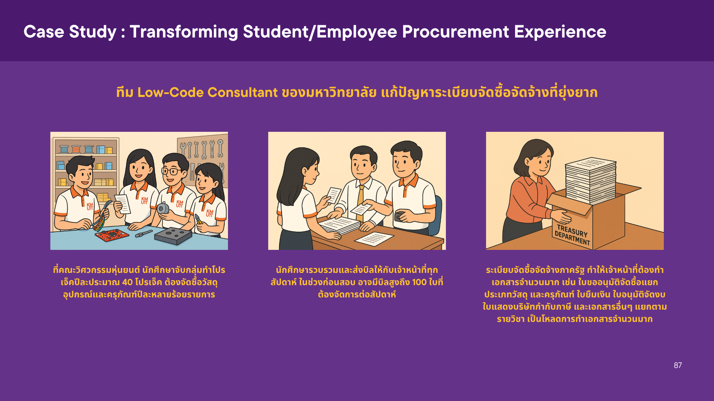
SPARK Infographic — สร้างด้วย NotebookLM Infographic Feature
ใช้ฟีเจอร์ Infographic ของ NotebookLM สร้างภาพสรุปงานวิจัย SPARK AI Agent โดยใส่ prompt พิเศษเพื่อควบคุม color scheme และสไตล์กราฟิกให้เข้ากับ brand มหาวิทยาลัยและน้ำเสียงเชิงวิชาการ
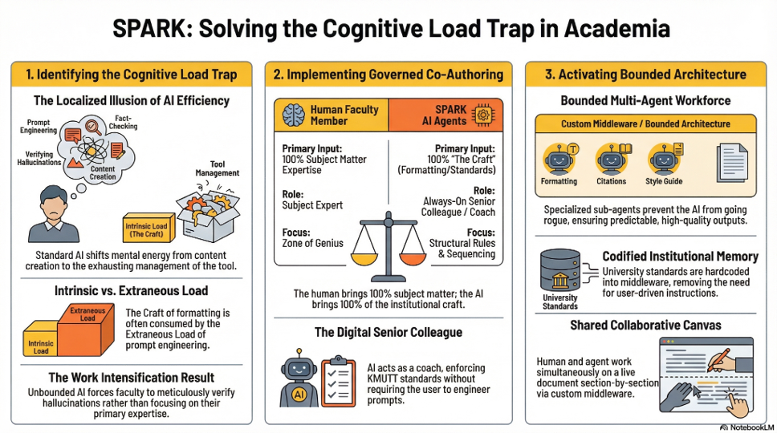
Website¶
สร้างเว็บไซต์ KMUTT AI Competency Framework ด้วย Claude Code ใช้เวลาประมาณ 3 ชั่วโมงในการสร้างและปรับแต่ง โดยการสนทนากับ AI เพื่อออกแบบโครงสร้าง เนื้อหา และดีไซน์ไปพร้อมกัน โดยไม่ต้องเขียนโค้ดเองแม้แต่บรรทัดเดียว
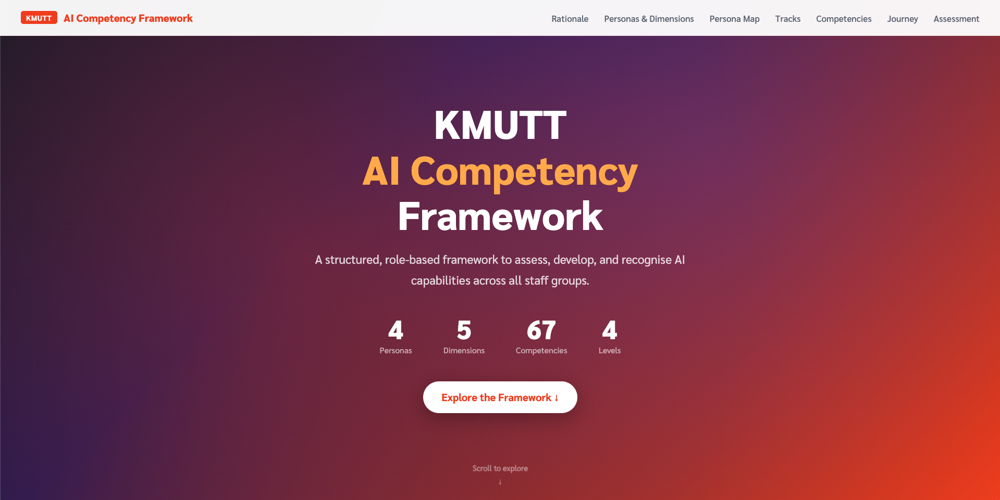
Web Application¶
สร้าง Prototype แอปพลิเคชัน RM Insight Pro ด้วย Google AI Studio ภายใน 30 วินาที ใช้ในการสอน Executive ของ SCB ให้เห็นว่า AI สามารถช่วย Prototype ไอเดียนวัตกรรมได้รวดเร็วแค่ไหน
แอปนี้จินตนาการว่าจะช่วย Relationship Manager ของธนาคารบริหารลูกค้าองค์กรได้ดีขึ้น ด้วยการวิเคราะห์ข้อมูลและแนะนำโอกาสทางธุรกิจแบบ Real-time
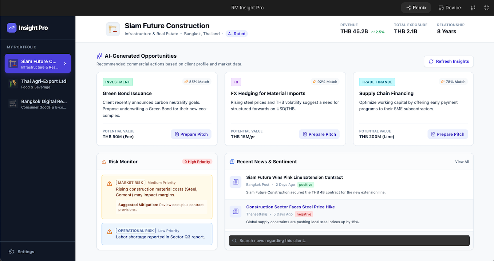
Video¶
วิดีโอสาธิตการใช้ AI สร้างสื่อการเรียนรู้สำหรับพนักงานมหาวิทยาลัย
เครื่องมือที่ใช้:
- Google Cloud TTS — สร้างเสียงพากย์ภาษาไทย
- Kling AI — สร้างคลิปวิดีโอและ Lip Sync (ใช้เครดิตของ Kling AI ในการสร้างด้วยค่าใช้จ่ายประมาณ 80 บาทสำหรับวิดีโอขนาด 15 วินาที)
- CapCut — ตัดต่อ
Talking Agent¶
สร้าง AI Agent ที่มีหน้าตาและพูดได้เหมือนมนุษย์ ด้วย Soul Machines เครื่องมือที่ช่วยสร้าง Digital Human สำหรับองค์กร ตัวอย่างนี้สร้าง AI Agent สำหรับมหาวิทยาลัยเทคโนโลยีพระจอมเกล้าธนบุรี (KMUTT) ที่สามารถโต้ตอบกับผู้ใช้ได้แบบ Real-time
Interior Design¶
ออกแบบมุมห้องโดยใช้ภาพถ่ายจริงเป็นจุดตั้งต้น ออกแบบด้วย Gemini Nano Banana
Prompt ที่ใช้:
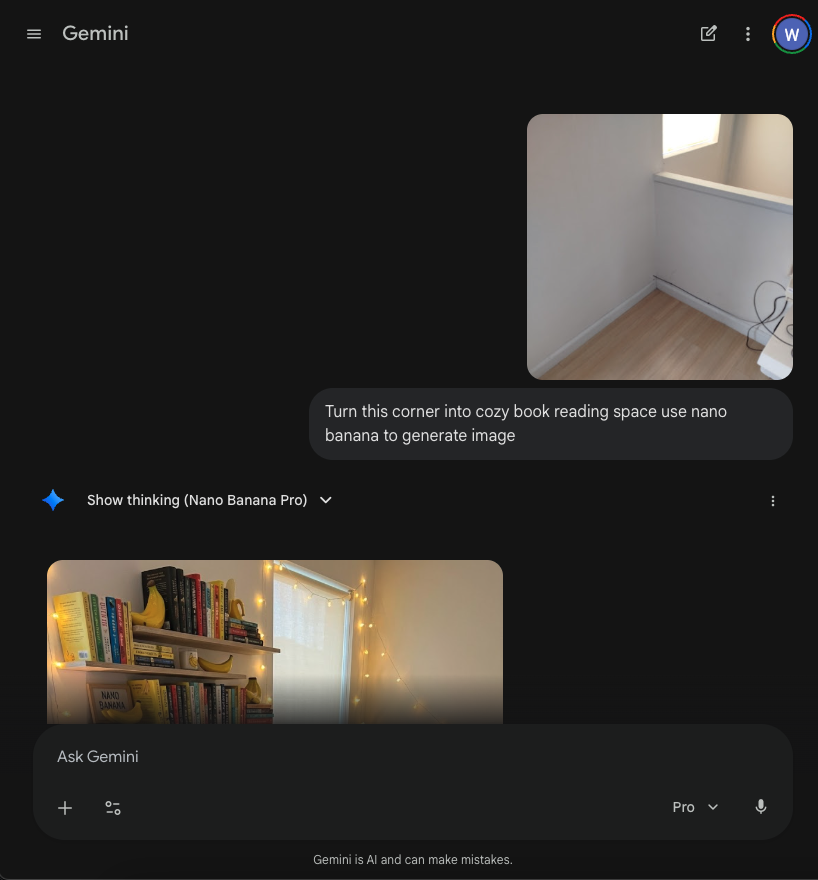
ผลลัพธ์:
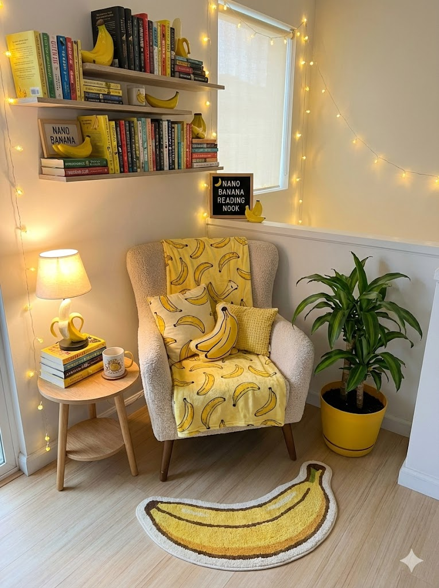
ตัวอย่างตกแต่งออฟฟิศ:
คิดจนปวดหัว จะออกแบบออฟฟิสยังไงดี?
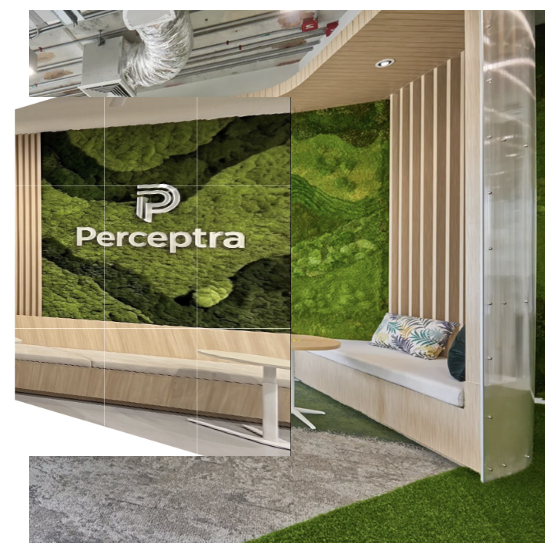
เพิ่มความเป็นแบรนด์เราเข้าไปหน่อยละกัน
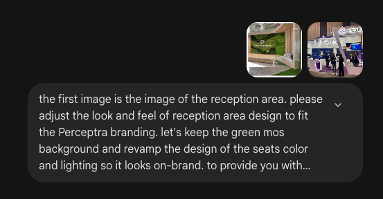
ผลลัพธ์:
น้องเติมหมอนน่ารักๆให้ด้วย (nano banana เป็นคนตลก)
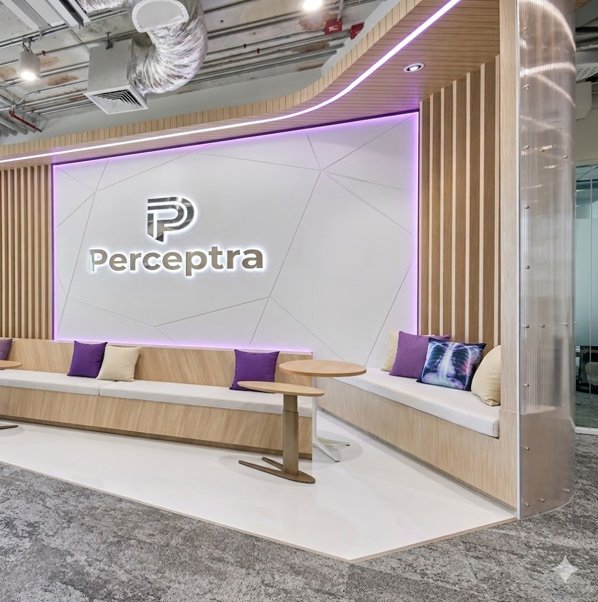
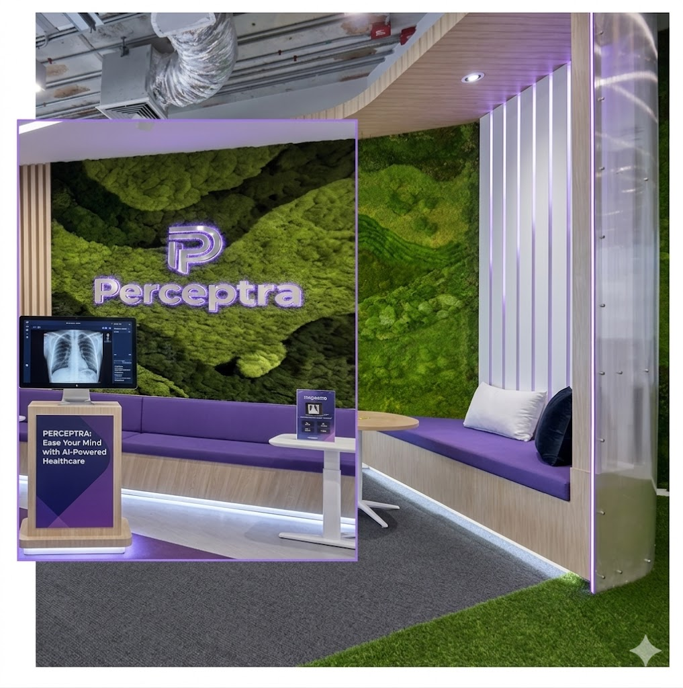
Other Tools
Deep Research¶
Deep Research คือฟีเจอร์ที่ให้ AI ทำการค้นคว้าแบบลึกแทนเรา โดยจะค้นหาข้อมูลจากหลายร้อยแหล่งบนอินเทอร์เน็ต วิเคราะห์และสังเคราะห์ข้อมูล แล้วส่งมอบรายงานที่ครบถ้วนกลับมาให้ ราวกับมีนักวิเคราะห์ส่วนตัวคอยทำงานให้ตลอด 24 ชั่วโมง
แทนที่จะใช้เวลาหลายชั่วโมงในการเปิดแท็บเบราว์เซอร์หลายสิบหน้า Deep Research จะทำงานนั้นแทนเราใน 5–30 นาที
ChatGPT Deep Research¶
เข้าถึงได้ที่¶
https://chatgpt.com — ต้องล็อกอิน จากนั้นเลือก Deep Research ในช่องพิมพ์ข้อความ
ใครใช้ได้บ้าง¶
| แผน | จำนวนที่ใช้ได้/เดือน |
|---|---|
| Free | 5 ครั้ง |
| Plus / Team | ~25 ครั้ง |
| Pro ($200/เดือน) | ~250 ครั้ง |
มันทำอะไรได้บ้าง¶
- ค้นหาข้อมูลจากหลายร้อยเว็บไซต์พร้อมกัน
- สร้าง Research Plan ให้เราดูและแก้ไขก่อนเริ่มทำงาน
- ดึงข้อมูลจากไฟล์หรือ spreadsheet ที่เราแนบมาได้
- ส่งมอบรายงานพร้อม citations เพื่อให้ตรวจสอบแหล่งที่มา
- Export รายงานเป็น Markdown, Word, หรือ PDF
เหมาะกับงานแบบไหน¶
- วิจัยตลาดหรือคู่แข่ง
- เปรียบเทียบผลิตภัณฑ์หรือบริการก่อนตัดสินใจซื้อ
- สรุปงานวิชาการหรือรายงานอุตสาหกรรม
- งานที่ต้องการข้อมูลจากหลายแหล่งในครั้งเดียว
ตัวอย่าง Prompt ลองใช้ได้เลย¶
วิเคราะห์แนวโน้มการใช้ AI ในภาคการศึกษาของประเทศไทยในปี 2025-2026 โดยเน้นการนำไปใช้จริงในองค์กร ความท้าทายหลัก และโอกาสที่น่าสนใจ
เปรียบเทียบเครื่องมือ AI สำหรับการสร้างเนื้อหาการตลาด (เช่น Jasper, Copy.ai, ChatGPT) ในแง่ฟีเจอร์ ราคา และความเหมาะสมกับธุรกิจขนาดกลาง
สรุปงานวิจัยล่าสุดเกี่ยวกับผลกระทบของการทำงานแบบ hybrid ต่อประสิทธิภาพและความพึงพอใจของพนักงาน พร้อมข้อเสนอแนะสำหรับผู้จัดการ
Gemini Deep Research¶
เข้าถึงได้ที่¶
https://gemini.google.com — ล็อกอินด้วยบัญชี Google จากนั้นคลิก Tools → Deep Research ในช่องพิมพ์ข้อความ
ใครใช้ได้บ้าง¶
| แผน | จำนวนที่ใช้ได้/เดือน |
|---|---|
| Free | 5 ครั้ง |
| Gemini Advanced ($19.99/เดือน) | ไม่จำกัด |
มันทำอะไรได้บ้าง¶
- ค้นหาข้อมูลจากเว็บได้หลายร้อยแหล่ง
- เชื่อมต่อกับ Google Workspace ได้โดยตรง — ค้นหาข้อมูลจาก Gmail, Drive, และ Google Chat ของเราได้ด้วย
- สร้าง Research Plan ให้แก้ไขก่อนเริ่ม
- Export รายงานไปยัง Google Docs ได้ทันที
เหมาะกับงานแบบไหน¶
- งานที่ต้องดึงข้อมูลจากเอกสารภายในองค์กรประกอบกับข้อมูลจากอินเทอร์เน็ต
- สรุปข่าวสารหรือความเคลื่อนไหวในอุตสาหกรรม
- เตรียมข้อมูลสำหรับการประชุมหรือการนำเสนอ
- วิจัยเชิงกลยุทธ์ที่ต้องการแหล่งข้อมูลที่หลากหลาย
ตัวอย่าง Prompt ลองใช้ได้เลย¶
วิเคราะห์สถานการณ์การนำ AI มาใช้ในธุรกิจค้าปลีกของไทยในปี 2025-2026 ครอบคลุมกรณีศึกษาจริง ผลลัพธ์ที่ได้ และบทเรียนสำหรับผู้บริหาร
สรุปแนวปฏิบัติที่ดีที่สุด (best practices) ในการจัดการทีมงานที่ใช้ AI เป็นเครื่องมือในการทำงาน โดยอ้างอิงจากรายงานและงานวิจัยในช่วง 2 ปีที่ผ่านมา
เปรียบเทียบนโยบาย AI ของประเทศในอาเซียน ว่าประเทศใดมีความพร้อมและก้าวหน้าที่สุด และประเทศไทยอยู่ตรงไหนในภาพรวมนี้
เปรียบเทียบ ChatGPT vs Gemini Deep Research¶
| ChatGPT | Gemini | |
|---|---|---|
| แผนฟรี | 5 ครั้ง/เดือน | 5 ครั้ง/เดือน |
| แผนชำระเงิน | $20/เดือน (25 ครั้ง) | $19.99/เดือน (ไม่จำกัด) |
| เชื่อมกับ Google Workspace | ❌ | ✅ |
| แนบไฟล์ได้ | ✅ | ✅ |
| Export เป็น Word/PDF | ✅ | Export เป็น Google Docs |
| ความแม่นยำของแหล่งข้อมูล | ✅✅ ดีมาก | ✅✅ ดีมาก |
เคล็ดลับ: Deep Research ไม่เหมาะกับคำถามสั้นๆ ที่ตอบได้ง่าย — ให้ใช้กับงานที่ซับซ้อน ต้องการข้อมูลหลายมิติ หรือต้องการรายงานที่มีแหล่งอ้างอิง ถ้าแค่อยากถามเรื่องทั่วไป ใช้ chat ธรรมดาจะเร็วกว่ามาก
Perplexity¶
Perplexity คือเครื่องมือค้นหาที่ผสาน AI เข้ากับการค้นหาเว็บ — แทนที่จะได้ลิงก์เป็นรายการ คุณจะได้คำตอบที่สังเคราะห์มาแล้ว พร้อม อ้างอิงแหล่งที่มาทุกข้อ ให้คลิกตรวจสอบได้ทันที
ต่างจาก ChatGPT หรือ Claude ที่ตอบจากความรู้ที่ฝึกมา Perplexity ค้นหาจากอินเทอร์เน็ตจริงทุกครั้งที่ถาม — ข้อมูลจึงเป็นปัจจุบันเสมอ และถ้า AI บอกอะไร คุณรู้ได้เลยว่ามาจากที่ไหน
เข้าถึงได้ที่¶
https://www.perplexity.ai — ใช้ได้เลยโดยไม่ต้องสมัคร หรือล็อกอินเพื่อบันทึกประวัติการค้นหา
ใครใช้ได้บ้าง¶
| แผน | ราคา | สิ่งที่ได้เพิ่ม |
|---|---|---|
| Free | ฟรี | ค้นหาเว็บ + AI ตอบพร้อม citations ไม่จำกัด |
| Pro | $20/เดือน | ค้นหาเจาะจงเว็บไซต์ได้, แนบไฟล์, เลือก AI model, Spaces |
มันทำอะไรได้บ้าง¶
- ค้นหาข้อมูลจากเว็บแบบ real-time และสังเคราะห์คำตอบออกมาให้ทันที
- ทุกคำตอบมี citations — ตัวเลขกำกับแต่ละประโยค คลิกได้เพื่อดูต้นฉบับ
- ถามต่อเนื่องได้ในหัวข้อเดิม — มันจำบริบทที่คุยมาตลอด
- แนะนำคำถามที่เกี่ยวข้องให้อัตโนมัติ เพื่อสำรวจหัวข้อได้ลึกขึ้น
- (Pro) สร้าง Spaces เพื่อรวบรวมการค้นคว้าหลายครั้งไว้ในโปรเจกต์เดียว
เหมาะกับงานแบบไหน¶
- ค้นหาข้อมูลที่ต้องการ ความถูกต้องของแหล่งที่มา — เช่น ตัวเลขสถิติ, นโยบาย, งานวิจัย
- ติดตามข่าวสารและความเคลื่อนไหวล่าสุดในวงการที่สนใจ
- ตรวจสอบข้อเท็จจริงก่อนใส่ใน presentation หรือรายงาน
- ค้นหาเร็วและต้องการคำตอบในไม่กี่วินาที ไม่ใช่รายงาน 10 หน้า
Perplexity vs Deep Research — ใช้อะไรเมื่อไหร่¶
| Perplexity | Deep Research (ChatGPT / Gemini) | |
|---|---|---|
| ความเร็ว | ไม่กี่วินาที | 5–30 นาที |
| ผลลัพธ์ | คำตอบสั้น พร้อม citations | รายงานยาว วิเคราะห์เชิงลึก |
| เหมาะกับ | ถามเร็ว ตรวจสอบข้อมูล | วิจัยซับซ้อน ต้องรายงานครบถ้วน |
| Citations | ✅ ทุกประโยค | ✅ รวมอยู่ในรายงาน |
| ข้อมูล real-time | ✅ เสมอ | ✅ เสมอ |
เคล็ดลับ: ใช้ Perplexity เมื่ออยากรู้เร็วและต้องการ source กำกับทันที — ใช้ Deep Research เมื่ออยากได้รายงานที่ครอบคลุมและวิเคราะห์หลายมิติ ทั้งสองใช้เสริมกันได้ดี: Perplexity หาข้อมูลเบื้องต้น, Deep Research ลงลึก
Canva AI Features¶
ในปี 2025 Canva เติมเครื่องมือ AI เข้าไปในกระบวนการ Design ไม่ว่าจะเป็น Dream Lab ที่สามารถสร้างรูปภาพได้ตามสไตล์ที่เราต้องการ Enhanced Photo Editor ที่สามารถเปลี่ยนฉากหลัง แต่งภาพ ขยายภาพ ได้แบบง่ายๆ และ Magic Studio ที่ช่วยให้สร้างดีไซน์ เขียนคอนเทนท์ เขียน สร้างงานดีไซน์แปลกใหม่ได้เพียงแค่คุยกับ AI
Gamma.app สำหรับสร้างพรีเซนเทชั่น¶
Gamma.app เป็นเครื่องมือ AI ที่ช่วยสร้าง Presentation อย่างรวดเร็ว ด้วยความสามารถในการแปลงข้อความเป็นสไลด์ที่มีการออกแบบสวยงาม สามารถสร้างการ์ดข้อความ กราฟ และภาพประกอบอัตโนมัติ ปรับแต่งดีไซน์ได้ง่าย ช่วยให้ผู้ใช้สร้างงานนำเสนอระดับมืออาชีพโดยไม่ต้องใช้ทักษะการออกแบบขั้นสูง
Suno AI สำหรับการสร้างเพลง¶
Suno AI เป็นตัวอย่างหนึ่งของเครื่องมือที่แสดงให้เห็นถึงความเป็นไปได้ใหม่ๆ ในการสร้างสรรค์ที่ AI นำเสนอ ด้วยความสามารถในการสร้างสรรค์เนื้อเพลงและทำนองที่น่าสนใจ เปิดโอกาสให้ผู้ใช้สามารถต่อยอดความคิดและสร้างสรรค์ผลงานเพลงได้อย่างง่ายดาย
Luma AI สร้างวิดีโอ¶
Luma AI เป็นเครื่องมือที่ช่วยสร้างวิดีโอสั้นจากภาพนิ่ง เพียงอัปโหลดภาพและใส่คำอธิบายสั้นๆ AI จะช่วยสร้างการเคลื่อนไหวให้กับภาพ ไม่ว่าจะเป็นการทำให้ตัวละครในภาพยิ้ม หันหน้า หรือเคลื่อนไหวในรูปแบบต่างๆ มาเรียนรู้วิธีใช้งานเครื่องมือนี้เพื่อสร้างสรรค์สื่อที่น่าสนใจ
Resources
พื้นฐาน Generative AI¶
Generative AI กำลังเปลี่ยนแปลงวิธีการทำงานของเราอย่างรวดเร็ว การเข้าใจและใช้ประโยชน์จากเทคโนโลยีนี้จึงเป็นทักษะสำคัญสำหรับบุคลากรมืออาชีพในยุคปัจจุบัน วิดีโอนี้จะพาคุณเริ่มต้นตั้งแต่พื้นฐาน AI ไปจนถึงการประยุกต์ใช้ในงานประจำวัน ทำความเข้าใจ